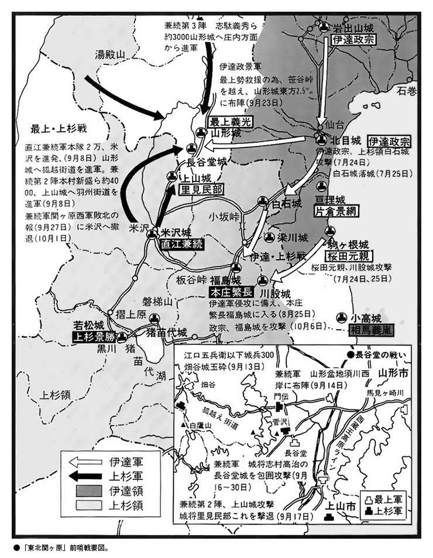
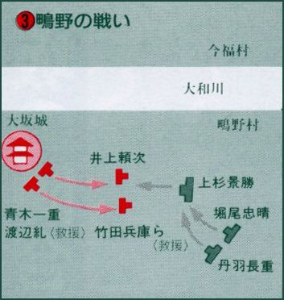
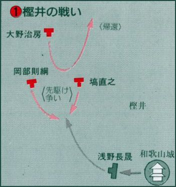
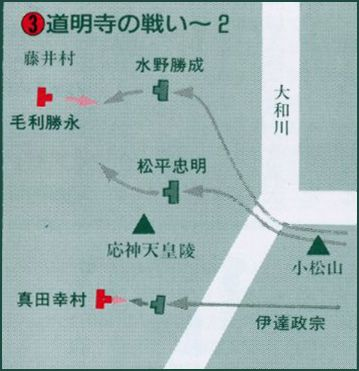
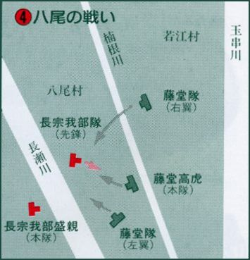

| 小和田哲男選集5 伊達政宗 真田昌幸・幸村 大坂の陣 (歴史群像デジタルアーカイブス) | |
| 小和田哲男 | |
| (2016) | |
歴史群像デジタルアーカイブス
小和田哲男選集５
伊達政宗 真田昌幸・幸村
大坂の陣
小和田哲男
本書は「歴史群像デジタルアーカイブス」シリーズのうち『＜伊達政宗と戦国時代＞動き出した東北ロワイアル』『＜伊達政宗と戦国時代＞「あわよくば」天下に号令』『＜伊達政宗と戦国時代＞秀吉も舌をまく豪胆さ』『＜伊達政宗と戦国時代＞隠れ長者のスキャンダル』『真田昌幸の手腕「たび重なる主家替えの訳」』『真田昌幸の手腕「豊臣家臣としての真田昌幸」』『＜大坂の陣＞「城内における真田幸村」「真田幸村の遺児」』『大坂の陣をとりまく人々』『大坂の陣の実像を解読する』を合本したものです。
＜伊達政宗と戦国時代＞動き出した東北ロワイアル
概論 戦国前夜～関ヶ原
中央から遠く離れた奥羽は名門斯波氏の流れをくむ大崎氏が奥州探題として諸氏を抑えてきた。
だが、やがて伊達氏が勢力を伸ばし政宗の祖父晴宗の時代には奥州探題となる。
そして政宗の代に南奥州を平定するも、秀吉の権勢が及び、奥羽の戦国時代は終焉を迎える。
戦国前夜の奥羽
奥州探題大崎氏が全盛
奥羽とは、陸奥と出羽を合わせて、こう呼んでいる。
このうち、陸奥、すなわち奥州には奥州探題が置かれ、足利一門の斯波家兼が任命され、大崎地方の志田・玉造・賀美・遠田・栗原のいわゆる大崎五郡を支配下に置いたため、大崎氏を称するようになった。また家兼は次子兼頼を羽州探題として出羽国最上郡に派遣し、この子孫が最上氏を名乗っている。
もっとも、はじめから大崎氏の力が強かったわけではなく、石塔義房・畠山国氏・吉良貞家らの子孫も奥州探題と称しており、そのため「奥州四探題」などといわれていた。しかし、やがて大崎氏が室町幕府の支援を得て力を強くしていくことになる。
その動きがはっきりあらわれたのは寛正元年（一四六〇）のことで、将軍足利義政が古河公方足利成氏討伐を命じる御内書を奥州探題大崎氏、羽州探題最上氏や伊達氏・白川氏・蘆名氏らに出している。そのころは奥州探題という権威が大きな意味をもっていて、のちに大崎氏と対抗するようになる奥州の豪族たちはいずれも大崎氏のもとに参候していた。
留守氏の関係史料である『余目記録』によると、参候のときの席順も厳密な決まりがあり、大崎氏の席から一間さがって伊達・葛西・南部の三氏が座り、それより一間さがって白川・蘆名・岩城・留守の各氏が座り、さらに二間さがって、桃生・登米・深谷・相馬・田村・和賀・稗貫の各氏が座ったという。これによって、奥州探題大崎氏全盛時代の陸奥の諸将の序列がわかる。
こうした序列は書札礼、すなわち書状の出し方のルールにもあらわれていて、たとえば伊達氏が大崎氏に書状を出すときには、
謹上御宿所 藤原尚宗
というように、最上級の出し方をしているのに対し、大崎氏が伊達氏に出すときの宛所の書き方は、
伊達大膳大夫殿 教兼
というように、疎略といってもよい薄礼ぶりであった。
ところが、下位に甘んじていた伊達氏が戦国時代に突入したころから次第に大崎氏を凌駕していくことになるのである。
伊達稙宗、陸奥守護に任命
砂金と馬が支えた財力
奥羽は、現在の県名でいうと、北から青森・秋田・岩手・山形・宮城・福島の東北六県でかなり広大である。そのため、北の三県、青森・秋田・岩手と山形県の北部を北奥羽などといい、南の二県、宮城・福島の範囲と山形県の南部を南奥羽などといっている。
なお、奥羽は古くから砂金と馬の産出で知られていた。特に砂金は、戦国時代の半ばに灰吹法とよばれる精錬法が伝わり、金鉱石から金を採るようになるまで、奥州が国内最大の産金地帯であった。中世、すでに水田稲作が東北地方でもはじまっていたが、豪族たちの財源は何といっても砂金と馬であった。
たとえば、『伊達家文書』に収録されている「上洛日記」には、伊達家十二代の伊達成宗が文明十五年（一四八三）に上洛したとき、成宗が将軍義政、子義尚、および義政夫人日野富子をはじめ、幕府関係者に贈り物をした様子が記録として残っている。それによると、砂金三百八十両、銭五万七千疋、馬九十五頭、太刀二十三振におよんでいる。銭と太刀は他からも贈られていたと思われるが、これだけの量の砂金と馬は奥羽の伊達氏だから用意できたといっても過言ではない。そして、この砂金と馬を有効に使って伊達氏はさらに飛躍するのである。
伊達氏十四代の稙宗のとき、大永二年（一五二二）十二月のことであるが、陸奥国守護職に任命されている。鎌倉時代に引き続き、室町時代にも各国に守護が置かれていたので意外と見すごされてしまうが、実は、室町時代、陸奥には守護は置かれていなかったのである。奥州探題が置かれていたので、特に守護は必要なかったわけである。
その奥州探題とは別に陸奥国守護を置き、伊達稙宗をその任にあてたのは、稙宗からの文字通りの献金攻勢に幕府側が屈したことを示している。こうして、新興勢力である伊達氏の擡頭で、それまでの大崎氏の権威による支配に終止符が打たれることになった。
伊達氏による勢力拡大
大崎氏支配の終焉
こうした事態はさらに思わぬ波乱をよぶこととなる。それまで、大崎氏の家臣となっていたり、家臣扱いではなく保護下にあったような留守・八幡・国分・山内・長江・相馬・田村・信夫といった豪族をはじめ、真坂氏を筆頭とする高泉氏・黒川氏といった親類衆や、氏家・中目といった宿老たちの間に動揺がはしったのである。大崎氏は、外面的な強大さの割にはきわめて不安定な、弱い存在だということが露呈する形となった。
具体的には、天文五年（一五三六）のことであるが、大崎領内で反乱がおき、新田・氏家・一迫・高泉・古川氏ら有力家臣および庶流家が当主義直のいうことをきかなくなった。このとき、義直は自分の力では反乱を鎮圧することができず、伊達稙宗に救援を依頼し、結局、稙宗の活躍によって反乱を鎮めているのである。
ここで、伊達氏と大崎氏の力関係は完全に逆転し、このあと、伊達氏の戦国大名化の動きが加速し、同年、分国法として有名な『塵芥集』を制定し、翌々七年（一五三八）には「段銭古帳」を作成させている。これは、段銭賦課の記録で、段銭徴収は守護公権に属していて、稙宗が陸奥国守護に任命されたあと、こうした守護公権を行使していたことが明らかとなる。稙宗は、こうした守護公権を梃子にして、それまでなかなか入りこむことのできなかった国人領に浸透していったのである。
このころ、南奥羽で力をつけてきたもう一人が会津を本領とする蘆名氏である。蘆名氏の勢力は福島県の中通りから東白川地方におよんでいたが、それら地域には常陸の佐竹氏の力もおよんできており、南奥羽では、奥羽の勢力と関東の勢力が衝突する動きもみられたのである。
北奥羽では三戸の南部氏が大永四年（一五二四）、津軽地方の反乱を平定して頭角を現わし、浪岡に居住していた北畠顕家の子孫浪岡氏を滅ぼし、さらに南下して岩手郡の戸沢氏を攻めて出羽に追い、岩手郡を手に入れている。
その出羽では、安東氏が着実に力をつけていた。安東氏は、はじめ、陸奥津軽の十三湊を本拠にして成長し、鎌倉末期ごろには藤崎城に拠る宗家の上国家と十三湊を本拠とした支流の下国家に分かれていた。この下国安東氏は、その後、室町期に、南部氏の津軽侵攻によって、十三湊から蝦夷地に逃れ、まもなく出羽に戻って檜山に城を築き、そこを本拠にしていた。したがって下国安東氏を檜山安東氏ともよんでいる。
一方、南部氏の圧迫を受けたとき蝦夷地に渡らず、そのまま津軽から南下して、出羽国秋田郡を支配し、湊（現在、秋田市）に城を築いた一族がいて、これを湊安東氏とよんだ。のち、檜山安東愛季のとき、湊安東氏と一本化し、戦国大名としての安東氏が生まれ、安東氏は秋田城介を名乗ったことから秋田氏とよばれるようになる。この秋田氏の領国は出羽国の秋田・豊島・檜山の三郡で、鹿角郡を南部氏と争う構図となっていた。
さて、陸奥国守護職を手にした伊達稙宗であるが、本拠地でもあり、また苗字の地でもある伊達郡を中心に、信夫・宇多・伊具・亘理・名取・柴田・刈田・置賜の九郡を支配する戦国大名に成長していた。現在の県名でいえば、山形県南部から福島県北部、それに宮城県の南部と中部にわたる広大な領域になっていたのである。
稙宗がこれだけの版図を手にすることができたのは、一つには、陸奥国守護職という権威を手にしたことで、将軍義稙から〝稙〟の一字を受けていたことも権威づけにつながっている。
二つ目として、軍事行動、すなわち武力による近隣諸豪族の征圧もあるが、最も注目されるのは三つ目としてあげられる巧みな外交戦略、具体的にいえば政略結婚である。稙宗には男十四人、女七人の合わせて二十一人の子どもがいたという。その内、二人の男子と六人の女子を、近隣で大きな勢力をもつ大崎・葛西・相馬・蘆名・二階堂・田村・懸田氏らに、男子は養子として押し込み、女子を嫁がせているのである。
こうして稙宗の時代、伊達氏は硬軟両様をうまく使いわけ、奥州における一大勢力にのしあがっていったわけであるが、まだ伊達氏の一人勝ちという状況にはなっていない。天文十一年（一五四二）にはいわゆる「天文の乱」とよばれる稙宗とその子晴宗の争いがおこり、近隣の田村隆顕が間に入って両者の和睦を斡旋し、将軍義輝の停戦命令の御内書を受け、講和が成立するという一齣もあった。この晴宗のとき、城をそれまでの伊達郡の桑折西山城から米沢城に移しているのである。
伊達氏と蘆名氏の抗争
伊達輝宗の引退と謀殺
晴宗の治世後期に、今度は晴宗が子の輝宗と争う事態となった。しかし、このときは晴宗が自ら身を引くことで、父子間の最悪の事態は回避することができた。家督交替の年次については、永禄六年（一五六三）とする説と、翌七年末から八年にかけての時期とする説があるが、中央で、織田信長が急速に擡頭し、関東・甲信越では、北条氏康・武田信玄・上杉謙信といった強豪がしのぎを削る時代であった。
このころになると幕府権威は失墜し、陸奥守護といっても支配の梃子にはならなかった。そこで輝宗が目をつけたのが織田信長であった。周知のように信長は、永禄十一年（一五六八）、足利義昭を擁して上洛を果たし、その後、義昭を傀儡として実権を握り、ついには、その義昭を天正元年（一五七三）には追放していた。
輝宗と信長との交渉が確かな文書にあらわれるのがまさにその年、天正元年であった。輝宗は書状とともに、信長に、籠に入れた鴇色すなわち薄紅色の鷹を献上し、好を通じているのである。信長が鷹狩り好きなことをキャッチしていたのであろう。このあと、信長・輝宗が上杉謙信との戦いで共同歩調をとることになる。こうして、輝宗は奥州の地にあって、信長の「天下布武」の戦いの一翼をになう形となった。
ところが、その信長が天正十年（一五八二）の本能寺の変で明智光秀の謀叛に倒れ、信長による天下統一の動きは頓挫してしまった。信長の突然の死が直接的な引き金になったわけではないが、輝宗は、天正十二年（一五八四）十月、「家督を政宗に譲る」といって隠居してしまった。このとき、輝宗は四十一歳の働き盛り、政宗はまだ十八歳であった。
輝宗が突然隠居したときの輝宗の心情については記したものがなく、推測していくしかない。一つは、何代にもわたって続いてきた、当主晩年の子どもとの争いをくりかえしたくないという思いがあった点。もう一つは、ちょうどそのころ、政宗と弟の竺丸との後継者をめぐる家中の暗闘があり、それが表面化する前に政宗に決めてしまおうという思惑があったものと思われる。
その輝宗が、天正十三年（一五八五）十月八日、二本松城主畠山義継の謀略によって阿武隈川畔で不慮の死をとげるという政宗にとっては思ってもみなかった事態となった。
伊達氏包囲網と政宗
四面楚歌の危機的状況
政宗は二本松城に畠山義継の子国王丸を攻めたが、国王丸は蘆名氏をはじめ、岩城氏・石川氏・白川氏といった南奥羽の大名たちに援軍を求め、さらに常陸の佐竹氏にも援軍を要請している。
ここにおいて、伊達政宗対佐竹義重・蘆名亀若丸・岩城常隆・石川昭光・白川義親連合軍が同年十一月十七日に、奥羽街道と会津街道の交わる要衝の地本宮で衝突し、合戦となった。「人取橋の戦い」の名で知られる戦いである。軍記物によれば、連合軍側三万、伊達政宗側八〇〇〇とあるが、そのころの政宗の領国規模からみて八〇〇〇の軍勢を動員するのは無理で、せいぜい五〇〇〇ほどではなかったかと思われる。連合軍側も実際は一万五〇〇〇から二万くらいだったのではなかろうか。
このあと政宗は翌天正十四年七月十六日に二本松城の畠山氏を滅ぼしている。ところが、そのころまで伊達氏と友好関係を保っていた出羽山形城の最上義光が政宗と敵対しはじめたのである。義光の妹義姫が伊達輝宗に嫁ぎ、そこから生まれたのが政宗なので、義光と政宗は伯父と甥の関係だったわけであるが、二人は、庄内地方の大宝寺氏をめぐる動きの中で対立をはじめ、ついに、政宗の家臣だった鮎貝氏が義光側に寝返ったことで、それまで保たれていた同盟関係が破棄されている。天正十五年（一五八七）十月のことである。
ところで、天正十五年にはもう一つ、奥羽戦国史にとって特記すべき動きがあった、蘆名氏の家督継承問題である。蘆名氏は自ら「会津守護」と称し、十六代盛氏のときには伊達氏や結城氏などと婚姻関係を結び、遠く甲斐の武田氏、あるいは相模の北条氏と結び、常陸の佐竹氏と戦うなど、伊達氏と並ぶ奥羽の大大名に成長していた。
しかし、盛氏のあとを嗣いだ盛興が病弱で早く死んでしまったことから全盛状態にかげりがみえはじめ、盛興のあとを須賀川城主二階堂盛義の子盛隆を迎えた。だが、その盛隆が家臣に殺されてしまい、そのあとを嗣いだ亀若丸も天正十四年に夭逝してしまっていたのである。
亀若丸のあと、誰を迎えるかで家中の意見が割れている。具体的には、佐竹義重の二男義広を迎えようとする派と、輝宗の二男で政宗の弟竺丸を迎えようとする派である。
もっとも、意見が割れたとはいっても、竺丸擁立を唱えたのは少数派であった。亀若丸の時代、亀若丸が佐竹義重からの援軍を得て政宗と戦っており、蘆名氏重臣たちの心情としては、敵対していた伊達氏からあととりを迎えることに難色を示したものと思われる。結局、佐竹氏から義広を迎え家督としているのである。
このことで、蘆名氏ははっきりと政宗と敵対することになった。そのころ、大崎氏の当主大崎義隆も政宗に敵対する動きを示しており、最上義光・大崎義隆・蘆名義広の奥羽の三大名と、常陸の佐竹義重がすべて政宗の敵となってしまったのである。政宗包囲網ができあがった形であった。政宗にとって、文字通り「四面楚歌」という状況である。
郡山戦争と摺上原の戦い
政宗が蘆名氏を滅亡へ追い込む
蘆名・佐竹氏にしてみれば、これは政宗をたたく絶好の機会であった。天正十六年（一五八八）、蘆名義広が、同盟軍であり実父でもある佐竹義重と連合して安積郡まで出馬してきた。六月二十三日から戦いとなり、七月四日に激戦がくりひろげられている。窪田（現在、福島県郡山市）の戦いとか郡山合戦とかよばれているのがそれである。
ちなみに、このときの戦いに、政宗包囲網の一角をになっていたはずの最上義光は出陣していない。それは、この戦いの少し前、政宗と義光の戦いがあり、交戦中の両軍の間に政宗の母義姫が輿で乗りつけ、「和議が成るまでここを動きません」と、必死の講和説得を行い、両軍、戦わずに兵を引いていたからである。
そのようなわけで連合軍側の足並みが揃わなかったこともあり、また、窪田での戦いも長びいたため、厭戦気分も生じ、結局、岩城常隆・石川昭光両人が佐竹義重・蘆名義広連合軍と伊達政宗の間に割って入り、和議が結ばれることになったのである。
こうした状態でいよいよ天正十七年（一五八九）を迎えた。政宗は蘆名氏の重臣筆頭で猪苗代城（現在、福島県耶麻郡猪苗代町古城町）の城主だった猪苗代盛国に内応工作をはじめ、三月、盛国が内応を約してきた。ちょうどそのころ常陸の佐竹家中でも、家臣の小野崎照通の謀叛がおこり、義重から義広への援軍派遣が難しいという事態が生じてきたのである。
義広は、それまで父義重からの援軍があったからこそ政宗と戦うことができたわけで、そのことは家臣たちの共通認識であった。重臣たちの中からは、「義重殿が援軍を送ってこないようでは、佐竹から養子を迎えた意味がない」とか、もっとあからさまに、「義広殿には常陸に帰ってもらい、もっと役に立つ家から家督を迎えるべきだ」という者も出る始末だったという。当時の戦国大名当主と重臣との力関係を考えると、ありうる話である。蘆名家中において、義広のリーダーシップを疑問視する空気が生まれていたことはたしかであろう。
そうした状況を情報として得た政宗は好機到来とみて、同年四月二十二日、大軍を率いて米沢城を出発した。しかし、いきなり会津には向かわず、会津とは正反対の相馬氏の城を攻めている。もっとも、これは政宗の陽動作戦であった。この出陣に合わせ、猪苗代盛国が反旗をひるがえし、摺上原（磨上原とも書く）の戦いとなるのである。
結局、この戦いで敗れた義広は黒川城を捨てて白河に走り、さらに実家である佐竹氏を頼って落ちてゆき、ここに、奥州の名族蘆名氏は滅亡したのである。
奥羽に及ぶ秀吉の権勢
小田原参陣を選ぶ政宗
政宗が蘆名氏を滅ぼし、奥羽において一人勝ちといってよい状態で版図を広げていたころ、中央では豊臣秀吉による全国統一の動きが進んでいた。天正十三年（一五八五）に四国を平定し、同十五年には九州を平定し、残るは関東・東北地方だけであった。
秀吉は九州攻めの前に、薩摩の島津義久に対し、大友宗麟との戦いをやめさせる九州停戦令を出しており、関東の北条氏政・氏直父子に対しても「関東惣無事令」を出している。惣無事とは読んで字の如くで、「すべて無事」の意味で、大名同士の戦いを私戦とし、それを関白としての秀吉が停止を命ずるというもので、関東惣無事令については、これまで天正十五年に出されたとされていたが、最近の研究では天正十四年とする見方が有力である。その関東惣無事令に違反したということで、天正十七年十一月二十四日、秀吉が北条氏政・氏直に宣戦布告の文書を出したことは周知の通りである。
なお、関東惣無事令だけでなく、奥両国惣無事令も出されている。奥両国とはいうまでもなく、陸奥・出羽両国で、合わせて関東・奥両国惣無事令などとよばれている。
この奥両国惣無事令も天正十四年とする説もあるが、陸奥・出羽に関しては十五年でもいいのではないかと考えられる。ただ、十四年にしても十五年にしても、十七年の政宗による蘆名攻めは奥両国無事令に違反したことはまちがいないわけで、当然のことながら、秀吉からの糾弾を受けている。
政宗は糾弾される前に、それこそ、摺上原の戦いの直後、秀吉のもとに弁解のための使者を送っていた。使者の口上は、「奥州五十四郡の儀は、前代より伊達探題につき、諸事政宗申し付くる儀、今もつて、その隠れあるべからず候」というものであった。つまり、「自分は奥州探題である。探題としての権限で蘆名氏を攻めたのだ」という論理である。
この政宗からの弁明のための使者が上洛したのと入れかわりに、秀吉から、蘆名攻め非難の書状が届けられており、秀吉は関白としての立場で政宗を問責していた。政宗も、関白の論理に奥州探題の論理では太刀打ちできないと考え、秀吉側近の浅野長政や、豊臣秀次・前田利家らに馬を贈り、秀吉への取り成しを依頼している。
ちょうどそのころ、石田三成が蘆名氏の旧臣のもとに兵糧米・鉄・鉛などを送っていたことが『会津旧事雑考』から明らかとなり、秀吉としては、蘆名遺臣を再組織し、それと佐竹義重・上杉景勝に協力させ、蘆名領を奪回しようとしていたことがうかがわれる。
政宗が秀吉に問責され、それに対し必死で弁明しているころ、関東で関東惣無事令違反がおきていた。北条氏の家臣で、当時、北条方の支城となっていた沼田城代をつとめていた猪俣邦憲（範直とも）が、真田領の名胡桃城を奪ってしまったのである。ここに、秀吉にしてみれば、北条氏討伐の大義名分ができた形で、すぐ、宣戦布告状を出し、それを諸大名にも送りつけ、小田原攻めに出陣するよう求めている。奥羽の大名にも届けられたことは、北条氏宛の宣戦布告状の写しが政宗のもとにも届けられていたことによって推測することができる。
政宗はそのころまで、北条氏と結んで秀吉に対抗するつもりでいたため、小田原参陣の命令にすぐ従うつもりはなく、徹底抗戦の構えでいた。しかし、秀吉側からは執拗に参陣を促す書状が出され、たとえば、天正十八年（一五九〇）二月二十一日付の秀吉家臣木村吉清書状では、「小田原に参陣すれば、会津は安堵され、さらに加増がある」とあり、同日付の浅野長政の書状にも、「秀吉殿は、会津のことは不問に付すといっている。すぐに小田原に参陣するがよい」と書かれていた。
政宗としては、そのまま北条氏とともに秀吉に敵対するか、臣従するかの二者択一をせまられたわけで、迷いに迷ったあげく、小田原に参陣する道を選んでいる。結果的にはこのことが、伊達家を存続させることになったわけである。
結局、七月五日、北条氏直が秀吉に降伏を申し出、小田原開城となり、北条氏政・氏照が切腹。氏直は高野山に送られ、ここに、戦国大名北条氏は滅亡した。
秀吉の奥州仕置き
豊臣政権の支配下へ
秀吉は七月十七日、小田原城を出発し、奥州に向かい、同月二十六日、下野の宇都宮に到着し、そこで「奥州仕置」が発表された。たとえば、七月二十六日付伊達政宗宛の木村吉隆書状（『伊達家文書』）によると、その要点はつぎの五つに整理される。
（１）宇都宮で奥州・羽州その他に対する仕置の方針を示す。
（２）そのため、五、六騎でよいから、至急宇都宮に出頭せよ。
（３）山形城主最上義光にも宇都宮出頭を命じた。
（４）奥州仕置にあたっては、政宗の意見を参考とし、仕置の方針に従わない者には秀吉の使い（遣責使）を派遣する。
（５）政宗の妻子の上洛を命ずる。
ここで特に注目されるのは（４）である。奥羽仕置にあたって、政宗の意見が重視されたことがわかる。秀吉としても、奥州探題の家柄である伊達氏の意向を尊重せざるをえなかったのであろう。
結局、陸奥では、伊達・南部・津軽・岩城の諸氏がその地位を認められ、大崎・葛西・石川・白川氏らが所領を没収された。出羽では、最上氏をはじめ、戸沢・六郷・小野寺・秋田氏らがそのまま地位を認められている。奥羽諸大名の処分をみると、明らかに、出羽国の諸氏が安堵されている率が高い。これは、秀吉に対する認識を、太平洋側の大名より、日本海側の大名の方が正しくつかんでいたからと思われる。
関ヶ原前後の奥羽
激闘、東北の関ヶ原
政宗がぎりぎりのところで小田原攻めに参陣してきたので、秀吉としては伊達氏を残さざるをえなかったわけであるが、危険分子だという意識はもっていた。そこで、政宗の監視と、江戸城に入った徳川家康を牽制させるねらいで、蘆名氏の居城だった会津の黒川城に蒲生氏郷を入れた。氏郷はそこを若松城と名づけ、以後、氏郷が秀吉の「奥州仕置」の実質的責任者となったのである。
ところが文禄四年（一五九五）、その氏郷が四十歳という若さで急死してしまった。結局、秀吉は、氏郷に代わる大物として越後の上杉景勝を会津若松に移すこととした。慶長三年（一五九八）正月のことである。
景勝としては父祖の地だった越後を離れ、全く新しい土地での国づくりをしなければならないという立場に置かれたわけであるが、そんな最中の同年八月十八日、秀吉が死に、五大老筆頭だった家康と、同じく五大老の一人である景勝との対立が次第に表面化し、ついに、会津攻めという事態を迎えている。この、家康率いる上杉征討の軍勢が会津に向かったとき、石田三成が挙兵し、関ヶ原の戦いとなった。
奥羽でも、〝東北版関ヶ原〟などといわれる東西両軍の激しい戦いがあった。その象徴的な戦いが長谷堂城の戦いで、山形城の東軍最上義光の支城である長谷堂城を、西軍上杉景勝の執政直江兼続が攻めている。このとき、伊達政宗は東軍に属し、一族の留守政景を義光の援軍として送っている。
関ヶ原の戦いの結果、上杉景勝はそれまでの会津若松一二〇万石から出羽米沢三〇万石に減らされ、東軍に属した伊達政宗・最上義光らには若干の加増があった。
＜伊達政宗と戦国時代＞「あわよくば」天下に号令
宿望むなしく、天下ついにまわらず
夢と消えた百万石
秀吉の死によって、豊臣政権は足もとからゆらぎはじめた。跡とりの秀頼がわずか六歳という幼さが致命的であり、いくら石田三成らが「政権は豊臣家が世襲する」といっても、徳川家康ら実力者の台頭を押さえることはできなかった。
政宗は、秀吉から知遇をうけてはいたが、秀吉個人に恩義は感じてはいたものの、特にその子秀頼を盛りたてようという意識はもっていなかった。むしろ、「天下は実力ある者がまわりもち」という考えをもっており、秀吉の次は徳川家康と読んでいたようである。政宗は、秀吉生前から家康に接近しており、家康も政宗を秀吉に取りなしてやったり、様々な形で支援しており、密接な関係にあった。
秀吉が没したあと、わずか五か月しかたたない慶長四年（一五九九）正月二十日、堺の豪商であり茶人でもある今井宗薫が間にたって、政宗の長女五郎八姫と、家康の六男忠輝とが婚約している。忠輝八歳、五郎八姫六歳ということからもうかがわれるように、政宗と家康とをさらに密接な関係にしておこうという計算による婚約であったことは、確実である。
ところで、この婚約には、もう一つの背景があった。というのは、政宗からも、家康からも、豊臣政権の奉行たちに対し、婚約の許可を求める手続きをしていないのである。
秀吉生前の文禄四年（一五九五）、秀吉は大名同士の婚約を許可制にした。これは、勝手に政略結婚をして大名同士で派を作ることを警戒したからで、豊臣政権の永続にとって不都合になるような大名同士の結びつきを未然に防ごうとする意図があったからである。さしずめ、政宗の娘と家康の息子の結婚などは、その危険性大ということで、不許可になった可能性すらあった。
政宗、家康は、「勝手に婚姻を取り結んではならない」という掟があることを承知の上で、この婚約にもっていった。それを知って石田三成らが激怒したことはいうまでもない。表面的には怒りをあらわしながら、内心では、「これで家康と政宗の二人を追い落とすことができる」と喜んだものと思われる。
三成は政宗に詰問したが、政宗は「そのような掟のあることは知らなかった」と逃げており、前田利家が家康に詰問したが、家康は「縁組については媒妁人から届けられていると思っていた」と、とぼけてみせている。三成と家康との対立は、この五郎八姫と忠輝の婚約のいざこざから、にわかにエスカレートする様相をみせはじめたのである。
さて、慶長五年（一六〇〇）の関ヶ原の戦いのとき、政宗は躊躇することなく東軍家康方に身を投じた。政宗に与えられた任務は会津の上杉景勝に対して備えることであった。
関ヶ原決戦の一か月ほど前、家康は政宗に対し、一通の覚書を与えている。『伊達家文書』を読み下しにすると、
覚
一苅田 一伊達 一信夫 一二本松
一塩松 一田村 一長井
右七ヶ所、御本領の事に候の間、御家老衆中へ宛行はれるべきため、これをまゐらせ候、仍って件のごとし
慶長五年八月廿二日 家康（花押）
大崎少将殿
のごとくなり、宛名の「大崎少将」は政宗のことなので、家康が、「関ヶ原の戦い勝利の暁には、刈田郡、伊達郡、信夫郡、二本松、塩松、田村郡、それに長井の七か所を宛行う」とした約束手形である。
この七か所の石高は合計すると四九万五八〇〇石といわれている。政宗が秀吉から与えられていた石高は五八万石なので、合わせると一〇七万五八〇〇石となり、一躍「百万石大名」の仲間入りを果たすことになる。そのため、この「覚」を「百万石のお墨付」などとよんでいるのである。
家康の作戦としては、何としても上杉景勝を会津に釘づけにしておくことが必要で、そのため、政宗が前々からほしがっていた伊達氏の本領だったところを含むこの七か所を与える約束をしたものと思われる。家康は政宗に甘い餌を与え働かせようとしたわけである。
ところが、政宗は関ヶ原の戦いのとき、家康の心証を害することをやってしまった。しかも一度ならず二度までもやってしまったのである。
一度目は、関ヶ原の戦いが終わったにもかかわらず、信夫郡、伊達郡に攻め入っていることであり、これが、「政宗は勝手に旧領に攻め入り、火事場泥棒的な行為をした」とうつったものである。
そして二度目はもっと決定的であった。南部利直が出陣して留守なのをねらって、秀吉によって所領を没収された和賀忠親が一揆を起こしたが、またまた、この一揆を裏であやつっていたのが政宗だったのである。それがばれて、家康の耳にも入ってしまった。家康の考えとしては、「そのような政宗に刈田郡以下七か所、石高にして四九万五八〇〇石をやる必要はない」といったところであろう。事実、家康は関ヶ原の戦い後の論功行賞で、政宗に二万石を加増しただけであった。「百万石のお墨付」は反故とされ、政宗の「百万石大名になる」という夢も消えてしまったのである。
自ら蒔いた種とはいえ、関ヶ原の戦いにおける働きの代償がわずか二万石ということで、そのショックはかなり大きかったものとみえる。
以後、家康に対しては、「従順な」といえるほどの対応の仕方をしているのである。それは、慶長六年（一六〇一）から普請がはじまった仙台城（青葉城）の築城経過からもうかがわれる。
『東奥老士夜話』によると、政宗は、岩出山城から仙台城に城を移すとき、青葉山、榴ヶ岡、野手口の三か所を候補として家康にお伺いをたて、その結果、青葉山に決定したとしている。つまり、自己の居城地の決定権が政宗自身になく、家康にあったという。
また、このとき政宗は、仙台城を新しく築くというニュアンスではなく、「それまであった千代城を再興したい」といういい方をしており、家康の心証を害したうしろめたさというか遠慮があったことがうかがわれる。その遠慮は、政宗が仙台城に天守閣を築かなかったことからもわかる。
政宗が仙台城を築いた慶長期は、わが国の城郭史に特筆される築城ラッシュの時代で、すべてにおいて派手好みの政宗なので、作ろうと思えばかなり大きな天守閣を作ることも可能であった。しかし、政宗は仙台城に天守閣を築いてはいない。これは、やはり、家康に対する遠慮からと思われる。「百万石のお墨付」を反故にされたショックは、あとあとまで尾をひいていたことがわかる。

キリスト教容認から弾圧へ
家康に従順な政宗の生き方は、キリスト教に対する接し方においてもたしかめることができる。
政宗がキリスト教に接しはじめたのはかなり遅く、慶長十三年（一六〇八）ごろといわれている。あるとき、政宗の側近くに仕える侍女の一人が病気になった。一説には、単なる侍女ではなく、側室の一人だったともいわれるが、侍医たちの診療にもかかわらず、病状は悪化するばかりであった。そのとき、人伝えに、江戸浅草にあるキリシタン病院にブルギリヨという名医がいることを聞き、フランシスコ会宣教師ルイス＝ソテロの口ききによって、政宗は彼女をブルギリヨにみてもらうことになり、西洋医学によって彼女の病気はなおったのである。
その後、政宗は、ソテロと三人のバテレンに、仙台領内でのキリスト教布教を許可している。慶長十六年（一六一一）のことであった。
仙台城の城門と大広間にキリスト教布教の自由を掲示させたというのだから相当の力のいれようである。もっとも、ソテロの熱心な勧めにもかかわらず、政宗自身は受洗しようとはしなかった。
ところで、政宗とキリスト教とのかかわりでいえば、慶長十八年（一六一三）九月十五日に牡鹿半島の月ノ浦を出帆していった支倉常長一行についてふれなければならない。いわゆる慶長遣欧使節である。この慶長遣欧使節にはいくつもの謎があり、たとえば、目的が何だったかという根本的なことすらよくわかっていない。
家康からノビスパニア副王へ宛てた親書では、商船の往来を求めてはいるが、キリスト教の布教には釘をさしている。しかし、政宗の親書では、宣教師の派遣を求めているのである。政宗からイスパニア国王に宛てられた親書でも、フランシスコ会派の宣教師を送ってほしいといっており、いかにも純粋に宗教的な行為であったとの印象をうける。
しかし、実際はどうもそればかりではなかったようである。政宗のねらいは、ノビスパニアとの通商がねらいだったという考え方が有力視されている。直接的な通商だけではなく、航海術の習得、さらには、ノビスパニアの先進的な鉱山技術の習得もいれれば、政宗のねらいが何であったかの基本的な考え方が浮き彫りになってくるといってよい。
なお、支倉常長一行が太平洋を渡った慶長十八年（一六一三）という年は、わが国のキリスト教に対する考え方が大幅にかわった年でもあった。家康が宣教師の追放を命じているのである。支倉常長が日本にもどったのは元和六年（一六二〇）で、実に足かけ七年の長旅だったわけであるが、支倉常長ら慶長遣欧使節一行が帰国する前後から、政宗は猛烈なキリシタン弾圧にのりだしているのである。そこには、伊達家を守るため、幕府の意向に従順でなければならないという政宗の考えがあらわれていたとみることができよう。
秀忠・家光と政宗
政宗の最後の出陣は、慶長十九年（一六一四）十一月から十二月にかけての大坂冬の陣と、翌元和元年（一六一五）五月の夏の陣である。政宗は冬の陣、夏の陣の両方に出陣しているが、冬の陣ではこれといって目立った働きはしていない。しかし、夏の陣には大活躍をしているのである。政宗の股肱の臣片倉景綱の子重綱の働きはとりわけめざましく、後藤基次を討ち破っており、さらに政宗は、大坂方の軍事面での中心真田幸村（正しくは信繁）隊と戦っている。
この大坂冬の陣と夏の陣の間に、その後の伊達氏の方向性を決めたともいえる大きな動きがあった。
慶長十九年十二月二十八日のことであるが、政宗の長男秀宗が四国の伊予宇和島において知行一〇万石を与えられ、はじめて大名に取り立てられている。
秀宗は政宗の長男として生まれ、幼いころには、やはり幼なかった秀頼につけられていた。名乗りの秀宗の〝秀〟の字は秀吉から与えられたものとも考えられ、秀吉の知遇を得ていたことは確実である。
ところが、時代が豊臣の世から徳川の世に変わっていくにつれ、あまりに豊臣サイドでありすぎた秀宗は、政宗にとっては、ある意味では邪魔な存在となっており、伊達という家を守るためには、豊臣色の濃い秀宗では都合が悪くなってきたのも事実であった。
ある時点から、政宗は、家督は秀宗ではなく、弟の忠宗の方に譲る腹を固めている。たしかに、秀宗の母は政宗の側室であり、忠宗の母が政宗の正室であったということも大いに関係していたが、根本的には、豊臣色の濃い秀宗にではなく、豊臣色に全く染まってない忠宗をたてる方が、徳川家のおぼえもめでたい、との判断があったものと思われるのである。
忠宗の〝忠〟の字が二代将軍秀忠の〝忠〟の字を与えられたというたしかな証拠はないが、さきの秀宗が秀吉の偏諱を与えられたと判断されるのと同じように、忠宗の場合も秀忠の偏諱を与えられたとみるのが自然であろう。つまり、忠宗は明らかに徳川サイドであった。
このように、政宗は徳川家に対して従順な態度をとっているわけであるが、そうした態度が一貫していたものとみるのは早計である。少なくとも、秀忠に対しては、かなり対抗意識をもっていたことがうかがわれる。
政宗はいかにも戦国武将らしく、「力のある者が天下をとる」と考えていた。だからこそ、秀吉死後、天下が家康の手に移っていくのを認め、協力もしていたのである。こうした、「天下はまわりもち」という意識でみると、家康死後、「徳川家にかわって自分が」という考え方が生まれてくるのも当然であった。
たしかに、家康と政宗をくらべれば、力量は家康の方が上である。しかし、秀忠と政宗をくらべた場合、かならずしも秀忠の方が上とはいえない。政宗の方が実戦経験や外交上のかけひきは上であったといえる。つまり、家康が元和二年（一六一六）に没したとき、「天下はまわりもち」という論理でいけば、秀忠がすんなり家康の天下を継続する必然性はないという考え方が生まれて当然である。
事実、家康が没する前後、「政宗が謀叛をおこそうとしている」という噂がとびかっている。たとえば、当時、平戸商館長だったリチャード・コックスは、その『コックス日記』の一六一六年二月二十九日（和暦元和二年一月二十三日）の条に、
‥‥皇帝とその子カルサ様との間に、戦争が起りかけている。カルサ様の背後には、彼の義理の父政宗殿が付いている。その戦争の原因は、さる大坂の役において、皇帝が城や属領を渡さなかったためである。
とみえる。
皇帝は家康をさし、「カルサ様」は「上総様」のことで、上総介の受領名をもっていた松平忠輝をさしている。忠輝は家康の六男で、政宗の娘五郎八姫を娶っており、ここでコックスが記しているのは、「忠輝と政宗が結んで家康に謀叛をおこそうとしている」という内容である。
噂はあくまでも噂であり、たまたま、そうした噂をコックスが聞いて、それをそのまま日記に記したということになる。では、その噂は根も葉もない噂だったのだろうか。
この噂が流れたあと、家康は病死するが、それから二か月余たった七月六日、忠輝は改易処分をうけ、所領を没収され、伊勢国朝熊（三重県伊勢市朝熊町）に流されているのである。そして、政宗自身、だいぶのちのことになるが、秀忠を自分の屋敷に招待したとき、政宗自ら膳をもって秀忠のところへもっていったとき、若年寄の一人が「毒味を」と声をかけたのに対し、「将軍家を殺そうとしたのはもう十年も昔のことだ。そのときだって、毒などで殺そうとは思わなかった。馬を乗りよせ、戦いで殺そうと思ったのだ」といいきっている。
このエピソードは、内容があまりに現実ばなれしているため、疑問視されることもあるが、エピソードのもとは、政宗の側近が筆録した『政宗公御名語集』に出てくるものであり、同書の史料としての信憑性については定評があるところなので、無下に否定しさることはできないように思われる。
政宗は、家康の死の前後、「あわよくば将軍家にとってかわりたい」と考えたことがあったことは事実だったとみるべきであろう。
しかし、結果として、政宗は謀叛をおこさなかった。「おこせなかった」という方が正しいいい方かもしれない。政宗は、家康発病の知らせをうけ、駿府城にかけつけ、病床の家康を見舞っているが、臨終まぎわの家康から、秀忠をもりたてるよう依頼されている。
このシーンは、考えてみれば、秀吉の臨終のときと同じである。あのとき、秀吉は、家康の手をとって秀頼のことを依頼した。今回は、その家康が政宗の手をとって秀忠のことを依頼しているのである。「天下はまわりもち」と考えれば、政宗が、秀忠にとってかわって天下に号令するという道も可能であった。しかし、歴史はそのようには進まなかったのである。
決定的なちがいは、秀吉の死のときは、秀頼がまだ幼かったのに対し、家康の死のときは、秀忠がすでに二代将軍となっていた点である。つまり、すでに、「政権は徳川家が世襲する」というルールが、天下周知のこととして定着していたことである。よほどの力がなければ、そのルールをかえることは不可能であった。
女婿忠輝の改易は、政宗にしてみれば、たとえようもないくらいの大きなショックであったと思われる。政宗は、「忠輝を皇帝にし、自らは関白となる」という構想をもっていたといわれる。伊達氏は、本姓藤原氏とされている。藤原鎌足の曽孫魚名を経て、さらにその玄孫にあたる中納言山蔭の流れという。つまり、源氏ではないので将軍になる方向ではなく、関白の道を選んだわけである。
おそらく、家康の死後、何の混乱もなく秀忠のもとに諸大名が結集していく様子をみて、政宗はそれまでの「天下はまわりもち」とか、「実力ある者が天下を治める」といった考え方を放棄したのであろう。
秀忠は、家康の死によって、はじめて自分の政治ができるようになった。そして、元和九年（一六二三）七月二十七日、将軍職を子の家光に譲った。以後は秀忠が大御所とよばれ、将軍家光より上に立つ形となった。
秀忠が没したのは寛永九年（一六三二）正月二十四日であった。
死の直前、秀忠は政宗を枕もとに招いて家光のことを依頼している。
政宗は、さきに家康から秀忠を盛りたてるよう依頼され、今度はまた、秀忠から家光の後見を頼まれているのである。そのとき政宗は六十六歳。本当の意味での戦国生き残りは、大名クラスではこの政宗ぐらいなものであった。それだけに、他の大名に対する押さえとしては大きな意味をもっていた。
臨終にあたって秀忠が政宗に家光の後見を依頼したのも、そのような背景があったからであろう。
すでに政宗は寛永四年（一六二七）から、仙台城を出て、仙台城下のはずれの若林というところに屋敷を作り、ふだんはそこに居住していた。家督を子の忠宗に譲ったわけではないので純然たる隠居というわけにはいかないが、政治の第一線からは身を引いた状態であった。
寛永十三年（一六三六）五月二十四日、江戸の桜田屋敷で没した。享年七十歳である。
＜伊達政宗と戦国時代＞秀吉も舌をまく豪胆さ
秀吉を籠絡した豪胆と居直り
奥州探題のプライド
政宗が東北征圧の戦いを推し進めているころ、中央では、豊臣秀吉による天下統一の戦いが推し進められていた。天正十五年（一五八七）の九州征伐によって、島津義久が降服したことにより、あと残るは東北地方と関東地方のみという状況であった。
政宗の父輝宗が織田信長に鷹を贈って好を通じていたのと同じように、政宗も秀吉に馬を贈って友好関係は保っていた。政宗の意識はあくまで友好関係であって、従属関係ではなかったのである。
しかし、関白となった秀吉は秀吉で、関白としての豊臣政権に服属することを求めており、やがて、この意識のずれがのっぴきならない事態を迎えることになる。
秀吉に奥州産の名馬を贈って好を通じながら、政宗はそのいっぽうで小田原城の後北条氏と結んでいた、これは佐竹氏・蘆名氏を敵としている必要上からの遠交近攻策型の同盟パターンであると同時に、後北条氏が徳川家康と同盟関係にあったため、伊達・後北条・徳川の関東・東北大名連合によって、豊臣政権に抗することができるという読みがあったからである。
この関東・東北大名連合から徳川家康が脱落してしまったあとも、政宗は豊臣政権に包摂されない独自な道を歩んでおり、ついに天正十七年（一五八九）六月五日、会津の磐梯山麓摺上原で蘆名義広を討ち破った。これは、奥州征覇をねらう政宗の既定の路線であり、方針であったわけであるが、それまで政宗の軍事行動を黙認してきた秀吉にしてみれば、「もはや我慢の限界」というところであった。
というのは、秀吉は、すでに天正十五年の時点で、関東と陸奥・出羽の大名たちに対し、「豊臣政権の許可なく、領地の取りあいの合戦はやってはならない」という内容の私戦禁止令を出していたからである。
政宗が秀吉の許可なく蘆名義広を滅ぼしたことは、「関東・奥両国惣無事令」とよばれる秀吉による私戦禁止令を破るものであり、秀吉は政宗の蘆名攻めを非難する書状を政宗に出している。そして、政宗の方でも、ちょうどそれといれかわりのように、秀吉に対して「なぜ蘆名氏を滅ぼしたか」について、弁明のための使者を出している。
弁明の中には、たとえば、「会津方が約束を違えた」とか、「戦いは会津方がしかけてきた」とかの内容があるが、政宗が一番強調したかった点は、「自分は奥州探題である。奥州探題の権限で、探題の命令を聞かない蘆名氏を攻めたまでである」ということであったろう。つまり、政宗は、奥州探題の論理で自己の行動を正当化しようとしていたのである。
この、政宗の奥州探題の論理に対し、秀吉は関白の論理で対抗した。秀吉が小田原征伐を急いだ背景の一つに、政宗による蘆名攻めがあったものとみてよいであろう。
政宗が北条氏政・氏直父子と結んでいたことはすでにみた通りであるが、実は、この後北条・伊達同盟があったがために、氏政・氏直父子が秀吉に対して強気になって出たという側面があったことも事実である。秀吉と一戦をまじえることを決意した時点で、氏政・氏直父子は小田原城に籠城して戦う覚悟を決めているが、籠城戦の場合、味方が攻城軍の背後を攻めるという動きがなければ全く勝目がない。これを「後詰」とよんでいる。つまり、後北条氏は、政宗が「後詰」となって来援してくれることを見越して対秀吉との戦いにふみきったとみられるのである。
秀吉は、後北条氏を滅ぼしたあと、服属してこない陸奥・出羽の諸大名を討つ腹でおり、事実、天正十八年（一五九〇）正月十三日付の蘆名旧臣山内氏勝宛の石田三成書状（『新編会津風土記』所収文書）によると、秀吉は後北条氏を滅ぼしたら、そのまま会津に攻め入り、政宗の首をはねるつもりだったことがうかがわれる。
遅れた小田原参陣
さて、そのころの政宗の動きであるが、北条氏政・氏直父子と手を結んであくまで秀吉に抗するか、それとも降伏してしまうか。考えはゆれていたものと思われる。結局は豊臣政権に包摂される道を選択することになるが、政宗がそのように決意するに至った要因は何だったのだろうか。
一つには、小田原征伐のときの秀吉軍が、二一万とも二二万ともいわれる大軍であり、全く歯がたたない相手であることをみせつけられたためと思われる。「後詰」は、籠城兵と「後詰」の支援兵とが、攻城兵を攻めるというパターンであるが、このときの秀吉軍のような大軍相手では、「後詰」を成功させるのはきわめて困難である。
そしてもう一つの原因は、秀吉からの勧降工作があった点である。秀吉としても、できれば戦わずに服属させることができればそれにこしたことはない。木村吉清や浅野長政を使って勧降工作を行っている、餌をちらつかせたことはいうまでもない。餌は所領であった。つまり、「小田原に参陣すれば、それまでの本領はもちろん、会津も安堵する」といった内容である。
「会津攻めのことは不問に付す」という一項によって、政宗の心はかなりゆらいだものと思われる。しかも、二一万とも二二万ともいわれる秀吉軍の力をみせつけられただけに、次第に小田原参陣へと傾いていったことは考えられる。
秀吉軍が小田原城の前衛の支城である山中城を落としたのは天正十八年三月二十九日であった、政宗が「秀吉に頭を下げよう」と決意したのもそのころである。四月六日に黒川城を発して小田原に参陣することが決められた。
ところが、出発前日の四月五日、政宗は母義姫に招かれ、毒を盛られたのである。幸い生命に別状はなかったが、毒殺未遂の背景に弟小次郎擁立の動きのあることを知った政宗はその小次郎を殺し、あらためて四月十五日に出発した。
しかし、このときは途中、南会津の大内まで行ったところで引き返しているのである。ふつう、その理由は、「後北条氏領を通って小田原に行くのがむずかしいから」と説明されているが、私は別な理由を考えている。おそらく、小田原参陣に反対する一派があり、不穏な動きをしはじめたからであろう。政宗は黒川城にもどり、家中の意見をまとめたものと思われる。
再び黒川城を出たのが五月九日、小田原に着いたのは六月五日であった。すでに秀吉軍による小田原城包囲が四月三日からはじまっているので、政宗の小田原参陣は明らかに遅参であった。この政宗の小田原遅参は、秀吉にしてみれば、伊達つぶしの絶好の口実となったはずである。秀吉が政宗の首を切っても文句のいえない状況であった。
ここから政宗による秀吉籠絡作戦の第一弾がはじまるのである。小田原についた政宗は、小田原から箱根に向かう途中にある底倉というところに押し込められたが、そこで髷を切り白麻の陣羽織に着がえた。まさに死装束であり、すでに死を覚悟したようなふるまいであったという。
これだけであれば別にどうということもないが、底倉に幽閉されている最中、前田利家を通じて、「千利休に茶の湯の教授をうけたい」と申し出ているのである。この年、政宗は二十四歳であり、秀吉は、「いつ首を切られるかもしれない若者が、危機に臨んで利休に茶を習いたいとは」と、その度量の大きさに感心し、また、田舎育ちに似ぬ政宗の風雅をほめ、死一等を減じたともいわれている。
いわば政宗の開き直りが、秀吉の興味をひいたということになり、結局、遅参の代償は、旧蘆名領だった会津・岩瀬・安積の三郡没収で済み、摺上原の戦い以前の本領が安堵される形となったのである。
鶺鴒の花押で窮地を脱す
七月五日、北条氏直が開城を申し出たことにより、秀吉による小田原征伐は終わり、秀吉の天下統一にとって、あと残るは東北地方だけとなった。これが同年から翌十九年にかけて行われた「奥羽仕置」である。「奥羽仕置」の中心は、新たに会津に入ってきた蒲生氏郷であり、それに伊達政宗と最上義光が協力する形となった。
陸奥・出羽の諸大名で、小田原に参陣しなかったため所領を没収された家がいくつか生まれている。中でも、大崎五郡を領していた大崎義隆、葛西七郡を領していた葛西晴信はそれぞれ勢力も大きく、また、名族でもあった。そうした名族意識がわざわいして「成り上がり」の秀吉に対し臣従の礼をとりにくくしていたものと思われるが、所領没収ということで、家臣たちは路頭に迷うことになった。
しかも、葛西・大崎氏の遺領に入ってきたのが、木村吉清・清久父子という「俄大名」だったのである、木村吉清は、それまで五〇〇〇石にすぎなかったが、一躍、三〇万石の大名に抜擢され、俄仕立ての家臣団を率いて葛西・大崎領に乗りこんできたのである。
ここにおいて、葛西・大崎氏らの遺臣たちを中心にした一揆が勃発した。これを葛西・大崎一揆とよんでいるが、木村吉清・清久父子が佐沼城（宮城県登米市迫町佐沼）に閉じこめられてしまうという事態を迎えた。「奥州仕置」を秀吉からまかされている形の蒲生氏郷は、早速、米沢城の政宗と連絡をとり、一揆鎮圧の軍を組織することになり、氏郷と政宗が相談して一揆討伐の手順を決め、十一月十六日を期して進撃することが決められた。
ところが、進撃開始予定の一日前の十五日夜、政宗の家臣須田伯耆が、ひそかに氏郷の陣所を訪れ、「葛西・大崎一揆を裏であやつっているのは政宗である」と訴えてきたのである。しかも須田伯耆は、政宗が一揆を煽動している動かぬ証拠として、政宗書状も持参してきたのであった。
あまりに意外な展開にびっくりした氏郷は、政宗と一緒になって葛西・大崎一揆の鎮圧に向かうのは危いと判断し、翌十六日、単独で軍を動かし、一揆勢の一部が籠っていた名生城（宮城県大崎市古川）を攻めて一揆勢を追い出し、そこに籠ってしまい、さらに、「政宗が一揆の煽動者である」という趣旨の報告を秀吉に行っている。そのとき、須田伯耆が持参してきた政宗書状も一緒に秀吉のもとに送っているのである。
政宗が一揆を煽動していたというのが、事実なのかどうかについてはよくわからない。しかし、政宗にしてみれば、豊臣政権によって送りこまれてきた木村吉清・清久父子が失脚することは願ってもないことだし、また、「奥羽仕置」の責任者である蒲生氏郷がその責任をとって召還されれば、政宗の将来が開けると思ったとしても不思議ではない。たしかな証拠があるわけではないが、政宗は、葛西・大崎一揆の陰の首謀者だったのではなかろうか。
翌天正十九年（一五九一）正月十九日、秀吉から「上洛せよ」という命令が政宗に届けられた。一揆煽動の実否を糾明するためである。政宗は、葛西・大崎一揆鎮圧の軍事行動をやめて、正月晦日に米沢をたって京都に向かっている。
政宗が京都に入ったのは二月四日であったが、このときの政宗の行列は意表をついたものであった。政宗自身死装束を着ていただけでなく、三〇騎ほどの政宗一行の行列の先頭には、金箔を押した磔柱を押したてていたのである。「私を磔にするなら、この金箔の磔柱でやって下さい」といっているようなものであった。
さて、いよいよ秀吉の面前で、一揆加担が事実かどうかの弾劾裁判がはじまった。秀吉は、政宗の家臣だった須田伯耆が蒲生氏郷のもとにもちこんだ政宗の書状が、政宗一揆加担の動かぬ証拠とみていたため、その書状を政宗に示している。
ところが、政宗は、その書状をみるなり、「これは偽文書である。誰かが自分を陥れるために仕組んだわなであろう」といい放ち、身の潔白を申したてている。政宗のいい分は、「書状に書きこまれている花押（書判）は私の花押に似ているが、私の花押の鶺鴒には針で穴があけてあるのに、この花押には目の部分に針の穴がない。したがってこれは偽文書である」というものであった。
秀吉は政宗の予想外の申し開きに驚き、早速、これまで秀吉のもとにきていた政宗の書状を取り寄せて調べたところ、いずれも鶺鴒の目の部分に針で穴があけられていたのである。政宗は、一揆を煽動していることがばれたときのことを考え、密書には針で穴を開けず、二種類の花押を使いわけていたことになるが、さすがの秀吉も、この政宗の深謀遠慮ぶりには舌をまき、それ以上の糾弾はしなかったという。これが、政宗による秀吉籠絡作戦の第二弾である。
では、このような秀吉籠絡作戦を、他の大名たちはどのようにみていたのであろうか。この点でおもしろいエピソードが伝えられている。
ことの顚末を聞いた徳川家康の家臣井伊直政は、家康に向かい、「政宗の一揆加担は明らかなのに、政宗にうまくいいくるめられ、だまされた秀吉はおろかですね」といったところ、家康は、「秀吉は、政宗が一揆と通じていたことなどは百も承知だった。しかし、命令に応じて上洛した勇気と、自署の檄文を偽書として弁明した器量に免じてみのがしたのだ。事前から心がけて花押を使いわけていた政宗は、実に大将の器ではないか」といって、かえって井伊直政をたしなめているのである。おそらく、他の大名たちの気持ちも家康と同じだったであろう。
ただ、『伊達政宗記録事蹟考記』によると、当の政宗は、その申し開きが通用するかどうか心配で、場合によっては旧領は取りあげられ、かわりに、四国か九州に国替えされることも覚悟していたという。政宗の生涯の中でも綱渡りのように危なっかしいときであったことはまちがいない。
第三の危機─秀次事件
鶺鴒の花押の弁明によって、政宗一揆加担の無実が晴らされた形とはなったが、秀吉が政宗をシロとはみていなかったことが、その後に発表された秀吉の処分によってわかる。政宗は、それまでの所領の一部が没収され、かわりに、旧葛西・大崎領一二郡が与えられることになった。しかも、新しく与えられる旧葛西・大崎領一二郡は、まだ葛西・大崎一揆でごたごたしており、それを鎮圧してはじめて自己の所領とすることができるという状況だったのである。
こうした処分でみるかぎり、秀吉の方が役者は一枚上という印象をうけるが、政宗は、秀吉によって、ともかくも五八万石は確保することができたのである。
所領が大幅にかわったため、居城も、それまでの米沢城から岩出山城（宮城県大崎市岩出山町字城山）に移しており、以後、そこが慶長五年（一六〇〇）までの政宗の本城となった。
文禄元年（一五九二）、秀吉の第一次朝鮮出兵、すなわち文禄の役のとき、葛西・大崎一揆を鎮圧したばかりの政宗にも軍役がかかってきた。
『記録抜書』によると、秀吉からは「五〇〇でよい」ということであったが、秀吉への忠誠心をあらわし、信頼を回復したいと考える政宗は、三〇〇〇の兵を率いて上洛し、さらに朝鮮侵略の前進基地である肥前名護屋城に赴いており、翌二年には、浅野長政とともに朝鮮半島に出動し、釜山に上陸しているのである。
四月から九月まで釜山に居り、やがて秀吉の帰国命令があり、京都にもどっている。そのころ政宗は伏見城下に屋敷を賜わり、京都での生活が続けられた。
年が改まって文禄三年（一五九四）になるが、この年の二月二十七日から三十日まで、秀吉主催の花見の宴が吉野で開かれた。秀吉晩年の「醍醐の花見」と並び称される「吉野の花見」である。
このとき、歌会が開かれているが、公卿や歌人以外、すなわち武将としてこの歌会に出席しているのは、秀吉・秀次・家康・秀秋（小早川）・秀家（宇喜多）・利家（前田）それに政宗だけである。秀次・秀秋・秀家は豊臣一門なので別格といってよく、それ以外ということになると、家康・利家・政宗の三人だけである。この年、政宗は二十八歳の若さであり、この若さで、家康・利家と並んで歌会に列していることは破格の待遇といってもよい。秀吉の目に、家康・利家につぐ実力者としてうつりはじめていたことを物語るものであろう。「吉野の花見」で催された歌会で詠まれた歌が「文禄三年吉野山御会御歌」としてまとめられているが、その日の歌題は、「はなのねがひ」「はなをちらさぬかぜ」「たきのうへの花」「かみのまへのはな」「はなのいはひ」であった。「はなのねがひ」で詠んだ政宗の歌は、
おなじくはあかぬ心にまかせつつ
ちらさで花を見るよしもがな
というもので、政宗が豊かな教養を身につけていたことがうかがわれる。
そのままに推移していけば、政宗は、豊臣政権内部において、徳川家康・前田利家につぐ実力者として不動の地位を確立するはずであった。ところが、ここに、政宗自身も全く予期していなかった不測の事態が生じた、秀吉の甥で、秀吉から関白の職まで譲られていた豊臣秀次が、秀吉によって切腹させられてしまったのである。しかも、政宗は、この秀次とは特に昵懇にしていた。
秀次切腹までの動き、さらにその後の処罰を秀次事件などとよんでいるが、政宗は、秀次と親しかっただけに、それへの連座の可能性があった。政宗が迎えた第三の危機であり、また、それへの対応が、秀吉籠絡作戦の第三弾であった。
事実、政宗は、秀吉が関白職を秀次に譲ったときから、豊臣政権のつぎのにない手は秀次であると判断し、秀次へ急接近していった。そのころは、秀吉と側室淀殿との間に秀頼が生まれるなどとは思わないので、秀次に接近しておくことが保身術だったわけである。
ところが、周知のごとく、秀頼が生まれると、秀吉は実子秀頼に家督を譲りたいと考え、やがては秀次は「秀次謀反」ということで出家を命じられ、さらに高野山に逐われ、切腹させられてしまったのである。
政宗にとっては、さらにもう一つ具合の悪いことがあった。秀次の側近に、もと政宗の弟小次郎の傅役であった粟野秀用という侍が仕えていたという点である。この粟野秀用を介して秀次から餞別をもらったりしており、粟野秀用が三条河原で首を切られたことにより、政宗の立場はかなり苦しいものとなった。秀吉は、秀次を謀反人として葬り去ろうとしていたので、いきおい、政宗もその一味とみられていたのである。
秀次事件がおきたとき、政宗は居城の岩出山城にいたが、報告をうけるや否や、とるものもとりあえず上洛してきた。呼び出しをうけてからでは遅いと判断したのであろう。身の潔白をとにかく弁明しなければ立場が悪くなるとみて上洛し、家康に助命嘆願の使者をたてるとともに、自らは大坂に赴いて、施薬院全宗を訪ねている。
上洛した政宗のもとに詰問使として遣わされてきたのは、この施薬院全宗と石田三成、それに富田一白の三人であった。このときの政宗と三人の詰問使との間でかわされた問答の一部始終が『武功雑記』にみえる。つぎにその要点をかいつまんでおこう。
まず三人の詰問使が政宗に、「その方は秀次と親しかったというが、委細を尋ねてこいとの命令である」と詰問の趣旨をいい、それに対し、政宗は、「いかにも、秀次とは親しくしていた。太閤秀吉殿でさえ、お目がねちがいをおこしてこのようになった。秀吉殿が秀次に天下を譲り、関白までに任ぜられた。私が片目で見損じたのもあたりまえである。万事を秀次に譲って秀吉殿は隠居をするというので、秀次に奉公したのに、それを咎というのなら是非もない。私の首をはねられよ」といいきっている。
すると、施薬院全宗が、「そのようには太閤様にはいえない。そのようなことをいってしまえば終わりだ」とたしなめている。しかし政宗は、「その方は病人のことについては功者であろうが、武士道のことは知るまい。ありのままに申し上げよ」といってきかない。
結局、三人の詰問使は秀吉のもとにもどって、政宗の発言通りの内容を伝えた。秀吉は秀次関係者を根絶やしにするつもりであったが、「秀次を関白にしたのは、どこのどなたでしたっけ」という政宗の一言には、ぐさりと胸をつかれたものと思われる。
引きつづき、『武功雑記』にはその後の経過が記されている。
詰問のあったつぎの日、富田一白が一人で政宗のもとを訪ね、「明日、秀吉殿が山里曲輪で茶を下さるそうです」といってきた。政宗は山里曲輪に案内され、待っていると、御茶頭が出てきて、「刀脇指をよこせ」という、政宗は、「侍に刀脇指をよこせとは何ごとか」と文句をいっているところに、秀吉が出てきて、「和尚やってきたか」と、ことのほか機嫌がよい。政宗はあわてて刀脇指を投げ捨て、秀吉のそばに寄り供をして茶室に入った。そこで秀吉の点前でお茶を飲んだあと、秀吉から「奥州の事心元なし」と申し渡されているのである。「奥州の事心元なし」というのは、「奥州の支配はそのまま」の意である。
つまり政宗は、わが子かわいさのあまり常軌を逸した行動に出た秀吉に対し、諫言ともいえる正論を述べ、秀吉の目をさまさせたということができる。したがって、この場合には籠絡という表現は正確ではないが、こうして秀次事件への連座の危機を乗り切ることができたのである。
＊ １５００の説もある。
秀吉の側室を譲り受ける
なお、翌慶長元年（一五九六）、政宗は秀吉から伏見城の修築を命ぜられている。このころ伏見城は毎年のように修築工事が行われているが、政宗が分担したのは、伏見城の対岸にあたる向島の地で、そこに秀吉の別業としての支城が築かれることになったからである。豊臣大名の一人として、朝鮮出兵などの軍役のほか、こうした築城工事に携わる普請役を負担していたのである。
秀吉は慶長三年（一五九八）八月十八日に没するが、秀吉の生前、秀吉と政宗の人間くさいつながりを物語るエピソードがあるのでみておこう。
何年の何月何日ということはわからないが、あるとき、秀吉と政宗が碁をやっていた。二人が碁の勝負をしたことは何回もあったと思われるが、このときは、たまたま秀吉の側室の一人お種殿が二人の対局を見学していた。
秀吉は、「わしが負けたらこのお種殿をやろう」と、自分の側室を睹碁の賞品とした。このとき、政宗の方は「私が負けたらこの首をさしあげましょう」といったというが、本当に首を賭けたかどうかは、疑問である。
結局、この勝負、政宗が勝ち、約束通り政宗は秀吉の側室だったお種殿をもらいうけているのである。一種の「拝領妻」ということになるが、このお種殿、秀吉の側室だったときには一度も妊娠しなかったが、政宗の寵愛をうけるようになってから妊娠し、一人の男の子を生んでいる。これが亘理宗根である。
なお、政宗は秀吉が没したあと、秀吉の遺品として鎬藤四郎の脇差をもらっているが、政宗は以後、毎年正月、この秀吉遺愛の脇差を差すのを年頭行事のようにしていたという。毎年正月、秀吉とのかかわりを思いおこしていたものと思われる。
＜伊達政宗と戦国時代＞隠れ長者のスキャンダル
長安一族粛清と政宗の討幕運動疑惑
有数の金山地帯を領する伊達政宗にとって、
息女の婚姻で生じた幕府金山奉行・大久保長安との縁はさらなる繁栄の重要な鍵であった。
富と権力の野望が疑獄事件に発展して行く。
大久保長安事件とは
大久保という苗字から、長安も三河譜代の大久保氏の一族の人間と思っている人も多いようであるが、出身は甲斐である。もともとは猿楽師大蔵大夫の子で、自らも武田信玄の前で猿楽を演じている。やがて、信玄の目にとまり、武士に取りたてられ、土屋藤十郎と名乗った。
天正十年（一五八二）三月、武田氏が滅亡すると、徳川家康は武田遺臣を積極的に登庸したが、その中に長安も入っており、そのとき、長安は大久保忠隣に預けられているのである。忠隣は長安の才能をみこみ、大久保という苗字を与え、大久保十兵衛長安と名乗り、家康の関東入国後は検地や知行割に手腕を発揮し、やがて、代官頭として、関東だけでなく、甲斐・信濃・越後・美濃など直轄地支配の中心的なにない手となっている。
それだけでなく、佐渡金山、石見銀山などの鉱山の奉行となり、それぞれの金山・銀山からの産金・産銀をふやし、幕府財政の基礎を築きあげた功績は大きなものがあった。慶長八年（一六〇三）には、従五位下・石見守に叙任されている。
長安の鉱山開発で注目されるのは二つあり、一つは、それまでの露天掘りから坑道掘りに変えていったことである。もう一つは、それまでの請負制を直山制に改めたことで、請負制のときには、採掘権を認められ請負った山師が、一定の運上金を払い、残り全部が山師の収入になったのに、直山制では、いってみれば幕府の直営となるので幕府の懐に入る分が多くなるという計算である。
また、長安自身、新しい鉱山をいくつも発見しており、さらに精練法もヨーロッパのアマルガム法とよばれる新技術を取り入れるなど工夫をしており、この長安の活躍によって徳川家の金銀保有量は飛躍的に増大していったことはまちがいない。
その長安が慶長十八年（一六一三）四月二十五日に死んだ。長安は天文十四年（一五四五）の生まれなので六十九歳であり、当時としては長命だったといってよい。死因も、長らく中風を患っていたというので、毒殺とか暗殺とかでなく、ふつうの病死である。
その直後、「財力に不正の疑惑あり」と捜査の手が入り、長安の財産がすべて没収されただけでなく、七人の子全員死罪という苛酷な処分が行われている。子どもだけでなく、一族、縁故者にも罪がおよぶ徹底的な粛清であった。
不正な蓄財、旧悪が暴露されるに至った原因としては、生前、長安が側室の一人ひとりに、「わしが死んだら百両あげよう」といっていた約束が履行されず、側室の一人がそのことを幕府に訴え出たからといわれている。また、駿府で死んだ長安の遺骸を黄金の棺に入れ、それを駿府から生国の甲斐まで運ばせたことが家康の耳に入り、家康が激怒したからともいわれている。
そのあたりの真偽については不明というしかないが、もう一つ、興味深い史料がある。小林清治氏が『伊達政宗』（吉川弘文館人物叢書）の中で紹介されている『大久保家記別集』で、それには、長安の居間の床下にあった石櫃の中から、異国王よりの書翰や、キリスト教をひろめ、外国の軍隊を引き入れて幕府を倒し、松平忠輝を帝王とし、自らは関白におさまろうと計画していた証拠書類がでてきたという。そして、この忠輝は伊達政宗の娘婿なのである。
『大久保家記別集』は、さらに続けて、倒幕に立ち上がることを内々約束した諸大名の連判状もあったとする。しかし、今日、その連判状はもとより、長安が倒幕計画を練ったとする書類や、外国との接触を示す文書は一通も残っていないので、『大久保家記別集』の記述をそのまま信用することはできない。しかし、キリシタンとのかかわりは考えられるところで、もしかしたら、長安の居間の床下から出てきたという書類は、直接に信仰上のものというわけではなく、鉱山開発にかかわるヨーロッパの技術書のようなものだった可能性はあるように思われる。
政宗と長安および忠輝との関係
前述したように、松平忠輝は伊達政宗の娘五郎八姫と結婚しており娘婿にあたる。そして注目されるのは、その忠輝の後見人となっていたのが長安だったのである。政宗と忠輝はよく会っているし、忠輝と長安もよく会っていた。忠輝をまん中にして、政宗と長安はつながっていたのである。
長安が忠輝の後見人だったことも事件に関係していたことが史料からうかがえる。たとえば、『武徳編年集成』は、石見守、すなわち長安の悪業としてつぎのように記す。
佐渡ヘ往来ニハ越後ニ立寄、彼国ノ老臣ヲ蔑如シ、神君ノ仰ト称シ、政務ヲ沙汰ス。長安ガ末子右京十三歳ノ時ヨリ上総介忠輝君ノ近臣トシテ、遂ニ忠輝異種同胞ノ姉婿花井遠江ガ女ヲ彼右京ニ嫁シテ、遠江ハ先達テ死シケレドモ、小舅花井主水義雄ハ正シク忠輝君ノ母堂ノ孫タルヲ以テ、主水碌々タル小人ト雖モ越後ノ権ヲ恣ニシ、遂ニ石見守長安ト謀リ、皆川・山田等ノ功臣等ヲ罪ニ陥シケル。石見守ハ誠ニ無類ノ姧賊也。
たしかに、忠輝は慶長十五年（一六一〇）にはそれまでの信濃川中島に加えて越後を与えられ、福島城主七五万石を領していた。しかし、長安が佐渡に行くたびに忠輝のところに立ち寄ったというのは、そのままには受けとめない方がよいかもしれない。ただ、長安が忠輝の後見人とされていたことはたしかなようである。忠輝と長安が会ってどのような話をしていたかはわからない。幕府を倒す謀議をしていたというのが『大久保家記別集』の伝えるところであるが、実際のところは不明としかいえない。
ところが、江戸時代の伊達家が正史として編纂した『貞山公治家記録』からは、政宗が長安本人ではないが、長安関係者と頻繁に接触していたことが浮き彫りになってくるのである。
動きとしてはっきりしてくるのは慶長十七年（一六一二）十二月二十一日からで、この日政宗は仙台から江戸に到着したが、その日、政宗は青山図書に書状を出している。青山図書は大久保長安事件に連坐した老中である。
翌十八年正月になると政宗はさらに積極的に動いている。『貞山公治家記録』によって列挙するとつぎの通りである。
正月三日
政宗、青山石見守・溝口外記を饗応する。
正月七日
青山図書より奉書が届く。
正月二十七日
青山権之助へ茶を進める。
三月十七日
政宗、青山石見守を饗応する。
三月二十三日
政宗、溝口外記を饗応する。
三月晦日
政宗、青山石見守・溝口外記に書状を与える。
ここに出てきた人物について若干説明を加えておくと、青山権之助は長安の三男である。青山石見守・溝口外記は大久保派の人物で、青山図書は前述したように大久保長安事件に連坐した老中であった。事件に連坐した人びととこれだけ接触していたことはどう考えても尋常ではない。
＊蔑如＝他人を卑しみ軽じる。ないがしろにする。
事件に政宗はかかわっていたか
では、政宗は大久保長安事件に何らかの形で関与していたのだろうか。もし、関与していたとすれば、当然のことながら政宗も連坐させられていたはずである。しかし、実際は連坐させられていない。つまり、公式には「白」ということになるが、「非公式には黒」などといわれたりもしている。そのあたりのところはどうだったのだろうか。
長安と近い人物に政宗が接触をもっていた理由が何であったかが問題となる。もし、娘婿忠輝をかつぎだし、幕府を倒して忠輝を帝王にするなどという計画に政宗が少しでも関与していたことがわかれば、当然、連坐していたはずで、政権首脳はその懸念をもっていたとしても、尻尾はつかめなかったということではないかと思われる。政宗一流の身の処し方というか、身のかわし方がうまかったというしかない。
ただ、長安の死の直後、政宗の周辺で、長安がらみの動きがあり、それと事件との関連はあるように思われる。その動きというのが例の慶長遣欧使節である。
すでにみたように、長安は石見銀山、佐渡金山奉行として、その実績は誰もが知るところで、しかも、長安は政宗の娘婿忠輝の後見人であった。それだけではなく、政宗の仙台領はわが国有数の金山地帯であった。政宗の方から話をもちかけたのか、長安の方がいいだしたのかわからないが、「ノビスパニアは世界一の産銀国、その技術を仙台領の金山に応用すれば、産金額があがる」という話になり、「ノビスパニアに技師を派遣して学ばせたらどうだろう」という相談がなされたのではないかと私は考えている。ちなみに、ノビスパニアというのは、ノバ・イスパニアで、現在のメキシコである。
政宗は早速、幕府に造船と使節派遣のことを申し出、その許可を得て造船にとりかかっている。慶長十八年三月はじめに造船がはじまっているので、正月から三月にかけての長安サイドの人物との頻繁な接触はそのことと関係していたものと思われる。その目的について、『貞山公治家記録』には、「今度、（政宗）公南蛮ヘ船ヲ渡サル事、其地ノ様子ヲ検察セシメ、上意ヲ経テ攻取リ玉フヘキ御内存ナリト云々」と記されているが、あくまでそれは表向きの理由だったのではないだろうか。実際は、長安と政宗が相談して、ヨーロッパの進んだ鉱山技術を導入するのがねらいだったものと思われる。
ノビスパニアに渡海するための造船がはじまってすぐの四月二十五日、突然、長安が死んでしまった。しかも、前述したような生前の不正が槍玉にあげられ、七月九日には家康の命によって長安の子ども七人が切腹させられてしまったのである。政宗にしてみれば全く予想もしていなかったことがおきてしまったわけであるが、鉱山技術のことは表に出していなかった手前、「長安が死んだので、使節派遣は中止します」とはいえなかった。そこで、仕方なく、支倉常長らを派遣することになったものと思われる。
このようなことでは長安と政宗は接触していたと考えられるわけであるが、長安が忠輝をかつぎだし、幕府を倒そうとしていたことはどうなのだろうか。私は、長安・政宗・忠輝の三人による共同謀議というのはなかったとみている。謀反の疑いをかけて相手を抹殺するのは権力者がとる常套手段で、このときの大久保長安事件もそうであった。
家康としては、「長安の役目は終わった」と考えたのであろう。長安のおかげで、幕府財政の基盤ができあがったことはまちがいなく、幕府がはじまったころの一番の功労者ではあるが、その権威が子どもの代にまで受けつがれることは阻止したかったものと思われる。
それともう一点、この大久保長安事件の背景に、大久保忠隣と本多正信との主導権争いがあったこともみておかなければならない。このあとに続く大久保忠隣の失脚は、大久保長安事件と連動していたのである。
真田昌幸の手腕「たび重なる主家替えの訳」
「表裏比興の者」と真田昌幸が評された理由
真田昌幸は、その生涯に何度も主家を替えている。武田氏に始まり、
徳川氏、北条氏、上杉氏、豊臣氏と、その変わり身の早さは見事ですらある。
主家替えの方策の背景にあった昌幸の思考や外交方針とは？
武田氏滅亡と織田信長の死
天正十年（一五八二）三月十一日、昌幸の主君である武田勝頼が、甲斐天目山麓の田野で自刃し、ここにおいて武田氏は滅亡した。
『加沢記』『滋野世紀』あるいは『真武内伝』など、近世に書かれた史料によると、昌幸は勝頼を自分の居城岩櫃城に迎え、再起をはかろうと考えたが、勝頼の寵臣長坂釣閑斎・跡部大炊らが、「真田は武田家に仕えてまだ三代、信用できない」と主張したため、小山田信茂の岩殿城に向かうことになったとしている。その小山田信茂が裏切ったことを知り、敗走途中の田野で自刃したのである。
ただ、そのことがどこまで真実だったかについてはわからない面もある。というのは、武田滅亡の翌日、三月十二日付で、北条氏政の弟、武蔵鉢形城主北条氏邦から昌幸宛の文書（「真田家文書」）があり、その文書から、昌幸がそれ以前に、北条氏に帰順したい旨申し入れていたことがはっきりするからである。「主家に最後まで忠節をつくそうとしていた」というのは、後世になって真田家およびその関係者によってつくられた話である公算が大きい。
では、なぜこの時期、昌幸は北条氏に帰順しようと考えたのだろうか。ふつうに考えれば、武田攻めの主力は織田軍であり、北条氏政・氏直父子も徳川家康もいってみれば援軍にすぎなかったわけでお家の存続をはかろうとする昌幸としては、直接信長に交渉するのが筋であろう。
なぜ北条氏だったかについては、昌幸の所領が関係していたのではかいかと私は考えている。周知のように、昌幸の所領は信濃の上田・小県から上野の沼田にかけて、ちょうど浅間山・榛名山をとり囲むようにかなり広範囲にわたっていて、しかも、岩櫃城は上野であった。昌幸は、北条氏が上野の支配に乗り出すことを見込んでいたのである。
ところが、この昌幸の見込みははずれてしまった。三月二十九日に信長による論功行賞が行われ、その結果、甲斐は河尻秀隆に、駿河は徳川家康に、上野国と信濃の佐久・小県の二郡は滝川一益に与えられることになった。北条氏政・氏直父子についていたのでは本領安堵される可能性がなくなったわけで、昌幸はあらためて信長に急接近していくことになる。
早くも四月八日、昌幸は信長に馬を贈っている。しかし、信長から昌幸への本領安堵の沙汰はなかった。おそらく信長としては、武田旧臣の昌幸を取りたてる意思はなかったものと思われる。
仮にそのまま推移していれば、この後、昌幸は世に出ることはなかったのではなかろうか。ところが、その少しあと、六月二日の本能寺の変で状況が大きく変わることになったのである。
ある意味では、信長が武田遺臣を登用しなかったことがマイナスに作用してしまったといってよい。甲斐では、河尻秀隆が、武田遺臣一揆によって殺されており、上野の厩橋城にいた滝川一益もその危険を察知し、畿内にもどろうとした。このとき、北条氏政・氏直父子は、何と、滝川一益と戦っているのである。これが有名な神流川の戦いで、敗れた一益はほうほうの態で、自分の元の領国である伊勢に逃げ帰ってしまった。
こうした事態は昌幸としても予想外だったと思われる。しかし、真田氏として自立できるわけではなく、誰かに属して家の存続をはかるしかない。
このとき、昌幸が最初に選んだのは北条氏であった。
本能寺の変から一ヵ月少したった七月十二日、北条氏直率いる北条軍が信濃の小県郡海野平に進み、さらに北信濃をねらう動きをみせたとき、昌幸はこの北条軍に合流しているのである。
徳川家康への臣従
この緊急事態にあって、信濃に触手を伸ばしはじめた武将がもう一人いた。徳川家康である。家康は、周知のように織田信長の家臣ではなく同盟者である。それまでの領国だった遠江・三河に加え、武田氏滅亡後駿河を与えられ、駿河・遠江・三河の三ヵ国を領していたわけであるが、信長の死によって、甲斐と信濃が〝無主〟の国状態になったことを知り、早くも七月十日には甲斐の善光寺まで兵を進め、信濃への侵攻を開始している。
すでにこのとき、北条氏直も甲斐から信濃へ兵を進めており、また、北からは上杉景勝も信濃に兵を送りこんでおり、甲斐・信濃の領有をめぐって、北条氏直・徳川家康・上杉景勝の三人の武将による文字通りの三つ巴の戦いとなったわけである。
特に甲斐の領有をめぐっては、北条氏直と徳川家康ががっぷり四つに組む形で、にらみあった場所の名をとって、若神子の陣とよばれている。八月からおよそ八〇日間にらみあう形となったが、そこで二人が戦っていることは上杉景勝を利することになる。
結局、十月二十九日、家康と氏直は講和を結んでいる。家康が信濃、氏直が上野を領有するという旧武田領分割領有の形である。ちなみに、このとき、家康の娘督姫が氏直に嫁いでいる。
では、このとき、昌幸はどのような動きをしていたのだろうか。昌幸は、この若神子の陣で、北条氏直・徳川家康が対峙している最中の九月、家康に属すことを表明しているのである。この段階で、すでに昌幸の弟信尹が家康に属しており、その説得があったことも理由であるが、家康から示された、信濃の小県郡と上野の吾妻郡および沼田領の本領安堵が決定的だったと思われる。氏直から昌幸にどのような恩賞の内示があったかはわからないが、氏直からの恩賞と、家康からの恩賞を天秤にかけたとき、家康からの恩賞の方が魅力的だったのではなかろうか。
現在の感覚だと、「恩賞なんかに釣られて.........」と、昌幸非難の声が上がってくるかもしれないが、当時の武士たちにとって、まさに土地は命であり、文字通り、「一所懸命」だったわけで、昌幸を現在的感覚で非難することはあたらない。
このときの、家康から昌幸に与えられた所領の安堵状によると、昌幸には、上野の長野氏の所領だった箕輪領と、甲斐で二〇〇〇貫文、諏訪郡のすべてと、小県郡だけでなく、上野の吾妻郡と沼田が含まれていた。それまでの昌幸の所領の倍に近い。
もっとも、ここで示された内、箕輪領は北条領であり、諏訪郡は依田信蕃に与えられており、空手形といってもよい。しかし、家康がこの地を制圧した暁には昌幸の手に入ってくる公算は大きいわけで、昌幸としては新しい気持ちで、それら地域の支配に乗り出したものと思われる。それを象徴的に示すのが、上田城の築城であろう。岩櫃城にしても、上田に移る直前の本拠の城だった戸石城にしても山城だったわけで、平城の上田城を本拠の城として築きはじめたところに、一武田家臣から、独立した戦国大名へと一歩踏み出した昌幸の意気込みが感じられる。
上杉景勝に属したのはなぜか
こうして、昌幸は徳川家康に臣従することになり、北の敵上杉景勝と戦っていたわけであるが、中央情勢の変化によって、昌幸も再度の主家替えに動くことになる。その中央情勢変化のきっかけになったのが、天正十二年（一五八四）の小牧・長久手の戦いであった。
小牧・長久手の戦いは、秀吉の織田家簒奪の動きに待ったをかけようとする信長次男の信雄とそれを支援する家康が手を結んで秀吉に戦いを挑んだものである。このとき、秀吉軍一〇万、それに対する信雄・家康連合軍はわずか一万六〇〇〇といわれているので、本来ならば軍勢比からいって戦いになるような相手ではなかったわけであるが、家康には背後に同盟者として北条氏政・氏直父子がおり、さらにその背後には陸奥の伊達政宗が北条氏の同盟者としていた。
つまり、家康は、徳川・北条・伊達連合、いい方をかえれば、東海・関東・東北同盟によって、信長の後継者として急浮上してきた秀吉との戦いを決意したのである。
周知のように、この戦いは、局地戦では家康が勝っている。しかし、全体の趨勢は軍勢の多い秀吉側が優勢であり、結局、秀吉が信雄に単独講和をもちかけ、信雄がそれに乗ってしまったので、家康も戦う名分を失った形で秀吉との講和に応じ、戦いは終結した。
実は、この小牧・長久手の戦いが終結したあたりから、例の「沼田問題」がもちあがっているのである。天正十年の若神子の陣のあと、北条氏政・氏直父子と家康との間に講和が結ばれているが、そのとき、家康の家臣松平家忠の日記『家忠日記増補』によると、「上野沼田ノ地ヲ以テ、甲州都留郡及ビ信州佐久郡ノ地ニ易エ、甲・信両国ハ、大神君全ク領内アルベシ、上野ハ一円ニ氏直是ヲ領スベシ」との領地配分の約束があったという。
小牧・長久手の戦いが一段落したところで、氏政・氏直側から上野沼田領を北条領にするよう要求があり、家康は昌幸に「沼田を小田原へ渡せ」と命じている。
ところが、昌幸はそれに応じなかった。家康の臣大久保彦左衛門忠教の著わした『三河物語』によると、そのときの昌幸のいい分は、「沼田之儀ハ、上よりも下されず。我等手柄をもつて取奉沼田なり」というものであった。要するに、沼田は家康から与えられたものではなく、自分たちが切り取った土地だというのである。
家康としては、北条氏との関係を円滑に進めるため、天正十年の講和時の約束を履行しようとしたわけであるが、その論理は昌幸には通用しなかった。
この一件がもとになって昌幸は家康から離れることを決意したが、家康と手を切ったままであれば、家康に攻め亡ぼされることは目にみえている。
そこで昌幸は、新たなうしろ楯として上杉景勝を選んでいるのである。上杉景勝といえば、それまで家康配下時代の昌幸が当面の敵として一番激しく戦っていた相手である。〝戦国の一匹狼〟などといわれ、いかにも策謀家の昌幸らしい選択だったといってよい。
昌幸が景勝についたのは天正十三年（一五八五）七月である。このとき、昌幸は次男の弁丸を人質として春日山城に送っている。いうまでもなく臣従の証としてである。この弁丸が信繁（通称幸村）であった。昌幸は景勝から上野の沼田・吾妻、信濃の旧領をそのまま安堵されている。とはいっても、景勝が上野を支配下に置いていたわけではないので、これも空手形に等しいものではあったが、景勝方から家康方に走った屋代秀正の一跡も昌幸に与えられているので、昌幸としては満足のいく待遇を得たといってよい。
なぜ景勝がこのような好待遇で昌幸を迎えたかであるが、景勝としては、これから激化するであろう信濃・上野争奪戦、特に、家康や、氏政・氏直らとの戦いに昌幸が先鋒となって戦ってくれるであろうという期待感が大きかったからと思われる。
戦国の小大名として昌幸は、自らの領地を保持していくには、時々の情勢に応じて、自分と利害が一致しそうな大大名の庇護を頼みとするしかなかった。それを、後世の人は昌幸を権謀術数の者と言ったのである。
真田昌幸の手腕「豊臣家臣としての真田昌幸」
豊臣天下での昌幸の地位と
同時代の評価
上田城の戦いで、徳川家康の軍勢を押し返した昌幸は
新たな庇護者を求め、最大の権力者、豊臣秀吉に接近する。
豊臣大名となった昌幸だが、一方で、家康に嫡子信幸を出仕させた。
家康との上田城・神川の戦い
昌幸が上杉景勝に属したことはすぐ家康の耳にも入った。家康が怒ったことはいうまでもない。その年、すなわち天正十三年（一五八五）八月下旬、家臣の鳥居元忠・大久保忠世・大久保忠教・平岩親吉ら譜代家臣と、岡部忠綱・三枝昌吉・屋代秀正（勝永）といった今川・武田の遺臣たちを組織し、昌幸の居城上田城を攻めさせたのである。
閏八月二日、徳川勢は上田城に総攻撃をかけ、城中に攻め入ることができた。しかし、これは昌幸がしくんだ罠であった。城中で待ち伏せしていた伏兵の鉄砲で攻めかかられ、かえって城攻めの徳川軍が敗退する事態となり、それを昌幸率いる軍勢が神川畔まで追いつめ、しかも、そこに別働隊として、昌幸の長男信幸（のち信之）率いる兵が攻めかかったため、徳川軍は総崩れとなり撤退をしている。
閏八月十三日付の真田信幸書状によると、このときの徳川軍の死者は千三百余人といわれ、大久保忠教の『三河物語』にも、そのときの徳川軍の惨敗ぶりが描写されているので、徳川方の大敗北だったことはまちがいない。
その後も徳川軍と真田軍の小競り合いは続けられた。家康家臣たちは、数にまさりながら、小さな城の上田城を落とせないことに焦りを感じ、また、家康から叱責されることを恐れて攻撃をくりかえしたものと思われるが、とうとう上田城を落とせないまま、突如、十一月になって兵を引いている。
これは、家康の重臣の一人で、酒井忠次と並び、「両家老」などといわれていた石川数正が、秀吉の誘いに乗って、秀吉のもとに走ってしまったからである。家康としても、真田氏にばかりかかわっていられなくなったのである。
この八月から十一月にかけての徳川軍の上田城攻めのとき、上杉景勝から昌幸への支援は特になかった。おそらく、昌幸としては、「景勝頼むに足らず」との思いを抱いたのではないかと思われる。
その時点では次男の幸村を景勝のもとに送っているので、景勝に属す形ではあったが、次の主君として、「もっと頼りがいのある者を」と考え、秀吉への帰属を模索しはじめているのである。
徳川軍が上田城を包囲している最中、昌幸は秀吉へ助力を要請しており、十月十七日付で、秀吉から承知をした旨の返事をもらっている。当時の書状やりとりの日数を考えると、どうやら昌幸は九月末から十月初めにかけて、上杉景勝には内緒で秀吉に接近していたらしい。
そしてこのあと昌幸は、世間をあっといわせる思いきった行動に出た。何と、景勝のもとに人質として出していた幸村をひそかによびもどし、それを今度は秀吉のもとに人質として送りこみ、秀吉に乗り替えているのである。
戦国大名家によっては、城の中に人質曲輪のようなものを作り、監視をきびしくしているところもあったようであるが、たいていは城下に他の家臣と同じように屋敷を与えられていたわけで、このようなことも可能だったのである。ちなみにこのとき、上杉景勝本人は上洛していて春日山城にはいなかったという。
臣従の証としてとってあった幸村が逃げだしただけでなく、秀吉の人質となり、昌幸が秀吉に属してしまったことを知って、景勝は怒り狂ったと思われるが、相手が秀吉では景勝としてもあきらめざるをえなかったもののようである。そこまで計算をしていた昌幸が一枚上手だったというしかない。
秀吉への臣従と「沼田問題」
うしろ楯として頼りがいがあると思って景勝から秀吉に乗り替えた昌幸であったが、このあと、事態は昌幸の思惑とはちがう方向へと進んでいった。家康が秀吉に臣従してしまったのである。家康に対抗するため、上杉景勝、そして秀吉と渡り歩いたことが意味をもたなくなってしまった。このあたりのいきさつを少しくわしく追っておこう。
天正十二年（一五八四）の小牧・長久手の戦いは秀吉と織田信雄の講和、ついで、秀吉と家康の講和という形で決着した。
しかし、その段階で、家康が秀吉に臣下の礼をとったわけではなかった。秀吉としてみれば、天下統一のためには家康を臣従させる必要があった。
そこで秀吉が考えだした奥の手が婚姻政策、すなわち、政略結婚であった。
家康は天正七年（一五七九）のいわゆる「築山殿事件」で、信長の命令によって正室築山殿を殺しており、その後、正室はいなかったのである。
そこに秀吉は目をつけたのである。すでに他家に嫁いでいた妹の旭姫（朝日姫とも）を離縁させ、家康に嫁がせている。天正十四年（一五八六）五月十四日に婚儀が行われている。
ところが、それでも家康は上洛しなかった。秀吉はさらに十月十八日、生母大政所を人質として岡崎城まで下しているのである。結局、それまで上洛を拒み続けてきた家康も根負けの形でついに上洛し、十月二十七日、家康は大坂城で秀吉に頭を下げている。
家康からの攻撃に対し、身を守ってもらおうと秀吉に接近したのに、その秀吉が家康と手を結んでしまったわけで、これは昌幸にとって大きな誤算だった。昌幸を迎えるときは「いつか家康を倒してやるから」と約束しておきながら、今度は掌をかえすように、家康に対し、「真田を討ち果たすことが肝要である」といっており、昌幸は政争の道具にされた形であった。
ただ、この結果、秀吉に重い宿題が課せられることになった。「沼田問題」である。
天正十年（一五八二）の家康と北条氏政・氏直父子が講和を結んだとき、「甲斐・信濃は家康が領有し、上野は氏直が領有する」という約束だった。
その上野の一部に沼田領が含まれていたことで、沼田領有を主張する昌幸があっちについたり、こっちについたりしたわけで、家康が秀吉に臣従した結果、この「沼田問題」が再びクローズ・アップされることになった。
それはどうしてかというと、家康が秀吉に臣従したことによって、家康と氏直の関係に亀裂が入りはじめたからである。
家康が秀吉に臣従したとき、氏直も同じように秀吉に頭を下げていれば問題はなかったが、氏直は秀吉への臣従を拒絶したことで、今度は家康と氏直の仲がおかしくなったのである。
家康は氏政・氏直父子に秀吉に屈服することを勧告している。しかも、「上洛しないなら、氏直に嫁がせている娘を返してほしい」とまでいっている。家康と氏政・氏直父子が講和したとき、家康の次女督姫が氏直に嫁いでいたからである。結局、氏政が上洛拒否を貫いたため、督姫は離縁させられ、徳川・北条同盟は破綻した。そこに「沼田問題」がからんでいた。
秀吉は氏政・氏直父子を屈服させるため「沼田問題」を取りあげている。それは、「沼田のことが解決すれば、氏政・氏直の上洛もありうる」と判断したからで、このとき窮余の一策として考え出されたのが、沼田領を三等分し、三分の二を氏直が領し、三分の一を昌幸のものとするというもので、昌幸には取り上げられた三分の二にあたる分を替地で与えるというものであった。
そして、昌幸に与えられることになった三分の一の所領に、このあと問題となる名胡桃城が含まれていたのである。氏直も一応、この秀吉の裁定に納得し、沼田領三分の二の支配に乗り出しているが、上洛のことはなかなか実行に移されなかった。
小田原合戦の原因、沼田問題
沼田領三分の二の領域の中心的居城は沼田城で、そこには武蔵鉢形城主北条氏邦の家臣猪俣邦憲（範直とも）が城代として入り、一方、真田領となった残り三分の一の中心となったのが名胡桃城で、昌幸は、本曲輪に城代として家臣の鈴木主水を入れ、二の曲輪に鈴木の妻の弟中山九郎兵衛を入れて守らせていたのである。
名胡桃城は、沼田城の西北約六キロメートルほどのところに位置し、利根川をへだててちょうど向きあう形であった。
北条氏側が家臣たちに「沼田問題」のいきさつと、それに対する秀吉の裁定をどの程度説明したのかはわからない。ただ、現地の部将たちにしてみれば、機会さえあれば、領土拡張戦をおこしたいと考えていたわけで、目の上のたんこぶともいうべき名胡桃城は恰好の攻撃目標だったと思われる。
天正十七年（一五八九）十一月、沼田城代猪俣邦憲の兵が名胡桃城を攻め、鈴木主水を討ち、城を奪ってしまったのである。猪俣邦憲としてみれば、これがそののち秀吉の小田原攻めに連動するとは思ってもみなかったろう。しかし、秀吉は、この件を北条討伐の絶好の口実と考えたのである。
秀吉は、九州平定後の天正十五年（一五八七）十二月三日付で、「関東・奥両国惣無事令」という命令を出していた。これは略して「惣無事令」とよばれることもあるが、大名同士の戦いを私戦とみなし、関白としての秀吉がそうした大名同士の領土争奪戦を禁止しようとしたものである。
つまり、天正十七年十一月の猪俣邦憲による名胡桃城攻撃がこの「惣無事令」に違反するとし、十一月二十四日付で氏政・氏直父子に長文の宣戦布告状を送りつけ、諸将にも出陣の準備をするよう命じている。
秀吉自身、翌天正十八年（一五九〇）三月一日に京都を発し、四月二日には箱根湯本に到着し、小田原城包囲の戦いがはじめられている。このとき、秀吉軍は二十一万とも二十二万ともいわれる大軍で、秀吉本隊と先鋒をつとめた家康軍の東海道軍が主力となったが、ほかに北陸支隊として、前田利家・上杉景勝の軍勢が組織され、これに真田昌幸を加えられていた。
ちなみに、この真田隊の中に昌幸の次男幸村の姿もあった。史料によるかぎり、これが幸村の初陣だったと思われる。
昌幸・幸村らが加わった北陸支隊は天正十八年三月十八日に碓氷峠を越え、同二十八日に、北条方の支城の一つである松井田城を攻めている。『滋野世紀』によると、幸村が高名をあげたのはこの松井田合戦だったという。
なお、北陸支隊はそのあと武蔵に入り、河越城、松山城を攻め落とし、北条氏邦の鉢形城を攻めて開城に追いこんでいる。
豊臣大名となった昌幸
北条氏を滅亡させた秀吉は、戦後の論功行賞で、昌幸に対し、信濃の小県と沼田領も安堵しているのである。ここで昌幸ははっきり豊臣大名の一員として認定されたことになる。石高は三万石で、上田城を居城とした。
武田家臣としてスタートし、北条・徳川・上杉と次つぎに主家を替え、ようやく秀吉の天下統一による豊臣政権のもとでポジションを得たわけである。
そして、この前後の動きとして見落とせないのが家康との関係である。天正十七年の時点で、昌幸は長男の信幸（信之）を家康に出仕させている。次男の幸村が、秀吉に人質として出されたあとも、そのまま秀吉に仕える形をとっており、ここにおいて、時の有力者二人に二人の子を別々に出仕させていたことになる。
このあたりの状況判断が、昌幸が権謀術数の者と言われる所以である。だが、繰り返すようだが、このような見方は後世の人の見方で、戦国の当時、昌幸のような動きをした武将は決して少なくはない。
ともあれ、信幸・信繁という二人の息子たちを時の有力者二人に別々に出仕させたことが、この後の関ヶ原での真田家分裂につながることになる。
＜大坂の陣＞「城内における真田幸村」「真田幸村の遺児」
大坂城内での立場と
同時代の評価
徳川家康を窮地に追い詰めた「大坂の陣」での真田幸村の武者ぶりは名高い。
しかし、大坂城内における幸村の立場は「浪人部隊」の主将のひとりであり、
軍議でも、実権を握る大野治長に幸村の主張は必ずしも受け入れられなかった。
大坂城に入る幸村ら「三人衆」
関ヶ原の戦いが終わって三年後の慶長八年（一六〇三）二月十二日、家康は念願の征夷大将軍に補任され、江戸幕府を開いた。しかし、その後も、豊臣家は秀頼が母淀殿とともに大坂城にいて不気味な存在であった。石高は摂津・河内・和泉で六五万七〇〇〇石と低かったが、秀吉の遺児という特別な存在であり、しかも大坂方では、「家康が将軍になったのは、秀頼が成人して関白になるまでのつなぎ」と考えていた節がある。
家康もそのことに気がついていたらしく、将軍になってわずか二年後の慶長十年（一六〇五）四月十六日には、将軍職を子の秀忠に譲っているのである。
これは、「将軍職は徳川家が世襲する。政権を豊臣家に返すつもりはない」ということを大坂方につきつける意味もあった。
結局、慶長十六年（一六一一）三月二十八日、秀頼が二条城の家康を訪ね、最初の盃を家康が干し、それを秀頼に与えており、ここに秀頼と家康の力関係は逆転したといえる。ただ、家康としては、秀頼が特別な存在のままでは、自分の死後、諸大名が秀頼をかつぎだし、豊臣の時代にもどってしまう懸念もあり、特別な大名から単なる一大名に落とす手を考えていた。
しかし、なかなかそのきっかけがつかめないでいたのであるが、慶長十九年（一六一四）になり、方広寺の大仏殿鐘銘に「関東を呪う不吉な文字がある」という報告があった。例の「国家安康」「君臣豊楽」の八文字である。
家康はこれに難くせをつけたわけであるが、その弁明のために駿府に下ってきた秀頼の家臣片桐且元に対し、大坂方がとうてい呑めない条件をつきつけている。
具体的には、秀頼が江戸に参勤するか、淀殿を人質として江戸に出すか、秀頼が大坂を退去して国替えに応ずるか、三つに一つを選ばせようとしたのである。ところが、それに対する大坂方の返答はいずれも「ノー」であった。
三つのうちどれかを大坂方が呑んでいれば、豊臣家は一大名として残ったかもしれない。しかし、家康はここに至り、徳川家安泰のためには豊臣家を滅ぼすしかないとの結論に達し、その年十月一日、大坂方との戦いを決意し、諸大名に出陣を命じている。
それに対し秀頼は十月二日、諸国に兵を募り、諸大名の大坂蔵米および町方の米を城内に運びこませている。秀頼は、自分が「家康と戦う」といえば、豊臣恩顧の大名が大坂城に入ってくると考えていたようである。しかし、実際には大名は一人として大坂城には入ってこなかった。
その代わり、浪人たちは次つぎに大坂城に集まってきた。
関ヶ原の戦いで西軍に属し、取りつぶされた大名から多数の浪人が生じており、彼らが、一旗あげようとし、また、恩賞目あてに集まってきたのである。
家康側の記録である『駿府記』の十月十二日条に、「去る六日、七日、京都諸牢人の内、長宗我部宮内少輔・後藤又兵衛・仙石豊前守・明石掃部助・松浦弥左衛門、其の外名も知れざる牢人千余人、金銀を出し籠城抱置く」とみえる。
なお、ここに真田幸村の名がみえないのは、蟄居中の九度山を浅野長晟らによって監視されていたため、なかなかそこを抜け出すことができず、ようやく十月九日に九度山を脱出することができ、諸将に遅れて大坂城に入ったためである。
なお、このときのことを真田家の家譜である『真武内伝』は、つぎのように記している。
秀頼卿一向籠城ノ評議有リ。糧米ヲ荷シ、諸浪人ヲ召集メラル。真田左衛門佐幸村、高野山蟄居タリシガ、秀頼、聘礼ヲ厚クシ、頻リニ招キ玉フ。当座ノ音信トシテ、黄金二百枚、銀三十貫目ヲ贈ラル。幸村招ニ応ジ、大坂ヘ入城ス。其節若原右京召連レ、手勢百三十人、外ニ五千人ヲ預ケラル。
ここには記されていないが、一説には、このとき「五十万石の大名に取りたてよう」という約束があったともいわれている。こうして不遇をかこっていた元大名級の武将たちが大坂城に入城したのである。総勢十二万とも十三万ともいうが、中でも幸村と長宗我部盛親・毛利勝永の三人は「三人衆」とよばれ、特別な存在であった。
真田丸構築のねらい
秀頼も、関ヶ原の戦いのときの昌幸・幸村父子による上田城籠城戦の模様は聞かされていたようで、実戦経験抜群の幸村に期待を寄せていたものと思われる。
ところが、軍師として迎えられたはずの幸村は、残念ながら彼にふさわしいポストは与えられなかった。それは、当時、大坂城中で実権を握っていたのが大野治長で、幸村は治長と意見対立をしていたからである。
幸村の出撃論に対し、治長は籠城論を唱え、「大坂城は難攻不落の名城」との思いも手伝って、籠城論が圧倒的に優勢で、籠城と決まった。
もっとも、最初から籠城してしまったわけではなく、後藤基次・木村重成らが今福・鴫野あたりまで出てゆき、そこで激しい戦いがくりひろげられている。
十一月十九日からはじまった大坂城攻防戦を大坂冬の陣とよんでいるが、十一月二十六日の今福・鴫野の戦いとともに冬の陣最大の戦いといわれるのが十二月四日の真田丸をめぐる戦いであった。
真田丸というのは、大坂城の惣構（総曲輪）の外に突出する形で築かれた出丸であり、真田幸村が構築したことから名がある。
幸村は大坂城が簡単には落とされない城であるとはみていたが、惣構の南側が唯一の弱点とみており、そこに真田丸という出丸を築き、自ら志願してその守りについていたのである。
徳川方の史料である『当代記』に、「此丸は惣構の横矢として、俄に取出し曲輪也」とあるように、家康方の軍勢が惣構に攻めかかってきたとき、それを横から攻撃するために築いたもので、徳川方にかなりの犠牲者を出している。
しかし、全体として攻める徳川方が圧倒的に優勢で、豊臣方は次第に戦意を喪失していき、ころあいよしとみた家康は、秀頼・淀殿に和平をもちかけている。
講和交渉の結果、大坂城は本丸のみを残し、二の丸・三の丸それに惣構が壊されることになった。
十二月二十日、家康は全軍に停戦を命じ、大坂城から常高院（京極高次夫人）・二位局・饗場局の三人の女性が茶臼山の家康本陣を訪ね、家康からの誓書を受けとり、二十二日に、今度は家康側室の阿茶局と板倉重昌が大坂城に秀頼を訪ね、秀頼の誓書を受けとり、こうして講和が成立した。
翌二十三日から徳川方の兵によって惣構の堀が埋められ、またたく間に三の丸の堀、二の丸の堀も埋められ、大坂城は本丸だけの裸城になってしまった。
その間、惣構の堀の埋めたてのときには何の動きもみせなかった大坂方が、三の丸の堀の埋めたてに進んだとき、「約束がちがう」と抗議しはじめたところをみると、惣構の堀は徳川方が埋め、三の丸の堀・二の丸の堀は豊臣方で埋めるという了解があったものかもしれない。大坂方の抗議を受けたとき、家康はすでに二条城に引きあげてしまっており、現場に残った本多正純は、抗議にきた大野治長および織田有楽に対し、病気と称して会おうともしなかった。その間にも工事は進められているのである。三の丸・二の丸までの壊平工事が完全に終了したのは翌元和元年（一六一五）一月十九日のことであった。
敗戦必至の夏の陣
将軍秀忠が江戸城にもどり、大御所家康も駿府城にもどり、表面的にはやや小康状態が続いていた。だが、家康としては秀頼をそのままにしておくわけにはいかないと考えており、京都所司代の板倉勝重に命じ、大坂城の秀頼方の動向を探索させている。二、三の具体例をあげておこう。
たとえば、三月十二日付、板倉勝重から駿府にあった後藤光次に宛てた書状には、大坂城で火薬が製造されていること、浪人を集めていることが報告されており、翌十三日の書状には、大野治長が一万二〇〇〇人の浪人を召し抱え、彼らに当座の金銀が配られていることなどが報告されている。
決定的だったのは三月十五日付の書状で、「大坂方が京都に兵を出し、放火してまわった」と報告していることである。
大坂方は、「その所業はわれわれの関知しないところである」と弁明の使者を駿府まで下しているが、家康はすでに再戦を決意しており、逆に、秀頼が大坂城を出て大和か伊勢への転封に応ずるか、さもなければ現在大坂城中に抱えられている浪人を放逐するか、二つに一つの選択をつきつけている。
新たな要求をつきつけられた形の大坂方では軍議を開き、「国替えには応じない」という返事を出し、同時に再戦のための準備にとりかかっている。
家康が二条城に入ったのが四月十八日。秀忠はそれに少し遅れて二十一日に伏見城に入っている。
一方、大坂城中では、大野治長・治房兄弟、木村重成、真田幸村、後藤基次、明石全登、長宗我部盛親、毛利勝永らが首将クラスであったが、大野治長の和平派、弟治房の主戦派の対立もあり、冬の陣のときほどの結束力はなかった。首将クラスの武将たちもすでに敗北を覚悟していたようで、幸村の場合、三月十九日付で姉婿に一通の書状（『古文書時代鑑』所収）をしたため、その中で「当年中も静かに候はば、何とぞつかまつり、面を以て申し承りたく存じ候。御ゆかしきこと山々にて候。さだめなき浮世にて候へば、一日さきは知られざる事に候。我々ことなどは浮世にあるものとは、おぼしめし候まじく候」と述べ、すでに死ぬ覚悟を固めていたことがわかる。
幸村は秀吉から受けた恩義にむくいるため、その遺児秀頼を擁し、しかも秀吉自らが築いた大坂城を枕に討死することは、武士の死に方として最も輝かしいものと思っていたのであろう。
茶臼山家康本陣への攻撃
しかし、本丸だけになってしまった大坂城に籠城しても全く勝ち目はないわけで、夏の陣がはじまると、幸村は毛利勝永・後藤基次の二人と相談し、五月六日の払暁を期して、大坂城外道明寺付近の隘路において徳川軍を迎撃する作戦をたて、それを実行に移している。
ところが、この道明寺の戦いは失敗に終わっている。
後藤基次隊は、真田幸村隊・毛利勝永隊の到着を待たず、徳川軍に戦いを挑んだ。
これは裏目に終わり、二八〇〇名の後藤基次隊は殲滅させられ、基次は討死、その応援に向かった薄田兼相も道明寺で討死してしまったのである。
この日、八尾・若江でも戦いがくりひろげられたが、そこでも木村重成が討死をしている。
翌七日、幸村は三〇〇〇の兵を率いて天王寺口にほど近い茶臼山に布陣し、一万三〇〇〇の松平忠直隊と戦ってこれを破り、その背後にいた家康本陣に突入している。家康の旗本が崩され、家康が身の危険を感じるほどに追いこんだものの、そこで幸村も首を取られている。秀頼・淀殿が大坂城内山里曲輪の糒庫で自刃したのはその翌日五月八日のことであった。
信州や奥州に残った幸村の系譜
真田幸村の遺児
幸村の子どもたちは二男と六女あったという。嫡男大助は
父とともに大坂で戦死したが、現代にも伝わる血筋がある。
「左衛門佐君伝記稿」（『真田史料集』）に「子息」という項目があり、そこに幸村の子どもたちについての記事がつぎのようにみえる。
女子 堀田作兵衛興重養女。石合重蔵道定妻
女子 九度山に於て早世
女子 伊達氏藩士小十郎其男片倉小十郎景長妻
女子 蒲生氏藩士源左衛門郷成男蒲生源左衛門郷喜妻
幸昌 大助
女子
女子
大八 京都に於て早世
これでみると、男子が大助と大八の二人、女子が六人、合わせて幸村には八人の子どもがいたということになる。なお、ほかの史料によると、女子は七人で、そうなると九人ということになる。
長女がふつう「すへ」とよばれている女性で、「石合家記」によって、堀田作兵衛興重の妹と幸村の間に生まれ、作兵衛の養女となっていたが、作兵衛が大坂の陣に出陣する際、「すへ」を信濃国小県郡長窪村の石合十蔵道定に預け、のち、石合十蔵が妻に迎えたという。
次女の「市」は早世し、三女の「梅」が伊達政宗の重臣片倉小十郎景長（重長）の妻となっている。そのいきさつについては二説あり、一説には、片倉景長が大坂の陣のとき、父幸村に従って大坂城に入っていた彼女を乱取、すなわち捕虜として奪い、それが幸村の娘と知って妻にしたというものである。もう一説は、真田昌幸の女婿で浪人中の滝川三九郎が大坂の陣後、片倉景綱に遣わしたという。
四女「あくり」は蒲生家の家臣蒲生郷喜に嫁いでいる。ここまでは信濃生まれである。
そのあと、長男大助以下は、関ヶ原合戦後、幸村が九度山に流されてからできた子どもで、五女が「しよふ」で、田村定広に嫁いでいる。六女「かね」が嫁いだのは石川貞清であるが、貞清は関ヶ原の戦いのとき西軍に属して浪人となり、のち、剃髪して宗林と号し、京都で金融業を営んだことで知られている。幸村の九度山時代の子どもなので、大名時代の石川貞清ではなく、金融業を営み、茶人となった宗林の妻となったといった方がいいかもしれない。幸村の正室（竹林院）とともに京都で暮らしている。
幸村に、大助以外にもう一人の男子がいたことはあまり知られていない。それが大八で、「左衛門佐君伝記稿」に所収されている史料によると、ある年の五月五日、印地打で死んでしまったという。
幸村の血筋を継ぐ家系では、三女の梅をめとった仙台伊達家の重臣片倉家が著名である。
江戸時代に入り、松代藩の第三代藩主真田幸道（信之の孫）が伊達家を訪問した際に、六連銭の家紋をつけた者がいたので問い合わせたところ、片倉沖之進という家臣だった。沖之進の話では、片倉家の先祖に当たる小十郎重長が大坂の陣の後に梅を仙台に連れ帰り、妻としたという。その後、沖之進は江戸の真田屋敷を訪れ、先の幸道の言葉に対しての返礼をしたという。
また、京都で早世したといわれる大八も密かに仙台にかくまわれ、仙台真田家の始祖となったという話も伝わっている。
大坂の陣をとりまく人々
─徳川譜代大名─
忠臣ゆえの重責
家康に課せられた
三つの役割
軍監・参謀としての役割
家康は、徳川家として豊臣家を滅ぼすのではなく、徳川幕府として豊臣家を滅ぼそうとしたわけで、大坂の陣にあたっては、諸大名に参陣を命じている。では、大坂の陣において、徳川譜代に与えられていた役割はどのようなものだったのだろうか。
まず、冬の陣のときの、東軍の陣立、すなわち、配備の様子をみてみよう。どの陣場をとっても同じであるが、一例として、大坂城惣構の南側を例にとると、そこに配備された大名は、前田利常・松倉重政・桑山一直・榊原康勝・古田重治・脇坂安元・寺沢広高・井伊直孝・松平忠直・藤堂高虎・伊達政宗となっている。
ここで注目されるのは、一つの陣場が、親藩・譜代・外様の混成部隊で編成されていたということである。周知のように、松平忠直は、家康の二男松平（結城）秀康の子であり、この時点で、越前福井において六七万石を領していた。
上野館林一〇万石を領する榊原康勝は、俗に「徳川四天王」とうたわれた榊原康政の子である。近江彦根一八万石を領する井伊直孝も、「徳川四天王」の一人、井伊直政の子で、ともに、譜代筆頭といってよいランクにあった。
藤堂高虎は、外様ではあるが、早くから家康の信頼を得、〝準譜代〟ともいうべき位置にあり、譜代大名といってもおかしくない存在であった。したがって、藤堂高虎を譜代の仲間に入れてカウントすると、この陣場では、譜代と親藩が四大名、外様が七大名ということになる。
こうした構成は、そのあとの夏の陣においても基本的には同じである。このことから、家康の意図もみえてくるわけであるが、家康は、外様の中に親藩・譜代をちりばめることによって、彼らに外様大名の働きぶりを監督させようとしたということがみえてくる。つまり、軍監である。
事実、大坂の陣関係の史料をみていくと、外様には、戦いにあたっての主体性というものがあまりみられない。作戦計画などは、家康・秀忠と、親藩・譜代のメンバーによって進められていった。
たとえば、冬の陣の合戦の火蓋が切られた慶長十九年（一六一四）十一月十九日、家康は軍議を開いているが、そこに集まったのは、本多正信・正純父子、安藤直次、成瀬正成、藤堂高虎らであり、実際の作戦計画が彼らによって作り上げられていったことがうかがわれる。
要するに、大坂の陣における譜代の役割は、一つは軍監、一つは作戦参謀だったことになる。そしてもう一つ、牽引車的役割のあったこともみておかなければならない。
外様大名の牽引車的役割
外様大名たちにしてみれば、豊臣家にどの程度の恩顧を感じているかのちがいによって差はあるものの、できれば、「自分が先頭に立って豊臣家を滅亡に追いこんだ」というふうにはしたくないと考えていたはずである。東軍の一員として参陣はしていても、恩を仇で返すことはできないと、いずれも尻ごみしていたものと思われる。
その点は家康も承知しており、「外様だけを固めて布陣させれば、おたがい足を引っぱりあって、戦いを仕懸けることができなくなる」とみていたようである。
そこで、陣立にあたって、外様の中に親藩・譜代をまじえる形をとった。これを牽引車的役割と表現したわけであるが、戦いというものは、誰かが先陣を切らないとはじまらないものである。
夏の陣のとき、外様の諸将を尻目に、松平忠直隊がまっさきに最前線に飛び出していったのはその例であるし、天王寺口の先鋒を命じられた本多忠朝もその典型例といえる。
『大坂物語』によると、夏の陣で東軍があげた首級は一万四六二九といわれているが、その四分の一強にあたる三七五〇は、このときの松平忠直隊、すなわち越前隊があげたものといわれている。
実は、この松平忠直・本多忠朝の二人は先陣を切って、忠朝は壮烈な討死をとげているのである。忠直も忠朝も、家康の叱責をうけ、それに発奮して戦いに飛び出しているのが特徴で、いってみれば、これも、親藩・譜代に課せられていた役目だったといってもよいのかもしれない。
松平忠直の場合は、五月六日の八尾・若江の戦いで、先鋒の藤堂高虎・井伊直孝隊の苦戦を目にしながらその支援にかけつけなかったことで、家康からこっぴどくしかられており、五月七日の決戦で、その汚名をすすごうと、死を賭した戦いをしたというわけである。
本多忠朝の場合は、冬の陣のとき、どう考えても手柄をたてられそうもない場所を割りあてられたので、家康に攻め口の変更を申し出たところ、家康から、「お前は、親の平八郎忠勝に似合わぬ出来の悪い男だ」と罵倒され、それをずっと恥辱と思ってきた。その恥辱を夏の陣で晴らそうと、やはり決死の覚悟で戦いに臨み、戦いがはじまるや否や、まっさきに単騎で敵の毛利勝永隊に飛びこみ、壮烈な討死をしてしまったというわけである。
こうした討死の仕方をみると、何となく〝犬死〟とみられてしまう傾向があるが、それは現在のわれわれが戦いの場に直面していないためであって、戦いの場では、こうした死も、味方の士気を鼓舞するという点で、大きな意味をもったのである。
「あの戦いぶりを見ろ、本多忠朝を死なせてしまった。外様もおくれをとるな」というわけである。
譜代の戦いぶりが、外様にプレッシャーをかけるという側面があったことを、松平忠直の事例、本多忠朝の事例は物語っているといってよい。
─徳川方外様大名─
地位と所領の存続をかけて
必死に表した忠義心
大坂の陣を予言した政宗
外様大名とひと口にいうが、関ヶ原の戦いから大坂の陣にかけての時期、同じ外様大名でありながら、親秀頼派とそうでない派とに分かれていた。ここでは、そうでない方を「徳川方外様大名」と表現し、親秀頼派を「豊臣恩顧外様大名」として区分してみていくことにしたい。
もともと豊臣系大名は、秀吉の天下統一事業を支え、できれば、豊臣政権が永く続けばよいと考えていた。ところが、その秀吉が慶長三年（一五九八）に死んでしまい、しかも、跡継ぎの秀頼がわずか六歳にしかすぎなかったことから、スムーズな世襲がむずかしくなったのである。
つまり、「天下は実力のある者のまわりもち」と考える家康が、秀吉死後の政権簒奪に動きはじめ、「天下は治まった。これからは政権は豊臣家が世襲する」と考えた石田三成らとの間で戦いとなったわけである。仮にこのとき、豊臣系大名が一致団結し、石田三成を中心にして秀頼擁立に動いていれば、さしもの家康とて、関ヶ原合戦大勝利のような好結果を得ることはむずかしかったものと思われる。
家康にとって好運だったのは、豊臣系大名の中に、〝三成ぎらい〟が多数存在していたことである。
さて、関ヶ原合戦後の外様大名たちの心の内がどのように変化していったかであるが、ここでは一例として、伊達政宗の場合をみておきたい。周知のごとく、伊達政宗は、天正十八年（一五九〇）の豊臣秀吉の小田原征伐のときまで秀吉と敵対していた。結局、秀吉からの圧力によって、小田原に参陣し、かろうじて滅亡をまぬがれるという、きわめてあぶない橋を渡った経緯がある。
家康がまだ秀吉と敵対していたころ、つまり、天正十二年（一五八四）の小牧・長久手の戦いのころまで、政宗は、小田原城の北条氏政・氏直父子、そして家康と手を結んで、秀吉に対抗する姿勢を示していたのである。その同盟からまず家康が脱落し、ついで政宗も秀吉の軍門に降り、最終的に、最後まで秀吉に抵抗した後北条氏が滅ぼされている。
政宗はそうした家康の変わり身というものをみていたし、その後の秀吉の下における家康をみていた。「秀吉が亡くなったあと、天下に号令するのは家康である」と、早くから見ぬいていたようである。
たとえば、関ヶ原合戦後わずか半年ちょっとしかたっていない慶長六年（一六〇一）四月二十一日付、今井宗薫宛の政宗書状（「河内観心寺文書」）があるが、その中で政宗は、「秀頼が秀吉と同様、日本の置目を取り行なえる人物であるかは、秀頼がもう少し成長して、家康が判断すればよい。置目を取れる器でなければ、二、三か国の領地を与えて豊臣家を存続させればよい」といっている。しかも、「いまのまま大坂に置いておくと、やがて、秀頼をかついで謀反をおこすものが出てくる」と警告を発している。
これは、一三年後におこる大坂の陣に対する予言でもあるが、心ある外様大名は、「天下は実力ある者のまわりもち」という考えをもっていたことを示すものとして興味深い。
伊達政宗のように、関ヶ原の戦いのときに勝者の側にいた者はまだよい。問題は、敗者の側にいた者たちである。同じ外様でも、大坂の陣を迎えるにあたっての彼らの心の内は複雑であった。
危機感を抱いていた島津家
たとえば、島津氏であるが、島津氏が家康から薩摩・大隅の二か国と日向国諸県郡の本領を安堵されたのは慶長七年（一六〇二）四月十一日のことであったが、その文書（「島津家文書」）の宛名は島津龍伯、すなわち義久宛であった。
実は、関ヶ原の戦いのときの島津氏の家督は義久の弟義弘であった。関ヶ原で、一五〇〇の兵を率いて布陣し、最後の最後に敵中突破を敢行したのも義弘であった。
家康は、義弘にではなく、その兄で、すでに家督を交替していた龍伯に文書を宛て、本領を安堵し、さらに、その本領を義弘の子忠恒（のちの家久）に譲ることを指示しているのである。
大坂の陣を前にして、大坂方が島津氏に対し働きかけをした相手というのは、したがってこの島津家久である。大坂方が、家康との戦いを決意したとき、味方してくれそうな大名に秀頼親書を届けているが、島津家久は、「すでに関ヶ原の戦いで、故太閤殿への御恩報じはすんでいる」といって、使者を帰らせ、しかも、その秀頼親書をそのまま家康のもとに届けさせているのである。
島津家中に、「また関ヶ原と同じようなことをやったら、今度こそ完全に家がつぶされる」との気持が強くあったためと思われる。彼ら外様が、大坂の陣にあたって、慎重な動きをしたのはそのためである。
もっとも、慎重になったのは、自分たちが自ら行動をセーブしたからだけではなかった。家康による圧力も無視できない。
慶長十九年（一六一四）九月七日、江戸にいた西国の外様大名たちは、三か条の誓書を家康および秀忠に出させられている。その三か条とは、「毛利家文書」によると、
一、両御所様に対し奉り、別心表裏致すべからざる事。
一、上意に背く輩に対し、一切申し談ずべからざる事。
一、仰せ出さるる御法度以下、毛頭相背き申すべからざるの事。
のごとくで、特に第一条は注目されるところである。ここに「両御所様」とあるのは家康および秀忠のことなので、「徳川家には絶対背きません」と忠誠を誓わせられたことがわかる。
第二条で、大坂方への与同をきつく禁じており、第三条は一般的な内容となっているが、いずれも、徳川家に対する忠誠を、起請文によって誓わせられていることがわかる。
現在、毛利秀就の誓書が「毛利家文書」、島津家久のものが「薩摩旧記増補」、鍋島勝茂のものが「鍋島勝茂譜考補」に、いずれも写しの形で伝わり、その他、書状や家譜などにこのとき誓書を出した者として判明するのが細川忠興・伊東祐慶の例である。『当代記』によると、誓書を提出したのが五〇名というので、西国の外様大名から徴したものと思われる。家康も、彼らの向背に神経をとがらせていたのであろう。
以上が大坂冬の陣開戦前のことがらであるが、つぎに開戦後の徳川方外様大名の動向に目を転じてみたい。
準譜代・藤堂高虎の奮戦
徳川方外様大名たちにしてみれば、「徳川方として生きる」と決意した以上、家康に対して忠誠心をみせる必要があった。求められた軍役以上に兵を多く出したり、実際の合戦の場においても、それこそ〝一所懸命〟働くことで、家康にアピールすることになる。しかも、出陣した同じ陣場には、徳川譜代が「軍監」として目を光らせており、うっかり手ぬきの戦いもできなかった。
たとえば、夏の陣のとき、五月六日の戦いであるが、八尾・若江ではげしい衝突になったとき、藤堂高虎は、部将六人を含む三百人余の犠牲者を出しながら、大坂城方の首七八八をあげている。
高虎にとって、部将級家臣六人を失ったことは痛手であったが、家康に自分の忠誠心を示すためには、この犠牲はある程度やむをえなかったものと思われる。外様が、必死の忠義心表象策でもって生きぬいていった具体例としては、この藤堂高虎の例が一番わかりやすいと思われる。
藤堂高虎は近江の出身である。はじめ、小谷城主浅井長政に仕えたが、浅井家が滅び、そのあと、阿閉淡路守、さらに磯野員昌、織田信澄と転々とし、秀吉の弟羽柴秀長に仕え、そこでようやく頭角をあらわしはじめた。秀長が大和郡山に封ぜられたとき、高虎は一万石を与えられ、さらに天正十五年（一五八七）の九州征伐の功で一万石を加増され、二万石の豊臣大名となっているのである。
秀長死後、その養子秀保に仕えたが、秀保死後、直接秀吉に仕える形となり、伊予宇和島七万石の大名に出世している。
ところが、高虎は、秀吉死後、家康に急接近する。「つぎは家康の時代だ」と敏感に読みとったのであろう。高虎のように主人を何人も変えていると、結構、先が見えるようになるのかもしれない。
慶長四年（一五九九）に、石田三成が家康を除こうとしているという風聞があったときなどは、まっ先に伏見の家康邸に駆けつけ、自らその警固の任を買って出ているのである。
家康もこうした高虎の態度に好意を示し、その後、徳川譜代だけの軍議の席にも加えられるようになった。高虎を〝準譜代〟などと表現したのはそのためである。
大坂の陣において、高虎が六人の部将級家臣を犠牲にしてまで華々しい活躍をしなければならなかった理由もわかるのではなかろうか。
高虎のような必死の忠義心表象策をとったケースは、大なり小なり徳川方外様に共通するものといってよいが、同じ徳川方外様でも、ややちがったスタンスで戦いに臨んでいた外様大名もいた。伊達政宗などはその例ではないかと思われる。
冷静な政宗の深謀
仙台にいた伊達政宗のもとに大坂冬の陣の陣触れが届いたのは、慶長十九年（一六一四）十月七日のことであった。政宗はとるものもとりあえず、家臣たちを召集し、一万八〇〇〇の大軍を率いて大坂に出陣している。ここまでは、他の徳川方外様と同じである。早く、しかも、大軍を率いて参陣し、家康の心証をよくしておこうというわけである。
ところが、大坂に着陣したあと、指定された陣所付近で大坂方とのはげしい衝突がなかったということもあるが、政宗隊はこれといった戦いをしていないのである。冬の陣だけでみれば、政宗は、「参加することに意義がある」と考えていたようなのである。おそらく、政宗にしてみれば、「この戦いは必ず徳川方が勝つ。ここで本気になって戦って多大な犠牲を出すのは損だ」という思いがあったものであろう。
また、政宗はもっと現実的なことを考えていたのかもしれない。というのは、そのころの秀頼はせいぜい六〇万石級の大名でしかなかったからである。戦い後の論功行賞で、六〇万石分を皆で分けあっても、自分のもらえる分は微々たるものと考えていたのかもしれない。もしそう考えていたとしたら、さきの藤堂高虎とは、意識の上でかなり開きがあったといわざるをえない。
冬の陣ではこれといった戦いのないまま終った伊達政宗隊であるが、夏の陣では、夏の陣のハイライト・シーンの一つともいえる道明寺の戦いの主役を演じている。このとき、伊達軍の先鋒片倉小十郎重綱がめざましい働きをして後藤基次隊を打ち破っているのである。
しかし、このときの戦いで、政宗は嗣子忠宗の参戦を押しとどめている。死にもの狂いの西軍に遭遇すれば、どんな危険な目にあうか予測もつかないからである。「こんなところで大事な跡取り息子を死なせるわけにはいかない」といった政宗の気持があったものと思われる。
道明寺の戦いのあと、真田幸村（正しくは信繁）の軍勢との戦いになったが、このときも政宗は娘婿の徳川忠輝を後方に押しやっており、「危険な戦いは自分が引きうける」といった意思表示をしている。「万が一のときは老齢の自分が犠牲になる」という覚悟だったのであろう。
いってみれば、これも、伊達という家を残すための方策であった。藤堂高虎とはまたちがったやり方であるが、徳川方外様大名は、せっかく築きあげた地位と所領を何とか守りぬこうと必死だったのである。
─豊臣恩顧外様大名─
ブラック・リストにのった
大身三大名の困惑と苦衷
秀吉子飼いの武将たち
同じ外様大名でも、関ヶ原の戦い、そして家康の征夷大将軍補任という時代の流れの中で、徳川幕藩体制に完全に組みこまれてしまった者もおり、逆に、組みこまれてはいるものの、一歩退いた形のスタンスを保ち続けている者もいた。
特に後者の場合、秀吉との個人的なつながりの強かった者ほど、その傾向が顕著であった。
たとえば、「秀吉子飼いの部将」などといういい方がある。秀吉の尾張時代、つまり、織田信長の一部将だったころ、足軽から足軽組頭、さらに足軽大将へと出世していった時代、秀吉も家来なり従者が必要になった。一番はじめの家来は弟の秀長だったといわれているが、そのころ、実子のない秀吉は、出身地の尾張中中村あたりから、将来、部将とすべく、何人かの子どもを引きうけている。一人がのちの福島正則であり、一人がのちの加藤清正である。
彼らは、秀吉正室お禰に育てられたといってもよく、秀吉の恩義を一番強く感じていたはずである。
なお、福島正則・加藤清正といった二人の名前が出れば、「賤ヶ岳七本槍」を思い浮かべる人も多いと思われる。豊臣恩顧の外様大名といった場合、この「賤ヶ岳七本槍」のメンバーが重なってくるのである。
周知のごとく、賤ヶ岳の戦いというのは、明智光秀を山崎の戦いで倒し、急速に台頭してきた秀吉と、織田家の宿老としてのプライドをもつ柴田勝家との戦いである。戦闘が開始されたのは天正十一年（一五八三）四月二十日のことで、翌二十一日に激戦がくりひろげられ、秀吉方の圧勝で終っている。そして、そのとき、「一番槍」の功名をあげた秀吉の家臣が七人いて、秀吉から感状を与えられ、恩賞も与えられている。これが「賤ヶ岳七本槍」というわけで、その七人というのが、さきの二人、福島正則・加藤清正と、加藤嘉明・脇坂安治・糟谷武則・平野長泰・片桐且元である。
もっとも、賤ヶ岳の「一番槍」がこの七人に固定されたのは、小瀬甫庵が著わした『太閤記』からで、各種史料を総合すると、この賤ヶ岳の戦い後、秀吉から感状をもらった部将は九人おり、さきの七人に洩れた者は、桜井佐吉と石河長松（兵助）の二人である。石河長松は戦場で討死し、桜井佐吉もそのあと病死してしまっており、結局、豊臣政権の段階まで生き残ったのはこの七人であった。
秀吉の覇権確立にとって大事な手柄をたてたということで、このとき、福島正則には五〇〇〇石、加藤清正ら六人には三〇〇〇石の知行が与えられ、その後の働きぶりによって知行に差が出たものの、「賤ヶ岳七本槍」の七人は、秀吉の部将としていずれも優遇されており、七人は七人とも、秀吉の恩というものを強く感じていた。豊臣恩顧の大名の中でも最右翼といってよい。
徳川政権樹立の功と悔い
なお、豊臣恩顧を強く意識しながらも、彼らは慶長五年（一六〇〇）の関ヶ原の戦いのときには西軍石田三成方には与しなかった。特に、福島正則・加藤清正の二人は石田三成と犬猿の仲だったからである。彼らが豊臣恩顧の大名でありながら、関ヶ原の戦いのときに東軍徳川家康方についたのは、「豊臣家のためにならない石田三成を除く」という思いがあったからである。
もちろん、その時点では、彼ら豊臣恩顧の外様は、「秀吉の遺業は秀頼が継ぐ」と考え、豊臣政権の存続を考え、自分たちが、徳川政権の樹立に手を貸したとは思っていない。その点、家康の運び方が一枚上だったといってよいのかもしれない。
家康も、関ヶ原の合戦勝利の余勢をかってそのまま大坂城の秀頼をやっつければ、一気に徳川政権が樹立できることは考えていたはずである。しかし、その時点で、秀頼を亡きものにすることは不可能であった。豊臣恩顧の外様の強い抵抗が予想されたからである。仮に、関ヶ原の直後、家康が大坂城の秀頼を攻めるという段になれば、福島正則・加藤清正、さらに毛利輝元は家康に対する戦いに立ち上がったものと思われる。
とにかく、福島正則ら豊臣恩顧の大名が家康に味方したのは、さきにもふれたが、「豊臣家のためにならない石田三成を除く」という一点にあったからである。
したがって、彼ら豊臣恩顧の外様たちにとって、その後の事態の推移を見守る気持は実に複雑なものがあったと思われる。というのは、現実問題として、関ヶ原合戦後の論功行賞を、彼ら豊臣恩顧の外様も、家康からうけているからであった。
たとえば、福島正則は、それまでの尾張清洲二○万石から安芸広島四九万八〇〇〇石で、倍以上となっており、栄転である。しかも、広島は、それまで毛利輝元の本拠があったところだった。また、加藤清正も、所領は肥後熊本そのままであるが、知行は、それまでの二五万石から、やはり倍以上の五二万石に加増されている。
しかも、注目すべきは、単に所領が増えたというだけでなく、そうした論功行賞が、秀頼からでなく、家康から行なわれていることである。
このあたりも、家康は実に巧妙であった。家康は、関ヶ原の戦いにあたって、戦いの名分をきちっとさせていた。すなわち、「秀頼様をお守りする五大老の一人として、秀頼様に謀反の恐れがある上杉景勝を討つ」ということで通していた。したがって、関ヶ原の戦いは、家康が秀頼の命をうけて出陣するという形となっていたのである。
事実、秀頼は慶長五年六月十五日、家康出陣の前日、家康に黄金二万両と米二万石を渡している。これは、いわば会津征伐の軍資金であり、会津征伐が家康対景勝の私戦ではなく、秀頼の命をうけた戦いであることを内外に示すことになった。
ところが、戦いのはじまりは、秀頼をたてながら、戦い後の論功行賞は家康が行なった。つまり、極端ないい方をすれば、このときの論功行賞によって、豊臣恩顧の外様大名たちは、家康と主従関係を結ぶことになってしまったのである。
おそらく、そうした事態の推移は、福島正則・加藤清正ら豊臣恩顧の外様にしてみればおもしろくなく、また、予想外の展開だったと思われるが、関ヶ原の戦いによって、豊臣恩顧の大名たちが除封され、あるいは減封される事態のもとでは、仕方がないことと、あきらめざるをえなかったものと思われる。
以後、彼らは、いやおうなく、大坂包囲の戦略に動員されていくことになる。
家康の深い読みと策
家康としても、豊臣恩顧の外様大名の去就は心配だった。いつ、大坂方と結ぶかわからなかったからである。そこで、大坂方を包囲する城造りをはじめ、それを天下普請として、主に外様大名にその手伝いを命じた。一つには、彼ら外様大名の財力をはき出させ、謀反をおこせなくするねらい、そしてもう一つは、彼らのお金を使って、大坂城包囲の態勢を作りあげてしまおうというものであった。
慶長十五年（一六一〇）からはじまる名古屋城の築城はその天下普請の典型例で、このとき、福島正則が、「何で家康の子義直の城をわれわれが造らなければならないんだ」とつぶやいたのを聞いた加藤清正が、「それがいやなら、早く国に帰って謀反の準備をすることだな」といったというエピソードが伝えられている。その加藤清正も慶長十六年（一六一一）に死んでしまい、いよいよ豊臣恩顧の外様の数は少なくなった。
大坂方としては、家康との戦いが不可避となったと判断したころから、それら豊臣恩顧の外様たちに、「大坂に味方するよう」といった趣旨の秀頼親書が届けられるようになった。しかし、秀頼親書をもった使者は体よく追い返されている。たとえば、蜂須賀小六正勝の子家政のもとにも親書は届けられたが、『森氏古伝記』によると、家政は、「吾は無二の関東一味なり」と断わっている。「秀頼親書を受け取った事があとでわかれば、家康からどんなおとがめがあるかわからない」といった受け取り方であった。
ブラック・リストのメンバー
しかし、家康は、やはり豊臣恩顧の外様を一番警戒していた。大坂の陣にあたって、本人たちの身柄を江戸に抑留したのである。家康としても、大軍を率いている豊臣恩顧の外様が、兵を引きつれてそのまま大坂城に入り、秀頼方となってしまうことを恐れていたのである。
『徳川実紀』の慶長十九年十月六日の項に、
黒田筑前守長政・加藤左馬助嘉明、谷出羽守衛友モ福島トトモニ東武ニ留ルベシト本多正純ヨリ奉書ヲ呈ス。此輩並ニ平野遠江守長泰ハ皆太閤秀吉恩顧ノ者故、斯ノ如ト云々。
とみえる。ここに名前の出た大名たちがいってみればブラック・リストにあげられたメンバーである。特に、福島正則・黒田長政・加藤嘉明の三人が大身の大名だったので、『三河記』にも、「三人、故太閤の恩顧甚だ厚し。彼の輩、秀頼に敵し難き故か」と述べられているように、大坂城を包囲しても、この三人は本気で戦うことはないであろうとみられていたことがわかる。
江戸に抑留されるということは、自分が疑われているということを意味する。下手に動くと家の存続もあやうくなることは、彼ら自身も承知していたと思われる。豊臣恩顧が外様だった浅野長政の子長晟は、江戸に抑留されることなく大坂の陣に出陣していったが、江戸抑留の大名たちに同情の念をもっており、平野長泰に宛てた浅野長晟書状の中で、
「左衛門大夫殿、左馬殿御きうくつに相見え候由承はり届け候。御両人へ書状を以て申すべく候へ共、今時分人々不審も候へば、如何に候間、其の儀なく候。此の書状の体、仰せ遣はされ候て給はるべく候」（『浅野家文書』）
といっているほどである。
要するに、浅野長晟は、江戸に抑留されている福島正則・加藤嘉明の二人が窮屈な状況におかれているというのを聞いて、手紙を出そうとしたが、世間が疑わしい目で自分のことをみるのではないかと考え、手紙を出さないでいるといった内容である。
それだけ、江戸に抑留された豊臣恩顧の外様が警戒されていたということになる。たしかに、福島正則は、すでに死んでしまった加藤清正とともに、家康方についた武将の中では最も秀頼サイドの人間であり、秀頼親書は拒絶しているものの、家康から疑われる行動をとっていたことも事実であった。
たとえば、大坂にあった福島屋敷に八万石の米が蓄えられており、大坂方がそれに目をつけ、借用を申し出たとき、これといった抵抗もなしに、八万石の接収を黙認しているといった点である。
ちなみに、『当代記』によると、「大坂城中に生鮭多し、寄手の衆、忍びて秀頼へ進上せしむかと云々」とあり、寄手の衆、すなわち、東軍の中から、ひそかに大坂城中に物資を運び入れる者のいたことを伝えている。もちろん、それが誰であるかはわからないが、秀吉に恩をうけた者、つまり、豊臣恩顧大名で、大坂の陣に出陣していた者であったことはまちがいない。
豊臣から徳川へと時代が流れ、仕方なく豊臣攻めの戦いに従軍していながら、ひそかに秀頼を援助していた者がいたことは、この際注目しておいてよい点である。
江戸に抑留された豊臣恩顧の外様以外に、実際には、表面上において徳川になびくそぶりをみせながら、大坂方に心を寄せる外様がかなりいたものと思われる。
なお、家康のブラック・リストにのり、冬の陣のときには江戸に抑留された者のうち、黒田長政と加藤嘉明は、夏の陣に出陣している。しかし、福島正則は、夏の陣のときも江戸に抑留されたままであった。
─豊臣直臣・浪人─
恩賞・お家再興・立身出世の
夢を抱いて入城した漢たち
秀頼の直臣グループ
大坂の陣のときの大坂城内の構成をみると、大きく二つのグループに分けることができる。一つは、秀頼の直臣たちであり、一つは、新規召し抱えの浪人たちである。まず、秀頼直臣グループからみていくことにしよう。
大坂の陣開戦前の時点で見ると、秀頼直臣グループの代表格は片桐且元である。且元は例の「賤ヶ岳七本槍」の一人でもあり、秀吉の信頼もあつかった。そのため、秀吉の死の直前、秀頼付奉公人・側近の監察を命じられ、以後、秀頼の後見人として大坂城にあり、秀頼と家康の接触に際しては常に第一線に出ていた。
ところが、方広寺鐘銘事件がおきると、その弁明のために駿府に下り、家康から条件をつきつけられて大坂にもどったところ、秀頼の生母淀殿らから「家康に内通した」と疑われ、暗殺される危険も出てきたため、やむをえず城を出て、自分の居城である茨木城に引っこんでしまっている。
片桐且元の〝失脚〟に代わって直臣グループのトップにたったのが大野治長である。生母の大蔵卿局が淀殿の乳母だった関係で幼いころから秀吉に仕えている。しかし、淀殿の後ろ楯によって地位を保ったが、武将としての力量はいまひとつというところで、むしろ、弟の治房の方が武将らしい人物だったといえる。
その他、生母が秀頼の乳母だったという木村重成、冬の陣のときの侍大将薄田兼相らが秀頼直臣グループだった。この薄田兼相は、通称の薄田隼人正の名で有名だが、よくわからない人物である。秀吉の馬廻衆の一人だったとする説もある。
彼ら直臣グループは、秀頼が天下に号令するようになれば、わが身もそれに従って栄達するわけで、秀頼の希望がどうであれ、秀頼を天下人にすべく行動をすることになる。そのため、慶長八年（一六〇三）に家康が征夷大将軍に補任されたときは、「秀頼殿が成人するまでのこと」とたかをくくっていたが、翌々慶長十年、家康が将軍職を秀忠に譲るといい出したときにはあわてた。
要するに、家康は、「征夷大将軍の職は徳川家が世襲する。政権は豊臣家には返さない」と宣言したわけである。
それまで、家康を「天下の家老」としてしかみていなかった秀頼直臣グループは、以後、家康との対決姿勢を強めることになる。
秀忠への将軍職継承が認められたのは四月十六日であった。家康は秀頼に京都の二条城までくるよう要請しており、秀頼と家康の力関係が微妙にかわってきた様子を読みとることができる。もっとも、このときは、秀頼直臣グループの反対というより、秀頼の生母淀殿の反対によって、会見は実現していない。
直臣たちの内紛
秀頼と家康の力関係がはっきりかわったことを示すできごとが、慶長十六年（一六一一）三月二十八日におきている。家康は、このとき、九男の義直、十一男の頼房、および二男秀康の子忠直の叙位任官とその御礼言上のために京都に上っていたが、また、「秀頼殿に会いたい。二条城までお越しいただきたい」といっているのである。
淀殿は反対の気持だった。そこで、軍配者の白井龍伯をよんで、占わせることになった。『武家砕玉話脱漏』という史料に、このときのこととしておもしろいエピソードが載っている。
白井龍伯は、香占いをした。ところが、三度占って、三度とも大凶が出たのである。その結果をもって、後見人の片桐且元のもとに「どうしたものか」と相談に行ったところ、且元は、「いまここで秀頼殿を二条城に行かせなければ、必ず兵乱がおこる。勘文を吉と書き直していただきたい」というのである。軍配者白井龍伯は且元の説得をいれて書き直し、その日の会見となったというのである。
逸話集としての性格上、そのままにうけとるのは危険かもしれないが、そうしたドラマがあってもおかしくはない状況であった。
二条城の会見で、最初の杯を家康が干し、それを秀頼に与えている。秀頼が二条城の家康を訪ねていったことといい、杯の順序といい、これではっきりと家康が秀頼の上に立ったことがわかる。
この模様を聞いた秀頼直臣グループが、家康との対決姿勢を固めたことはまちがいない。
ところで、なかなか開戦の口実をつかめなかった家康が、公然と開戦を口にすることができたのは、実は、大坂城内の秀頼直臣グループ内の争いだったのである。
さきにみたように、方広寺鐘銘事件の弁明のため駿府に下った片桐且元が、家康からの条件をつきつけられて大坂城にもどったとき、大野治長・治房兄弟、木村重成、薄田兼相ら強硬派は、「且元が家康に寝返った」としてその命をねらいはじめたのである。危険を察知した且元は大坂城を脱出したが、九月二十八日、秀頼から、京都所司代板倉勝重に宛てて書状が出され、それには、「且元が駿府から帰ってから、自分の屋敷に人数を集め、不届きである」といった趣旨のことが書かれていた。
家康は、「自分が出した条件をもって帰った且元が城を脱出したことは、自分に対する宣戦布告である」と考えた。京都から駿府への急使がいつ到着したかわからないが、家康は十月一日、大坂討伐の戦いをおこすことを決意し、諸大名に出陣を命じている。
＊勘文＝天変地異などの吉凶を考えて差し出した意見書。
大名に見捨てられた秀頼
秀頼および生母淀殿、それに秀頼直臣グループは、「秀頼が家康と戦うことになった」といえば、豊臣恩顧の外様大名たちが、一も二もなく駆けつけると思っていた。そのため、秀頼親書をもった使者が四方に飛び、大坂城に入るよう説得にまわっている。
ところが、予想に反して、外様大名たちの反応は冷たかった。結局、「現職」の大名は一人もよびかけに応じてこなかったのである。
大名へのよびかけと同時に、浪人たちにも大坂城へ入城するようよびかけているが、こちらの方は成果があり、次々に大坂城に集まってきた。関ヶ原の戦いのとき、西軍に属し、取りつぶしにあった大名がたくさん出たが、そこで大量の浪人が生まれ、それら浪人たちが一旗あげようと、また、恩賞目あてに集まってきたのである。
奈良春日社の社僧中臣祐範の日記である『春日社司祐範記』の十月六日条に、「大坂御籠城の御覚悟なり。方々より此のうち牢人衆ことごとく来集せり」とみえ、早くも、十月六日から、浪人たちが大坂城に入りはじめたことがわかる。
十月六日というのは、他の史料にも出てくるので、まずまちがいないところであろう。たとえば、家康方の史料である『駿府記』の十月十二日条にも、「去る六日、七日、京都諸牢人の内、長宗我部宮内少輔、後藤又兵衛、仙石豊前守、明石掃部助、松浦弥左衛門、其外名も知れざる牢人千余人、金銀を出し、籠城抱置く」とみえている。
家康方でも、どのような浪人が何人くらい大坂城に入るのか、探っていたことがわかる。
なお、ここに真田幸村（信繁）の名がみえないのは、同じように秀頼から誘われながら、蟄居中の九度山を浅野長晟らによって監視されていたため、そこをぬけ出すことができず、ようやく十月九日に九度山を脱出することができ、諸将より少し遅れて大坂城入りを果たしたからであった。
その他、ここに名の出なかった者として毛利勝永がいる。真田幸村・長宗我部盛親とこの毛利勝永を特に「三人衆」とよんでいた。大坂城中には、こうした浪人たちを含め一二万、ないし一三万といわれる大軍が集まったのである。
一二万、ないし一三万といわれる籠城兵は、それこそピンからキリまであったが、特に上位にランクされたのは、「三人衆」とよばれた真田幸村・長宗我部盛親・毛利勝永である。
この三人では、関ヶ原の合戦で西軍につき、封土すべてを没収され、祐夢と号し、京都で手習の師匠をしながら、世に出るチャンスを待っていた長宗我部盛親の浪人以前の石高二二万二〇〇〇石というのがトップである。
真田幸村は、やはり関ヶ原で失領した真田昌幸の二男である。石高は昌幸が三万八〇〇〇石で、そう高くはないが、昌幸・幸村父子が上田城の戦いで秀忠軍をひきつけた戦いぶりは広く知られており、実戦面では一番期待をよせられていたといってよい。
「三人衆」のもう一人毛利勝永は、豊前の内で四万八〇〇〇石を領していた。その他、「三人衆」に含まれない者として、伊勢桑名城主二万五〇〇〇石の領主だった氏家行広がいた。
真田幸村の場合もそうであるが、もと大名の子、つまり、二世も結構多い。親が不遇だった分、子どもの代で挽回したいという思いもあったものであろう。大谷吉継の長男だった大谷大学、増田長盛の子盛次などはその例であり、これも一つのパターンといってよいであろう。
なお、二世は二世でも、ややちがうケースもある。たとえば、細川興秋の例は少し珍しい。
細川興秋は、細川忠興の二男であった。兄忠隆が廃嫡されたあと、細川家の家督をつぐ位置にあったが、家督は弟の忠利に与えられ、自分は江戸へ人質として送られることになった。弟が自分を越えて家督をついだことを不満に思い、江戸へ送られる途中に姿をくらまし、そのまま大坂城に入っている。
兄弟の相克という点では、淡路洲本城主仙石秀久の子忠政・秀範兄弟の例も似ている。父秀久は関ヶ原のとき東軍に属し、秀範は西軍に属した。そのあと、秀範は秀久によって廃嫡されてしまったのである。親子・兄弟の対立も、この大坂の陣にもちこまれていたことがわかる。
スパイ参謀・小幡景憲
ところで、関ヶ原の戦いで、何人の浪人が出たかについては正確にはわかっていない。しかし、除封大名が八八家、石高にして四一六万石余、減封大名が五家で二一六万石余にのぼっているので、かなりの浪人が生まれたことはまちがいないところである。
関ヶ原の戦いで西軍に属し、除封された大名の家老級の部将も何人かいた。宇喜多秀家の家老だった明石全登などはその例である。
ちなみに、明石全登は熱烈なキリシタンで、大坂入城のとき秀頼から、「勝利のあかつきには、日本中でキリスト教を解禁する」という約束をとりつけていたともいわれている。事実、大坂城には、家康によって弾圧されはじめたキリシタンが多数入城していた。
その他では、もと信濃松本城主石川三長の旧臣、伊賀上野城主筒井家次の旧臣が目立ったという。
なお、一二万、ないし一三万といわれる城兵の数は、そうした浪人ばかりというわけではなく、従来からの商人・職人がおり、また、近在の農民たちもいた。町人・農民については別項でくわしくみることにしたい。
とにかく、急な召集であり、これといった身元調査なども行なわれなかったので、種々雑多な人間が入ったことはまちがいない。そのため、徳川方のスパイも容易に入りこめたといわれている。
スパイとして一番有名なのは、甲州流軍学者として知られる小幡勘兵衛景憲である。景憲は武田旧臣小幡昌盛の子で、家康に目をかけられ十一歳で秀忠の小姓になったが、のち、出奔し、大坂冬の陣のときには、前田利常の家臣富田越後守に属し、真田丸攻めに加わっている。
そのあと、京都所司代板倉勝重が一計を案じ、景憲を大坂城に入れようと考え、京都で浪人の風をよそおわせていた。すでに、甲州流軍学者として世間には名を知られていたので、大野治長から誘いがあり、大坂方の参謀として入城しているのである。
もちろん、この景憲から大坂方の様子は逐一京都所司代のもとに伝えられていた。
こうした、種々雑多な人間を一二、三万抱えこんでいたわけで、家康の政治顧問だった金地院崇伝などは、大坂城に入った人々を烏合の衆同様と酷評しているほどであった。
─茶人・商人─
凡百の武将以上に求められた
時代の変化を読み解く処世術
茶の湯を通した情報収集
茶人といえば、まず、織田有楽の名前が浮かぶ。もっとも、有楽の場合は、三万石の大名でもあったので、純粋な茶人というわけにはいかないが、立場としては、武人というより、茶人といった方がよいと思われる。
有楽は信長の弟で、天文十六年（一五四七）の生まれなので、信長とは十三歳もの開きがある。武将としてのスタートは意外に遅く、『信長公記』に有楽の名がみえるのは天正九年（一五八一）、有楽が三十五歳になってからであり、それまでの履歴はよくわからない。
天正十年の本能寺の変のときには信忠と同じく二条城にいたが、うまくそこを脱出し、その後、秀吉に仕え、秀吉の御咄衆になっている。秀吉が淀殿（茶々）を側室にしたとき、淀殿にとって有楽が伯父にあたることから、姪の淀殿を後見する立場になった。大坂冬の陣のときに、有楽が大坂城にとどまったのはそのためである。
片桐且元とともに秀頼の補佐にあたっていたが、有楽は家康の時代の到来を予見しており、淀殿・秀頼母子に対し、「家康に抗するのは不可能である」と、再三、説得するがうけいれられなかった。
ただ、有楽の場合、淀殿・秀頼一辺倒ではなく、家康ともつながっていた。家臣の村田吉蔵に命じて、大坂城中の様子を逐一家康方に伝えさせているのである。このことから「有楽スパイ説」が生まれてくるわけであるが、このあたり、茶人仲間のもつ情報源と情報網が生かされたものと思われる。
ちなみに、有楽は「利休七高足」の一人といわれる。千利休の高弟として、古田織部を別格として、蒲生氏郷・高山右近・細川忠興・芝山監物・瀬田掃部・牧村兵部大夫・織田有楽の七人を「利休弟子七人衆」といっており、いずれも武士の茶人として知られている。村田珠光遺愛の醒ヶ井の名水を修理したことでも有名で、当代における茶道界の第一人者であったことはまちがいないところである。
有楽は、冬の陣のとき、家康の内意をうけて和議の斡旋につとめており、そのため、「有楽は家康の講和戦略に利用された」と、手きびしい批判もされている。
そして夏の陣がはじまる前、有楽は大坂城を退去し、京都二条に隠棲してしまったのである。一説に、この行動も事前に家康との合意をとりつけたものだったともいわれている。夏の陣後、それまでの三万石がそのまま手つかずで温存されたあたりに、大坂方でありながら東軍にとりこまれた姿をみることができるし、茶人としての情報が、そうした保身を可能にしたとみることもできよう。
茶人として、つぎに今井宗薫をあげておこう。宗薫は、堺の茶人として有名な今井宗久の子で、自らも商人であり茶人だったが、秀吉の時代にはあまり恵まれず、むしろ家康サイドで動いており、関ヶ原の戦いのときにも東軍にいた。
冬の陣が勃発したとき、堺の町衆たちは秀頼方となるべきか、家康方となるべきか去就を決しかねていた。商人としての感覚で、「家康の方が将来性がある」とみながらも、実際、浪人たちが大坂城に集まりはじめると一種の「戦争景気」でわきかえり、堺も、大坂城下同様、活況を呈したからである。また、堺は大坂に近いといった地理的な関係もあって、その圧力下に置かれており、顔は家康の方を向きながら、体は秀頼の方を向くという形であった。
たとえば、慶長十九年（一六一四）十月十二日のことであるが、大坂城の秀頼から鉄砲と弾薬を献ずるよう命令があったとき、堺全体としては、この要求に応じている。ところが、今井宗薫とその子宗呑はそれに反対したのであろう。二人は捕えられ、大坂に連行されている。もっとも、このとき、同じ茶人仲間の織田有楽の取りなしによって、まもなく釈放されているのである。このあたりにも、茶の湯によるネットワークのあったことをみることができる。
徳川方に与した商都・堺
さて、さきに「戦争景気」といういい方をしたが、合戦で一番得をするのは誰かといえば、勝って所領を増やす武士と、武器などの売買でもうける商人たちであった。よく、「死の商人」などといういい方をするが、武士たちが命を懸けて戦ったのに対し、商人たちの中には、どさくさまぎれに大もうけをした者も出たのである。
大坂方には軍資金がかなりあり、それこそ金に糸目をつけず、武器弾薬の買い入れを派手にやっていた。需要があれば、当然値段は上がるわけで、大坂冬の陣・夏の陣のおかげで暴利をむさぼった商人もたくさん生まれたはずである。
夏の陣のとき、本格的な戦いのはじまる直前、大坂方は、「死の商人」のいる堺の町に焼き討ちをかけている。堺が焼き討ちをかけられたのは、慶長二十年（一六一五）四月二十八日のことで、この日、大野治胤（道犬と号す）に率いられた兵が堺を襲撃した。その理由と経過については、レオン・パジェスが宣教師の報告をもとにまとめた『日本切支丹宗門史』にくわしい。関係箇所をつぎに引用しておく。
堺の町は、初め秀頼の保護の下にあったが、今やこの若君の軍隊のために食料を略奪され、贖金を請求された。同市では、内府様（家康）の未だ先の事とは言ひながら、恐しい復讐を受ける事を心配してゐた。住民は、目前の災難を祓うために、内府様の許に守兵の派遣を請うた。二心ある政策は、寧ろ悪い結果を招いた。秀頼は、彼等の行動を知り、半ば眼を閉じて好機会の来るのを待った。次いで二人の部将に二千の兵を与えて堺にやり、武器兵糧を全部大坂に持参せよと命じた。然し堺には、既に内府様の部隊が入込んでゐた。秀頼は大いに憤慨し、同市を火と血に委せよと命じた。
これでみると、堺は、いわゆる「二股膏薬」をはり、どちらにもいい顔をしようとしていたことがわかる。商人としてみれば、敵味方にかぎらず、とにかく武器弾薬などの売り込みができればよいということになる。
もっとも、そうした打算的な「死の商人」ともいうべきものは、堺の商人全体からすればほんの一部だったと思われる。
しかし、現実には、堺に火がかけられれば、そうした「死の商人」だけでなく、一般の商家も焼け出されてしまうわけで、一般の商人にしてみれば、とんでもないとばっちりをうけたことになる。
なお、堺の場合、商人だけでなく、職人たちの存在も見落とすことはできない。具体的にいえば、鍛冶師である。
戦国から近世初頭にかけて、わが国の主要鉄砲生産地は、近江の国友、紀伊の根来、そしてもう一つが和泉の堺であった。つまり、国友・根来・堺の三か所がわが国の三大鉄砲生産地だったのである。
大坂の陣にあたって、秀頼方も、家康方も、これら三大鉄砲生産地を押さえ、武器製造の面で有利な立場に立とうと考えていた。そして堺においては、さきにみた茶人今井宗薫が家康サイドに立っていた関係もあり、特に鉄砲鍛冶の中心、芝辻家が徳川方になっていたため、鍛冶師全体は家康に味方する形となっていた。
秀頼が、夏の陣の前哨戦ともいうべき形で堺の町に焼き討ちをかけたのは、そうした事情もあったからである。
よくいわれているように、冬の陣のとき、大坂方が講和の話に乗ってきたのは、家康方から撃ち込まれた大砲の一斉砲撃であった。そして、一貫目玉（約四キログラム）の大きな弾丸を撃つことができた大砲を作ったのが、堺の鉄砲鍛冶芝辻理右衛門だったのである。
大坂城のお膝元の大坂商人たちは、いってみれば大坂城と一心同体の関係で、とにかく浪人が多数庸われたため、商売は順調だった。戦いが近づいても、家財道具・商売道具をまとめて逃げ出す商家がほとんどなかったというのは、商売がうまくいっていたからである。
大坂は、城下全体が惣構という囲郭によって囲まれていたため、城と町は一つになっており、商人たちにとって大坂城の命運は自分たちの命運でもあり、秀頼らに対する親近感というものもあった。だからこそ、戦いを目の前にしても逃げ出さなかったのであろう。
浪人が入り込み、城壁で固く守られている様子をみると、大坂城が落城するなどという事態は予測できなかったのかもしれない。
武器を調達した〝死の商人〟
さて、商人の例として、堺および大坂の商人をみてきたが、つぎにそれ以外のところをみておくことにしよう。
長崎に高屋七郎兵衛という商人がいた。この高屋七郎兵衛は秀頼と気脈を通じていた。気脈を通じていたというより、秀頼のエージェンシー、すなわち、長崎代理店といってもよい立場であった。
冬の陣がはじまる少し前、秀頼の意をうけた長崎商人高屋七郎兵衛は、薩摩の島津家久を訪れ、秀頼からの親書、正宗の脇差を届けているのである。ただ届けただけでなく、おそらく家久を秀頼方に誘うべく説得工作も行なったものと思われる。
高屋七郎兵衛という長崎商人が、秀頼との関係でどのようにもうけ、秀頼に恩義を感じていたのかはわからないが、こうした交渉役をつとめているということは、それなりの見返りがあったからであると思われる。こうした秀頼のエージェンシーのような商人は、ほかにもたくさんいたはずである。
秀頼のエージェンシーに対し、家康のエージェンシーとなれば、茶屋四郎次郎清次の名があがってくる。茶屋家は代々、四郎次郎を名乗ったが、この清次は三代目で、家康の晩年に活躍している。
ちなみに、この三代目の茶屋四郎次郎清次は、はじめ、家康の家臣で長崎奉行をつとめていた長谷川藤広の養子となっている。兄で、二代目四郎次郎だった清忠が慶長八年（一六〇三）に没したあと、長谷川藤広の養子に出ていたのを、またもとの茶屋家にもどっているのである。長崎での経験が、茶屋家の職域を広げることになったといわれている。それまでの京都商人を表の顔とすれば、裏の顔としての「家康情報局京都駐在所長」に、さらに長崎貿易がプラスされたことになる。
では、この茶屋四郎次郎清次は、大坂の陣にあたって、どのように暗躍したのだろうか。一つは、いうまでもなく、大坂方の情報蒐集活動である。大坂方の人間に対して金品を贈り、情報を得ていたことが考えられる。
そしてもう一つは、武器商人としての活動である。茶屋家の本業は、本来、呉服商だった。これが表看板である。しかし、実際には、武器弾薬なども商っていた。大坂の陣に際し、大砲と火薬の調達において茶屋四郎次郎清次は暗躍していた。
茶屋四郎次郎清次は、家康の外交顧問的参謀といってよいが、大坂の陣を前にして、オランダおよびイギリス製の大砲輸入にあたって大きな役割を果たしていたのである。
さきにみたように、清次は一時期、長崎奉行長谷川藤広の養子となっていた。家康の命によって、茶屋家を継ぐことになり、長谷川藤広との養子縁組は解消されたが、元養父長谷川藤広と茶屋清次のつながりはその後も続いており、家康はこの二人を通して、オランダ・イギリス製の大砲や火薬を買い上げさせているのである。
一六一四年五月六日（日本暦、慶長十九年三月二十八日）付、平戸イギリス商館の江戸駐在員リチャード・ウイッカムが、平戸にいた商館長リチャード・コックスに送った書簡が『慶元イギリス書翰』に所収されている。そこには、
皇帝（家康）は、今後着すべき鉛を、悉く一斤に付き六分の割を以て買上ぐべきことを約せり。即ち、これまでかつてポルトガル人に払ひ渡せしよりも一分高し。火薬及び砲は、其の到着を待ちて買上ぐるか否かを答ふべきを以て、それまでこれを江戸に留置すべき由の命あり。
と述べられている。
この書簡は、日付からも明らかなように、方広寺鐘銘事件が起こるよりだいぶ前である。すでにそうした早い段階から、家康は大坂方との戦いになることを予想して武器弾薬を集めていたことがわかると同時に、当時、オランダ・イギリス商人もひともうけをたくらんでうごめいていたことがわかる。
─僧侶─
大坂の陣で暗中飛躍した
知られざる陰のブレーンたち
大坂方に難癖をつけた崇伝
大坂の陣の発端が方広寺鐘銘事件であることは、衆目の一致するところである。しかし、方広寺の鐘銘に「国家安康」、「君臣豊楽」とあるのをみて、それは関東を呪う語であるといいはじめたのが誰なのかについては議論のあるところである。
というのは、今日、記録にみえるかぎりで、家康が方広寺の鐘銘に不吉な文字があるといいはじめた最初は、『駿府記』の慶長十九年（一六一四）七月二十一日条で、そこに気になる記述があるからである。『駿府記』には、
伝長老・板倉内膳両人これを召す。仰せにいわく、大仏鐘銘に関東不吉の語あり。上棟の日も吉日にあらずと、御腹立。
と記されており、ここにみえる「伝長老」というのは金地院崇伝のこと、「板倉内膳」というのは板倉重昌である。つまり、この日、家康が、崇伝と板倉重昌の二人を呼んで、「方広寺大仏殿の鐘銘に関東にとって不吉の語がある」といいはじめたことがわかる。
『駿府記』の書き方だと、家康は誰かから情報を得て、崇伝と板倉重昌の二人を呼びつけ、善後策の相談をしたことになり、「関東不吉の語」を家康に入れ知恵した人物が他にいたという解釈になる。
ところが、一般的には、「関東不吉の語」を最初にいい出したのは金地院崇伝だということになっている。この点をどう考えたらよいのだろうか。
崇伝ではなかったとすれば、儒者の林羅山あたりの可能性もあるが、崇伝が事前に家康にこっそり耳うちしておいて、あらためて家康から崇伝と板倉重昌の二人に話があったとも考えられ、真相についてはわからないことも多い。しかし、はじめから崇伝が、この方広寺鐘銘事件に一枚かんでいたことはまちがいないところであろう。
ところで、「黒衣の宰相」などといわれる崇伝であるが、京都南禅寺で修行ののち、同寺の住持となった。ふつうならば、そのまま住持として一生を終えるところである。ところが崇伝は、秀吉および家康の寺社・外交顧問ともいうべき西笑承兌とつきあいがあり、その縁で、西笑承兌の仕事を引きつぐことになった。主として、外交文書の作成や、寺社統轄の事務を行なったのである。
京都の南禅寺に塔頭の金地院を作り、そこに住んでいたので金地院崇伝とよばれ、駿府にも金地院を作り、駿府と京都を往ったり来たりしていた。
詳細は不明ながら、『駿府記』の記述から、崇伝が「国家安康」、「君臣豊楽」の語をどう解釈するかの判断を求められ、「これは関東を呪う不吉の語です」と最終判断を下したとみることはできる。以後、鐘銘批判の「学問的」判断において、崇伝が中心的役割を果たしているのである。その意味では崇伝はまさに政僧であり、大坂の陣の火つけ役の一人であったことはたしかである。
家康を支えた黒衣の参謀
なお、開戦の口実作りに直接関与したかどうかはわからないが、もう一人の政僧天海の動きも注目される。天海も大坂の陣には深くかかわっていたのである。
家康は、はじめ冬の陣にあたって、その出陣の日を十一月十三日と予定していた。ところが、天海と崇伝の二人が、それぞれ別に占ってみたところ、二人とも「十三日は南行の悪日である」という占いの結果を出した。つまり、家康は出陣の日を、天海と崇伝という二人の僧に占わせていたことがわかる。
家康が、冬の陣の出陣の日を占いによって決めていたということ自体おどろきといってよいが、天海と崇伝が呪術者的軍師であったことを示しており、その点からもこの事実は興味深いことといわなければならない。
ちなみに、天海は天文五年（一五三六）の生まれといわれ、永禄三年（一五六〇）から同六年まで足かけ四年間、足利学校に入学していたことが知られている。そのころの足利学校は占星術・占筮術などを教えており、足利学校を出て、各地の戦国大名の軍師に採用されていく者が多かった。
天海自身は、その後、天台宗の僧侶としての道を歩いたわけであるが、呪術・加持祈禱などはお手のものであった。『徳川実紀』には、
天海僧正はもとは奥（陸奥）の会津蘆名が支族にして、いとけなきより釈門に入て諸刹を経歴して名僧智識に就て広く参禅の功をつみ、後に叡山に上りて東塔南光坊に住し、慶長十五年はじめて駿府にめされて、法問を御聴に備へ、また其説所の山王一実の神道といふこと盛慮に叶ひ、これより眷注あさからず、常に左右に侍して顧問にあづかり、そが申所の事一事として用ひられずといふことなし。
と記されている。家康の側にあって、さまざまな諮問に答えていたわけで、崇伝とならび、このころの家康に多大な影響を与えていたことがわかる。
崇伝が臨済宗、天海が天台宗と、宗派はちがうが、どちらも家康の祈禱僧的な性格をもっており、二人が「十三日は南行の悪日」といったので、家康も十三日出陣を強行せず、二日延期し、十五日の出陣としたのである。
徳川方になびいた京都五山
家康方に崇伝・天海の二人がおり、呪術者的軍師の役割を果たしたが、大坂の秀頼の側にもそのような軍師がいた。慶長十六年（一六一一）、秀頼を二条城にやるかどうか占わせた白井龍伯がその人である。ただ、白井龍伯は、香占いをした結果「大凶」が出たにもかかわらず、秀頼の後見人・片桐且元の説得により、「大凶」を「吉」に書きかえて淀殿に報告しており、その直後、占いをやめたといわれている。したがって、大坂の陣のときには白井龍伯はその役目を果たしていない。
しかし、大坂城内にはそうした呪術者はいなかったとしても、城外にはいたことが考えられる。周知のごとく、秀頼は、秀吉の追善供養と、豊臣家の家運隆盛を神仏に祈願する目的で各地の社寺復興にとりくんでいる。関ヶ原合戦後から四、五年がピークで、山城嵯峨の清凉寺釈加堂の造営工事とか、河内の片埜神社の造営、竹生島の宝厳寺と都久夫須麻神社の復興などが行なわれ、秀頼が復興した社寺は六十余か所にのぼっている。
これら、秀頼の後援によって復興された社寺では、秀頼の申し出をうけ、さまざまな祈禱が行なわれたものと思われ、その中には、ひそかに徳川家を呪詛したものもあったのではないかと考えられる。
そのことにかかわって、珍しい事件がおきている。
冬の陣がはじまる直前の十一月六日、「三井寺（園城寺）の門跡と七人の僧が大坂方のために徳川家を呪詛している」という密告があり、家康は早速、金地院崇伝と板倉勝重に命じてその真偽を調べさせている。結局は事実無根であることがはっきりしたわけであるが、そのころ、「伊勢神宮の神官が家康を呪詛した」という風説もあったりして、こうした噂がとびかう以上、大坂方が畿内の寺社に対し、家康調伏の祈禱を行なわせていた可能性はあるといえよう。
ただ、どちらかといえば、宗教界は心情的には大坂方支援の気持をもちながらも、現実路線としては徳川方になびきはじめていたものと思われる。
その一例が、方広寺鐘銘事件の際の京都五山の対応である。
方広寺鐘銘、すなわち「国家安康」、「君臣豊楽」を含む全文を撰したのは東福寺の清韓文英であった。この銘文が「関東不吉の語」などというものではなく、それが開戦の口実を作るためのいいがかりであることは誰の目にも明らかであった。
ところが、崇伝を通して判断を求められた京都五山の僧たちは、いずれも、鐘銘が不当なものであると答えている。つまり、保身のために家康におもねったというわけである。その点では、京都五山の僧たちは崇伝と同じだったといってよい。
以上、主として徳川方の僧についてみてきたので、つぎに大坂方の状況をみておこう。
＊京都五山＝天竜寺、相国寺、建仁寺、東福寺、万寿寺の５寺をさし、その上位に南禅寺をおいた。
大坂方のキリシタン部隊
大坂城に根来寺の僧兵が加わっていたといわれているが、量的にはむしろキリシタンの方が影響は強かったと思われる。当時、キリシタン関係の史料を総合すると、大坂城内にイエズス会士二名、フランシスコ会士二名、アウグスティノ会士一名、それに教区の邦人司祭二名、合わせて七人の宣教師がおり、その中の一人、イエズス会のトルレス神父は明石全登の屋敷にいた。
事実、「大坂夏の陣図屛風」を見ると、十字架を旗印としたキリシタン部隊が描かれており、明石全登をはじめとするおよそ二〇〇〇人のキリシタン武士が入城していたといわれている。
宣教師たちが、城内のキリシタン武士たちにどのような教えをしていたのかはわからない。しかし、外国人宣教師たちの書簡類を読んだかぎりでは、彼らは、秀頼をあくまで正統の支配者としてみていたことはたしかである。「秀頼が統治可能な年齢になれば、家康および秀忠は退くだろう」という期待をもっていた。仮に生きているうちに譲ることはなくとも、家康が死ねば自然に政権がもどってくると考えていたことがわかる。
特に、家康が次第にキリシタン弾圧を強化するにつれ、宣教師たちは秀頼の世の到来をよけい願うようになった。
関ヶ原の戦い後の対外関係およびキリスト教関係の動きを見ると、およそつぎのごとくである。
慶長九年（一六〇四） 家康、大名・商人に南蛮渡航の朱印状を交付。
慶長十四年（一六〇九） オランダに貿易許可。
慶長十五年（一六一〇） 京都商人田中勝助、ロドリゴとともにノビスパニアに出発。
慶長十七年（一六一二） 家康、キリスト教を禁止する。
慶長十八年（一六一三） 家康、バテレン追放令を発する。
つまり、大坂の陣の直前、家康はキリスト教の禁止にふみきっているわけで、国内に居場所のなくなった宣教師たちが大坂城に入ってきたのは自然のなりゆきといってよい。しかも、キリシタンたちは、明石全登が熱烈なキリシタンであることを知っており、その旗のもとに集まってきたわけである。
少しでも軍勢が多い方がよいと考えた秀頼および秀頼直臣グループは、宣教師の大坂居住を許し、キリシタン部隊を、うけいれているのである。
なお、キリスト教宣教師たちは、「秀頼の世になればキリスト教が公認される」という思いを抱いていた。だからこそ秀頼に協力したのであった。
それと同様、家康方に手を貸した臨済宗と天台宗の僧たちも、家康の天下になって仏教の興隆がはかれるものと期待していた。その意味では、宗教者も、ときの権力とは全く無縁なところで生き続けたわけではなかったことがわかる。
─公家・農民─
対岸の火事とみていた公家と
地獄の苦しみを味わった農民
砲撃の音を聞く夕べ
応仁の乱は京都が戦場となったため、公家たちの邸宅が焼かれ、戦火をもろにうける形であったが、大坂の陣は、戦場が大坂であったため、京都居住の公家たちにとって、合戦は文字通り「対岸の火事」であった。そのことを物語るエピソードも残されている。
冬の陣のとき、家康は、五〇匁玉、さらには一貫目玉を飛ばすことができる大砲を使って大坂城を攻めたてたが、その大砲の砲撃の音が京都でも聞こえたというのである。たとえば小槻孝亮の『孝亮宿禰日次記』には、「大坂表の鉄砲洛中に響く」と記されている。
当時は、今とちがって夜になると静寂そのもので、およそ四〇キロメートルほど離れた大坂城攻撃の砲撃の音が京都まで届いたことは確実である。公家たちにしてみれば、自分たちには直接関係のない戦争なので、「はげしく撃ちあっているな」といった程度にしか感じなかったのであろう。中には、砲撃の音を聞きながら茶会を楽しむ公家もいた。今なら、さしずめ「砲撃の音を聞く夕べ」といったところであろう。音楽会の感じである。
この砲撃の音を聞きながらの茶会は、醍醐寺座主三宝院の義演がその日記『義演准后日記』の中に遺してくれていたので、その事実をつかむことができる。そこには、
大坂責め鉄砲放聞を相催さる。仍て茶湯以下種々の振舞ひあり。
と記されている。大砲のドカン、ドカンという音を聞きながらの茶会というわけであり、武士たちが命を懸けて戦っているのを尻目に、公家たちは、むしろそれを楽しみとしていた様子がわかる。
もっとも、公家たち全部がそのような傍観者的態度をとっていたわけではなかった。「何とか戦いを終わらせたい」と考える人々もいたことは事実である。特に、公家たちの中には、秀吉から恩をうけたり、優遇された者も多く、豊臣恩顧の公家がたくさんいた。彼らは、「大坂城が落城しそうだ」という情報を得て、豊臣家が滅亡してしまう前に、何とか豊臣家が存続できる道はないものかと模索していたのである。そして、実際に動きはじめた。それが勅命講和である
勅命講和を拒否した家康
それまでの戦国の戦いにおいて、たしかに勅命講和によって戦いに終止符が打たれるということはあった。たとえば、元亀元年（一五七〇）十二月の、織田信長と浅井長政・朝倉義景連合軍の講和は、正親町天皇の命令という形での講和であった。信長の側では、「黙止難く......」と、渋々講和をしたとしているが、その実、窮地に陥った信長が、将軍・天皇を動かして講和に持ち込んだものであった。天正八年（一五八〇）閏三月の、石山本願寺と信長の講和も勅命講和であった。したがって今回も、「世話になった豊臣家を見殺しにはできない」ということで、公家たちが動きはじめ、後水尾天皇を動かし、天皇の名によって戦いをやめさせようとしたのである。
冬の陣のとき、家康方が大砲を使って大坂城に一斉砲撃をしている最中の慶長十九年（一六一四）十二月十七日、後水尾天皇の勅使が大坂城を攻めている茶臼山の家康本陣を訪ねている。
勅使は権大納言広橋兼勝と三条西実条の二人であった。二人は家康に面会し、和議についての勧告と、斡旋の申し入れを行なった。勧告であり、命令ではなかった。つまり、「もう戦いはやめたらどうだ。何なら、朝廷が間に立とう」といった程度のものだったと思われる。
ところが、このとき、家康はこの勅使の申し出をきっぱり断っているのである。『駿府記』に、家康の言葉として、
和睦の儀然るべからず。若し調はざれば則ち天子の命を軽んぜしめ、甚だ以て可ならざる也。
といったとみえるが、家康としては二つの意味でこの講和勧告・斡旋はうけいれられなかったと思われる。
一つは、ここでそれをうけいれれば、豊臣家を滅亡に追い込むという年来の悲願が達成されなくなってしまうことであり、もう一つは、天皇の口出しを許し、それで講和が結ばれたとなると、天皇権威が再浮上し、家康の考える武家政権がおかしなものになってしまうと考えたからである。
『駿府記』では、家康は、「もし和議が調わない事態になれば、天皇に傷がつく」と、やんわり断った形になっているが、その実、家康は、断固拒否の態度を示したわけである。
いずれにせよ、公家たちにとって大坂の陣は、「対岸の火事」だったわけであるが、戦火が京都にまで飛び火することを警戒していた公家もいたようである。冬の陣がはじまる直前、京都の人々が大事な荷物などを禁中に運び込んでいた模様が、山科言緒の日記『言緒卿記』慶長十九年十月八日条にみえる。すなわち、
此ノ二三日中、洛中ノアヅケ物勝テ計フベカラザル也。伊州ノ者共、禁中ヘ、洛中アヅケ物入レ申シ候事然ルベカラザルノ由申シ、今日ヨリ停止也。
というもので、「洛中ノアヅケ物勝テ計フベカラザル也」というのは、預け物がおびただしい数になっていたということを意味し、それを「伊州」、すなわち京都所司代板倉伊賀守勝重が禁止したことを物語っている。公家たちが家財道具類を戦火から守るために、禁中、つまり内裏に運び込んでいた様子がわかる。内裏までは戦火が及ばないと見込んでいたものであろう。
出るに出られぬ地獄の籠城
ところで、大坂城中には、浪人たちだけでなく、近在の農民たちまで籠城していた。彼らはどうして籠城する破目になったのか、また、戦いの最中、彼ら農民はどうしていたのだろうか。
近在の農民たちが大坂城に籠城したのは、ズバリいって、金めあてであった。吉川広家が開戦直前の大坂城の様子を国元に知らせ送った書状があるが、広家はその中で、
百姓なども、来年のいつの比迄と約束致し候て、山越え候て籠り候（『吉川家文書』）
といっており、農民たちが契約によって入っていたことがわかる。おそらく、浪人たちだけでは人数が集まらず、頭数をそろえるために、農民たちにも入城を呼びかけたものであろう。
農民たちにしてみれば、十月といえば農閑期で、「来年の田植えまで」といった軽い気持で入城したものであろう。世間知らずとか、怖いもの知らずといって彼らを非難することはたやすいが、それだけ、農民たちの生活が苦しかったことの反映とみなければならないのではなかろうか。いくばくかの現金収入になると聞いて、入城したものと思われる。
しかし、籠城はしたものの、城内の物価は急騰し、かえって籠城を後悔した様子も島津家久の手紙からうかがえる。すなわち、
大坂内、米一石に付百二十目づゝ仕る由に候。それに就き、籠城致し候町人・百姓等、後悔を致し、迷惑仕る由に候（『薩藩旧記増補』）
というのである。
中には、入城はしたものの城を脱出する者もあらわれ、今度は包囲されているため、城外に出るに出られない状況を迎えている。同じく島津家久の手紙によると、城外に出ようとして徳川方の兵に見つかって捕えられ、両手の指を切られてまた大坂城に追いもどされる農民がいたことがわかる。籠城した農民たちにとっては、まさに地獄の日々だったということになろう。
以上、公家・農民の動向をみたが、最後に外国人たちについてふれておくことにしたい。─豊臣方直臣・浪人─のところで少しふれているが、家康がキリスト教を禁止していたため、キリシタンの武士たちが大坂城に入っていた。これは、秀頼がキリシタンを容認したというよりは、キリスト教禁止の世の中で、大坂城内を唯一治外法権の場ととらえていたためであり、また、キリシタン部隊が活躍することによってアピールし、勝利の暁には以前のような「キリシタン王国」ができることを希望しての参戦であった。
しかし、キリスト教と一口にいっても、すべてが大坂方というわけではなかった。概して、ポルトガル・イスパニアなどのカトリック教国民が大坂方で、それ以外のイギリス・オランダはむしろ徳川方であった。その証拠に家康は、イギリス・オランダ系商人から大砲を買い入れていたのである。
つまり、同じ外国人でも、国によって、大坂方か徳川方か、対応にちがいがあったわけで、大坂落城後、ポルトガル・イスパニアの日本における地位が急速に低下していったのは、ある意味では当然の帰結だったわけである。
─女人─
主戦論、和平交渉、キリシタン、
実戦の陰に多様なる人生
大坂城の女あるじ・淀殿
大坂の陣が議論されるとき、必ずといってよいほど話題になるのが、淀殿の果たしたマイナスの役割である。「淀殿が折れていれば、豊臣家があのように滅亡することもなく、あのように多数の犠牲者を出さなくてもすんだのではないか」という声はいろいろなところで耳にする。その意味では、淀殿の時代を見る目のなさ、意地といったものが、大坂の陣の最大要因の一つといってよいのかもしれない。
事実、開戦後も、淀殿は主戦論者であり、『当代記』に、
大坂城中ヨリ出タル者、二条ニ召シ寄セラレテ相尋ネラル。彼ノ者言上、秀頼ノ御袋、武具ヲ着シ、番所ヲ改メ給フ。コレニ随フ女性三、四人モ武具ヲ着スト云々。
とみえるように、「秀頼ノ御袋」、すなわち淀殿が武具を身にまとい、三、四人のやはり武具をつけた女性を従えて、番所の検分などを行なっていたことがわかる。
大坂城から脱出した者が徳川方の取調べに対し、大坂城中の様子をしゃべっている史料がほかにもあるが、内容的には大同小異で、中には「あまりに淀殿が口をさしはさむので、将兵たちがうんざりしている」といった証言もある。淀殿をはじめとする主戦論グループの女性たちが、武具をつけ、城内を闊歩している様子が目に浮かぶようである。
しかし、そうした女性たちも、実際に戦いがはじまると、いつまでも強気でいられたわけではなかった。はじめの内、和議の申し出に対し拒否反応を示していた淀殿たち女性軍は、慶長十九年（一六一四）十二月十六日からはじめられた徳川方からの大砲による一斉砲撃に度肝を抜かれ、急に弱気になっていったのである。
そのあたりの経過について、『徳川実紀』に興味深い記述がある。すなわち、
稲富が放ちし大筒あやまたず、淀殿の居間の櫓を打崩したり。その響き百千の雷の落ちたるが如く、側に侍りし女房七、八人たちまちに打殺され、女童の泣き叫ぶことおびただし。
という部分で、稲富正直に率いられた鉄砲隊による一斉砲撃により、城中の櫓が一部破損し、それによって死者も出て大混乱に陥ったことがわかる。特に、女性たちがこれで一挙に恐怖心にとらわれはじめ、これと、トンネルが城外から城内に掘られているといったことも手伝って、とにかく精神的に参っていたことがわかる。
要するに、この大砲一斉砲撃が、それまで和議に猛烈に反対を唱えていた淀殿が和議に動き出す最後の決断をせまるものとなったのである。
ちょうどそのころ、城中でも食糧が底をつきはじめ、弾薬も不足しはじめたところであった。結局、大坂方も、和平交渉のテーブルにつくことになったのである。
女性が主役の東西和平交渉
さて、冬の陣を終わらせる第一回の講和交渉がもたれたのは、十二月十八日のことであった。ただ、このときは東西両軍の間に和議をめぐっての条件で大きなくいちがいがあり、決裂してしまった。具体的にみると、大坂方は、「籠城の城兵を納得させるため、彼らに知行を与える必要がある。そのために加増してほしい」といっているが、これなどは、東軍家康方にしてみれば、相手にするのも馬鹿げている主張であった。「敗色濃厚で和議にこぎつけながら、何と図々しい」といったところである。このように、あまりに両者の主張がかけ離れていたので、第一回の和平交渉は当然のように決裂してしまった。
翌十九日、第二回の和平交渉がもたれている。この第二回も、前日の第一回も、和平交渉の代表は女性であった。実は、この点は特筆されるべきことがらで、室町・戦国と時代が下るにしたがって、女性の地位は低下していったわけで、「表」の世界から遠ざけられ、「奥」の世界に押し込められていった時代に、戦争を終わらせる大事な仕事が女性にまかされたという点は興味深いところである。
家康の侍講として冬の陣に従軍していた林羅山が『大坂冬陣記』という記録を残しているが、第二回目の和平交渉、すなわち十二月十九日の模様をつぎのように記している。
阿茶局・上野介（本多正純）、若狭守（京極忠高）陣所に至る。彼（忠高）の母（常高院）も城中より件の所に至り、また扱ひの儀を談合云々。晩に及び阿茶局・上野介帰り申して曰く、大坂本城を残すのみ、二之丸・三之丸は皆壊平にすべし。然らば母儀質たるに及ばず。修理（大野治長）・有楽は人質を出すべし。大御所（家康）より本座・新座異儀あるべからざるの誓紙を下されて相済むの由を申し上げらる。
この記述によって、徳川方全権が阿茶局、豊臣方全権が常高院だったことがわかる。本多正純は介添えというところであろう。
さて、阿茶局であるが、家康の一五人いたとされる側室の一人である。名を須和といって、生まれは弘治元年（一五五五）なので、この年、ちょうど六十歳になる。
もともとは甲斐武田氏の家臣だった飯田直政の娘で、今川氏の家臣神尾忠重に嫁ぎ、一子をもうけていたが死別し、天正七年（一五七九）から家康の側室となった。ただ、家康との間に一度流産はあったものの子どもには恵まれなかった。しかし、家康は彼女を寵愛し、たびたび戦場にもともなっていたのである。
相手の常高院は、浅井長政とお市の方との間に生まれた「浅井三姉妹」の二女の初で、京極高次に嫁し、高次死後、常高院と号した。長女の茶々が淀殿、三女が徳川秀忠室小督で、姉と妹が敵味方になって争い、その真ん中として仲介役をかって出たものである。豊臣方の全権とはいいながら、子の京極忠高は徳川方なので、どこまで淀殿の信頼を得ていたかわからない面もあるが、淀殿にしてみれば、数少ない肉親として彼女に期待を寄せざるをえなかったものと思われる。
なお、『大坂冬陣記』によると、豊臣方全権として、介添役に二位局・饗庭局の二人がいた。
結局、阿茶局・常高院の話し合いによって和平交渉がスムーズに進み、十二月二十二日、誓紙の交換がなされ、和睦が成立したのである。
しかし、この和睦成立は、家康方の思う壺であった。大坂城の堀を埋める工事が早々とはじめられ、大坂城は裸城にされていったわけで、「それでは約束がちがう」と騒ぎはじめても、堀を埋める工事はどんどん進められてしまい、本丸一つが残る形となった。そして、夏の陣の開戦を迎える。
哀れ、女ゆえの落城地獄図
夏の陣のとき、大坂城には一万人の女性がいたといわれている。冬の陣のときとはちがって、場合によっては、玉砕も覚悟しなければならないという緊迫した状況であったにもかかわらず、それだけの女性が城内にいたということ自体おどろきといってよいが、淀殿をトップとする女性集団、つまり、「御奥」の女性たちがかなりの人数にのぼっていたと思われる。
そのほかでは、キリシタンの女性が多かったと考えられる。『イエズス会士日本年報』などによると、たとえば明石全登の母モニカとその娘たちをはじめ、さらに多くのキリシタンの女性が大坂城に入っていたことがわかる。
では、大坂城落城のとき、城内にいた一万人の女性たちはどうしたのだろうか。視覚的な面で一つ注目されるのは、「大坂夏の陣図屛風」である。これはふつう「黒田屛風」の名で知られているが、その左隻は落城風景を描写したものである。
絵を詳細に見ていくと、さまざまな女性の姿が描かれており、中には、子どもをふところに入れて必死に逃げていく様子、天満橋が落ちてしまったので、堀を渡る間に着物を流され、裸になって腰巻だけの女性、その腰巻もなく、まっ裸でしゃがみこんでしまった女性もいる。
そして「大坂夏の陣図屛風」には、女性が家康方の将兵に捕えられている場面が随所にあり、これも注目される点の一つである。足軽に押さえ込まれ、腰紐をほどかれ、まさに強姦される寸前の娘も描写されている。さすが、強姦されている場面は描かれていないが、実際にはそうした被害は多かったものと思われる。
戦場での強姦被害だけでなく、拉致される女性の多かったことも大坂の陣の特徴であった。これは、地方武士による美女略奪といってよい。
醍醐寺の座主であった義演が遺した『義演准后日記』の慶長二十年（一六一五）五月十日条に、
将軍昨日伏見城へ御入云々。女童部ども取て、陣衆帰る。あさまし。
と、簡潔に記されているのがこのときの証言記録である。
天理大学図書館所蔵の『大坂物語』（『畿内戦国軍記集』所収）となると、描写はもっとリアルである。すなわち、
......子を又とられ、かなしむもあり。或はおさなきものどもをひざふところへかゝゑて、東西南北へにげかくるゝを、あらけなき武士が子をばころしておやをつれて行けるを、「なさけなきものゝふも、哀をば知らないぞかし、我をもころし給へ」とて、なきかなしむ所も有。又、女壱人に五人三人取ついて、「わがよ、人の」とうばいやうありさまは、めいどでごくそつ共がかしやくせしむるも、是にはすぎじと覚えたり。
という部分で、徳川方の将兵が、子連れの女性を見つけ、まず子どもを殺し、女性を強引に連行していったことがわかる。
それにしても、落城まぎわまで、女性だけでなく、子どもたちまで城中にたくさんいたというのは驚きである。
ところで、大坂の陣にあたって、秀吉の正室だった北政所、すなわち高台院はどのような態度をとっていたのだろうか。また、彼女は大坂落城をどのような目で見ていたのだろうか。
周知のように、彼女は秀吉の没後落飾し、高台院と号して京都の三本木に隠棲していた。秀頼が淀殿から生まれた子どもだったということもあり、豊臣政権の世襲ということにはそれほど執着していなかったものと思われる。むしろ、秀頼が一大名として存続し、豊臣の家名を残すことの方がよいと考えていたようである。
したがって、秀吉没後の高台院は、むしろ家康サイドで動いており、淀殿とは実に対照的な生き方を選んでいる。一説に、淀殿が籠城・自決の道を選んだのは、家康サイドで動いた高台院に対する反発だったからとするが、高台院の生き方をみると、淀殿を刺激する生き方だったとは思えず、その点は疑問である。ただ、彼女は意外と冷めた晩年を送っていたことはたしかである。
たとえば、大坂城が落城した直後、高台院は伊達政宗に一通の手紙をしたためているが、その中で大坂落城についてふれ、「大坂の御事は、なにとも申候はんずることの葉も御入候はぬ事にて候」といっている。要するに、現代風にいえば、「大坂城が落城しましたが、何といったらよいでしょうか。いうべき言葉も見つかりません」というところであろう。
クールといえばクールであり、出家の身で俗世を超越してしまっていたといってしまえばそれまでだが、心の中では、「あの淀殿が豊臣家を滅ぼしてしまった」との思いを抱いていたのではないかと思われる。
大坂の陣の実像を解読する
─大坂城浮き城化計画─
秀吉が淀川沿いに造った文禄堤は、「治水」の他にもうひとつ、
大坂城が攻められた時にこの堤を切り河内平野を水浸しにし、
敵の攻撃を不可能にさせるという目的を持っていた。
秀吉は「土木工事の名手」とよくいわれる。二度にわたる「水攻め」の成功例や、抜群の選地、堀割りを見せる城郭建造などの実績が、それを如実に物語っている。
その中で意外と知られていない工事のひとつに文禄堤の築堤がある。文禄堤は、大坂から京都までの淀川左岸に延々と続く巨大堤防で、完成以降、京街道、つまり道路として使用された。
ところで、この文禄堤は、もちろん淀川の治水工事の一環として造られたのだが、秀吉はもっと別のとんでもない利用方法を考えていたようだ。
その利用方法とは、「大坂城浮き城化計画」ともいうべき大坂城防衛策である。その構想とは、「もし、大坂城が軍勢に攻められた場合は、この文禄堤を切り崩し、淀川を氾濫させ、大坂城周辺を水浸しにして、敵軍の攻撃を阻止する」、つまり、自らの手で、大坂城を「水上の孤城」としてしまう、というものだったのである。
意外と知られていないことだが、大坂城は平城といっても上町台地という穏やかな台地の北端に建っている。つまり、淀川から流れてきた水は、ちょうど大坂城周辺の低湿地には溜まるものの、大坂城までは達しない。そのまま流し続けることで水を楯とした、難攻不落の水城が完成するのである。
大坂の陣での大坂方は、この秘策を何度か試みているようだ。以下のような具体例が史料の記述に残されている。
●淀川の堤を四か所破壊し、徳川軍の枚方からの進入ルートを断とうとするも、徳川方に阻止される。
●大坂方・根来正徳院ら二百余騎、狭田堤を破壊しようとするが、徳川方・伊奈忠政隊に阻止される。
●狭田・仁和寺・守口で堤を崩し、その一帯に氾濫を起こさせようとするが、藤堂軍の接近のため果たせず。
いずれも惜しいところで徳川方の妨害にあって失敗に終わっている。
成功していれば大坂の陣の戦況も少しは違ったものになったかもしれないが、この秀吉の壮大な構想も結局画餅に帰しただけだった。
─大坂城大包囲網─
秀吉の死後、秀頼を摂河泉六五万石の一大名並みになし、
次々と有力諸大名との結び付きを強めた家康は、
戦端が開かれるころにはほぼ全国を支配下に置いていた。
片桐且元の大坂城退去を機に両軍の激突は必至となる。この時点から戦闘までの家康の動きには目を見張るものがある。
即座に全国の諸大名に大坂参集の命を伝えるや、自身も駿府を出発、京に向かう。この上洛途上にも、次々と面会に来る各国の大名や使者に、的確な指示を与えている。
その家康の緻密かつ迅速な指令の内容と、全国から動員された大坂参集武将の分布を紹介する。
─徳川方諸大名の動員兵力─
大坂の陣において徳川方が動員した兵力は
「日本残らず、前陣後陣に悉く供奉す」（『義演准后日記』）
と言われたほど、とてつもないものであった。
徳川方が大坂の陣に動員した兵力は、冬の陣が約二〇万人、夏の陣が約一五万人という、膨大なものであった。冬の陣における徳川方の兵数を見た金地院崇伝も、細川忠興に宛てた書状の中で、「か様の大軍は、日本はじまり候てこれあるまじきとの御沙汰に候」（『本光国師日記』）と、その威容ぶりを記している。
幕府による諸大名の軍役規定は大坂の陣以後に確立されたが、それ以前にも軍役の人数割というのは慣例としてあったようだ。参考までに寛永十年（一六三三）に定められた例を示すと、二〇〇石で八人、五〇〇石で一三人、一〇〇〇石で二三人、五〇〇〇石で一〇二人、一万石で一九二九人となっている。
参陣した諸大名の兵数も、ほぼこの数字に近かったと考えられるが、中にはその軍役高に比して、数倍の兵力を率いてくる者もいた。このため、大坂城をとり巻く徳川方の軍勢はまさにラッシュ状態であり、吉川広家が「大坂四方明く所これ無く候」（『吉川家文書』）と、活躍の場が無いことを嘆くほどであった。
─暗殺計画・謀略・諜報戦─
勝敗は〝情報〟によって大きく左右する。
ここでは大坂の陣でくり広げられた〝情報をめぐる戦い〟
すなわち諜報戦を中心に、暗殺計画・謀略の実態をみてみよう。
戦争における謀略・諜報活動は、最も大切と言われる兵站の補給確保と同じくらい重要な位置を占めている。大坂の陣で徳川方が戦況を有利に進めることができたのは、この諜報活動が優れていたからだといっても過言ではない。そして、この情報戦勝利の陰には、京都所司代板倉勝重の活躍があった。
『落穂集』によれば、勝重は家来の朝比奈兵右衛門に浪人になって大坂へ潜入することを命じ、城内の情報を収集している。また、『家忠日記増補』には松平信吉や井伊直孝と協議して大坂に諜者を放ったと記されていることから考えても、勝重が徳川方の諜報活動における主役であったことは疑いない。
こうして得た上方の情報を勝重は駿府にいる家康に逐一報告した。これが徳川方の策戦行動に大きく影響を与えたのはいうまでもない。
ただ、これほど勝重の諜報活動がうまくいったのは、大坂方の人材不足によるところが大きい。というより、将兵の増員が急務であった大坂方には、浪人の素性をくわしく確かめる余裕などなかったといった方が正確かもしれない。
大坂方は諜報戦だけでなく、防諜戦においても、徳川方に劣っていたのである。
─大坂方の戦争準備─
片桐且元の大坂退去を機に大坂方は抗戦の決意を固める。
そのためには、兵力と兵糧を充実させる必要があった。
大坂の陣は、実質的には家康を盟主とする諸大名連合と秀頼の呼びかけに応じた浪人集団という構図となった。しかし、秀頼側も手を拱いていたわけではなく、当然ながら各大名に与力を求める手紙を出している。
図の大名たちがその例だが、すでに家康の世と見る大名たちにはもはや〝秀吉恩顧〟のかけ声は無用のものであった。島津家久が断わる理由として、関ヶ原で恩義は返したことを挙げているのはその最たるものであろう。また、前田家の利常のように、代替わりが進み、秀吉への義理を感じていない世代が増えていたことも、秀頼の計画違いの因かもしれない。
ただ、福島正則が、福島家の大坂の蔵八万石を大坂方が押さえるのを黙認したあたりに、秀頼への一種の〝期待感〟があったことも事実であろう。
─幸村・基次・冶長それぞれの迎撃作戦─
現実には難攻不落の大坂城を頼みとする籠城策が採用されたが、
この時、幸村、基次の積極的攻撃案が採られていたら、
結果はかなり違ったものとなったであろう。
慶長十九年（一六一四）十月十二日に堺を占領して意気上がる豊臣方は、大坂城において軍議を開いた。
家康はすでに十月十一日に駿府を出発しており、決戦の日まで幾日もない。軍議場では次の三つの大坂城防衛策がでた。
●大野治長の策→茨木城を攻略し、京に兵を差し向けて洛中を焼き払い、京都所司代の板倉勝重を虜にする。
●真田幸村の策→速やかに山崎に出兵し、秀頼公自ら出陣して天王寺に旗を立て、味方の士気を鼓舞することが肝要。長宗我部盛親と後藤基次は大和路を攻めまた別の兵を以て伏見城を陥れ京を焼き、宇治瀬田を堅めて東西の連絡を断てば勝ちを制することができる。特に宇治瀬田は交通の要衝であり、ここで東西の連絡網を断てば近畿・中国・西国の豊臣恩顧の大名に使いを出して味方に引き入れることも可能になってくる。籠城は他からの援護があるときにのみ有効で、今回のような場合は得策ではない。
●後藤基次の策→基本的には幸村の策に賛成。幸村と自分が宇治瀬田に兵二万を率いて赴きこの地を堅め、同時に木村重成もしくは治長が京の板倉勝重を討つ。一方、大和口には長宗我部盛親と明石全登を向かわせて、茨木城には七組頭のうち一、二名を備えさせ、大津には毛利勝永と七組頭の一、二名を駐屯させる。さらに城中にも遊軍を置いて脆弱な部分を支えることができれば、徳川方にも充分対抗できる。
しかし、この時点において最も有効であったろう幸村、基次の宇治瀬田への積極的出兵策は、古来よりここに拠って勝ちを制した例を聞かないという治長の反対もあってか、結局採用されなかった。秀頼自身の出陣という案も上層部が難色を示した一因とも言われる。
大坂方の軍議は結局、最も消極的な籠城策を採用することに決定したのである。
─最前線・砦と付け城─
大坂城周辺の戦闘で、両軍の争奪の的となった最重要戦術拠点
砦（大坂方）と付け城（徳川方）の実相に迫る。
戦国期の付け城は、籠城戦に際し、攻め手が包囲網の要として築くもので、家康も二俣城や高天神城攻めなどに大いに利用している。また砦も合戦に備えて、攻守連絡の拠点、第一線防御拠点として築かれるもので、やはり多くの戦いで見られる。
ここでは、各種資料に見られる大坂の陣での付け城、砦の所在地を推定を交えて図示してみたが、その規模や正確な位置はほとんど不明である。
ただ、これらの資料を信じる限りでは大坂方は西方の海沿いを防御の弱点と見て、多くの砦を配していることが窺える。北と東は川、湿地帯で、南は総構えの空堀と真田丸で守れるとすれば、これも頷けるところである。
また、淡路島の一浪人が大坂方に味方して、四国・九州からの舟を抑留しようとしたという話があるように、海への出入口としての重要性もあったと思われる。冬の陣の緒戦で蜂須賀軍が船場方向から攻撃したのを見ると、それは東軍にとっても同じであったろう。
─大坂の陣合戦地図─
大坂の陣は籠城戦がイメージされがちであるが、
野戦も数多く、広範囲に亙って小戦闘が為されていた。
大坂の陣はともすれば籠城戦のイメージが強いが、実際は大戦闘を有利に持ち込むための小さな野戦が多く行われている。
大坂城は、北に天満川、東に湿地帯、西に大阪湾と三方が天嶮に囲まれた要害にあり、徳川方は南側からの進路を採らざるを得なかった。自然、野戦も大坂城南方面に集中している。
特に冬の陣は大坂城そのものの攻防戦というより、周辺域での小戦闘の連続という色彩が濃い。双方ともに持久戦の戦略を採っていたための結果といえようか。
一転して夏の陣では短期決戦という意味での野戦に性格を変えている。これは大坂城が裸城同然になったためであるが、豊臣方真田隊が採用した一点突破戦術は、攻城軍のトップである家康の首を直接狙ったという意味で、一戦闘での勝利をそのまま戦略的勝利に結び付ける起死回生の策であった。
─主要合戦戦術分析─
［冬の陣］
冬の陣はいわば大坂城をめぐる要地の争奪戦であった。
大坂方は砦を築き、徳川方がそこを襲うという図式である。

＜十一月十九日＞この日の未明、家康の命を受けた蜂須賀至鎮、浅野長晟、池田忠雄ら三〇〇〇余の兵が、キリシタン武将明石全登を主将とする八〇〇の兵が守る木津川口の砦に攻めかかった。木津川口は大坂方の兵糧を運ぶ水路にあたり、両軍にとってこの地はその後の戦況を左右する重要な拠点であった。
東軍は水陸の二手に分かれて進軍。水路からは至鎮の部下森村重が率いる軍船四〇艘が西軍の番船五隻を奪取、と同時に陸路から進軍した同じく部下の山田宗登ら三〇〇余の兵が、砦の背後に出て放火した。この前後からの挟撃により、西軍は戦線を離脱、東軍が勝利を収めた。
＜十一月二十六日＞佐竹義宣は一五〇〇の兵を率いて矢野正倫、飯田家貞ら六〇〇の兵が守る今福村を攻撃した。今福は付け城を築く予定地の一つであったため、東軍にとってはこの地はどうしても占拠する必要があった。
佐竹軍は梅沢憲忠、渋江政光らを先鋒に三重に設けてある柵に向かって突き進み、遂に砦を奪取することに成功した。さらに退く正倫、家貞を追撃してこれを討ち取った。しかし、その数時間後、城中から救援にかけつけた木村重成、後藤基次らによって、佐竹隊の両先鋒は戦死、近くで戦っていた上杉景勝に助けを求めて何とか西軍を撃退することに成功し、辛勝する。

＜十一月二十六日＞佐竹隊が今福へ攻め込むのに合わせて、上杉景勝率いる五〇〇〇の兵は鴫野村を守る井上頼次及び大野治長の部下である山本公雄、竹田兵庫ら二〇〇〇余人の兵に襲いかかった。
人数に優る上杉勢はやがて砦内に侵入するが、今福へ救援に向かった木村・後藤両隊と同時刻に大坂城を出た青木一重、渡辺糺らがこの地に駆けつけ、苦戦に陥る。
しかし、堀尾忠晴、丹羽長重らの東軍兵が上杉勢の応援に加わったため、状況は再び逆転。勝利を収めた後、佐竹隊の救援要請に応じて今福へ向かい、木村・後藤両隊を撃退することに成功する。
＜十一月二十九日＞博労淵を偵察してきた永井直勝の進言で、家康は石川忠総にこの地の攻略を命じる。
石川忠総が兵二三〇〇を率いて博労淵を攻めることを聞いた蜂須賀至鎮は、先の木津川口の功を失うことを恐れて参戦する。
石川隊は九鬼守隆から借りた軍船三隻で伝法口から進み、蜂須賀隊は水陸二隊に分かれて進軍。数十隻の軍船に乗って木津川口から迫った一隊の到着とともに、一斉に砦内に突入、これを奪取した。
博労淵の守将薄田兼相は、前夜から遊女屋に泊り込み留守だったこともあり、この地を守る兵七〇〇人は簡単に敗走している。
＜十一月二十九日＞大雨が降りしきる中、東軍の九鬼守隆、向井忠勝、花房職之、戸川逵安らが一六〇〇の兵を率い、大安宅丸と称する大船ほか数隻を浮かべてこの地を守っていた大野治胤以下八〇〇の兵を攻撃した。
東軍は堤の陰から押し寄せ、九鬼隊が大安宅丸で刀槍を揮って奮戦したため、西軍はひとたまりもなく崩れ去り逃亡した。
博労淵を守っていた薄田兼相と、この地を守っていた大野治胤の負けぶりがあまりにぶざまであったため、大坂城内ではこの二人のことを、なりは大きくても何の役にもたたないという意味で、「橙（だいだい）武者」と呼んだという。
＜十二月四日＞大坂城の最も弱い城南の地に真田幸村は真田丸と呼ばれる出城を築き、兵七〇〇〇とともに守備についた。これを攻めたのは前田利常、井伊直孝、松平忠直ら数万の大軍である。
幸村は前方の篠山に柵を設け、東軍に鉄砲を撃ちかけ挑発。これに乗った前田軍の先鋒の本多政重らが夜陰に乗じてこの地を占拠しようと山に登るがすでに真田隊はいない。東軍がさらに前進し、真田丸に近づいたところを狙い撃ちされた。
東軍の苦戦を聞いた家康は撤退命令を三度も出すが、寄せ手の兵がいっこうに引かなかったため、甚大な被害を被ったという。
─主要合戦戦術分析─
［夏の陣］
丸裸にされた大坂城では籠城できず、
西軍は起死回生の野外決戦を挑む。夏の陣は短期決戦となった。

＜四月二十九日＞決戦に先立ち、戦局を有利に運ぶため、西軍は紀伊和歌山三十七万七〇〇〇石の地への進攻を決定する。
迎撃にあたったのは領主の浅野長晟率いる五〇〇〇の兵。長晟は東軍の兵が大坂に集結してから戦端を開くことを望んだが、家康はこれを許さなかった。
西軍は大野治房を主将とする三〇〇〇の兵。塙直之、岡部則綱を先鋒として樫井に進んだが、直之、則綱の両先鋒が先駆け争いを演じてしまい、互いの連携が取れずに各個撃破されてしまう。両名が討死したことを知った治房は大坂へ引き返す。緒戦だっただけに、東西両軍に心理的な影響を大きく与えた戦いだった。

＜五月六日＞西軍は大和方面から進撃してくる東軍を迎撃するため、狭隘の地・国分を目指して進んだ。しかし、東軍の先鋒である水野勝成、伊達政宗ら二万三〇〇〇の兵の進軍が速かったため、後藤基次は作戦を断念。付近の小松山に自分の手勢二八〇〇人を配置し、東軍に備えることにした。この日は折悪く濃霧であったこともあり、後発部隊を待てなかったことも、作戦中止の一因となった。
戦闘は山上の利を得ていた後藤隊が最初のうちは優勢だったが、数に優る東軍に次第に追いつめられ、基次は討死する。その直後に駆けつけた薄田兼相らも東軍によって敗死させられた。

＜五月六日＞濃霧で後藤基次との約束の刻限に遅刻した真田幸村、毛利勝永は彼らの戦死したこの地に到着すると、すぐに東軍と交戦を始めた。
その中でも真田隊三〇〇〇の兵の働きぶりはすさまじかった。基次ら西軍の名将を討ち破って意気上がる伊達家の片倉重綱隊に少なからぬ被害を与え、後退させることに成功したのである。午前中の戦功を失いたくない伊達政宗は、他の諸将と語らい、東軍の進撃をストップさせる。
城からの退却命令を受けた西軍は次々に引き上げを開始するが、東軍は追撃して来ない。この時幸村は、東軍一〇〇万人の中に男は一人もいないのか、と大言を吐いたという。

＜五月六日＞八尾・若江の地は道明寺から北へ二里（八キロ）の地点にあり、長瀬川・玉櫛川にはさまれた低湿地帯であった。この地では大軍の動きが困難になると計算しての西軍の戦場設定である。
八尾の地でぶつかったのは、西軍長宗我部盛親五三〇〇の兵と東軍藤堂高虎の五〇〇〇の兵。長瀬川付近に陣を張った長宗我部隊は、その地勢を利用して思うさまに戦い、藤堂隊を窮地に陥れるほどの勢いを見せた。
藤堂隊はこの戦いで部将六人、兵三〇〇余人を失うという甚大な被害を受けた。軍のあまりの疲労ぶりに高虎は家康に翌日の先鋒の任をはずしてくれるように頼んだという。
＜五月六日＞長宗我部盛親とともに東軍の河内方面軍にあたった木村重成は、若江の地に四七〇〇の兵を率いて布陣した。重成の意気込みはすさまじく、あわよくば家康・秀忠両人の首級を挙げるつもりであったという。
この木村隊と対戦したのは藤堂高虎とともに東軍の先鋒を務める井伊直孝率いる三二〇〇の兵である。直孝は地勢の不利を説く老臣の意見をねじ伏せ、正面からの突撃を敢行する。
木村隊は勇敢に防戦したが、ついに井伊隊に打ち破られ、重成は戦死した。月代を剃ってきちんと整髪され、伽羅の香りさえ漂っていた重成の首を見た家康は、大いに感嘆したと伝えられている。
＜五月七日＞西軍は最後の決戦に備えてその軍勢のほとんどが城外に出、天王寺・岡山口に布陣した。対する東軍は天王寺方面を家康、岡山口を秀忠が総指揮する態勢を整えている。
決戦の火蓋が切られたのは正午頃。天王寺口から戦闘は始まり、ついで全軍同士がぶつかり合う乱戦となった。西軍では真田隊が鬼神のごとき働きを示し、一時は家康が死を覚悟したほどのものであった。
戦闘当初の形勢は五分五分ともいえるものであったが、結局のところ衆寡敵せず、西軍の将兵はことごとく討死し、東軍が勝ちを収める。大坂城の落城は午後４時頃。その燃え上がる炎は夜半まで見ることができたという。
─勝敗を左右した兵器─
豊臣方フランキは明国製の欠陥砲、
徳川方の大砲はオランダ、イギリスから購入した最新式。
この火力の違いが大坂の陣の勝敗を決したのである。
大坂の陣は戦国合戦史上最大規模の兵力が動員された刮目すべき歴史的事件である。ただ、この戦いにはもう一つ注目したい事実がある。
大坂の陣は大砲の威力を満天下に知らしめた戦いでもあった。導入された大砲・鉄砲の質量ともにまさしく日本の戦国最大の砲撃戦がここに展開されたのである。数日間にわたって昼夜の別なく延々と砲撃が続けられたという例は、戦国時代においては他に見られない。
家康が大坂城攻略に用いた大砲は当時としては驚異的な性能を持っていた。オランダ、イギリスから購入した巨砲十数門のうち、カルバリン砲は六三〇〇メートルの弾丸を飛ばすことができたといわれている。
これでは、幅四〇～六〇間（七二～一〇八メートル）の堀を二重三重に巡らす天下の名城、大坂城といえども、泰然自若というわけにはいかなかったであろう。
事実、備前島から発射された一弾は、淀殿の居所の櫓を打ち崩し、女房たちがパニックに陥ったと言われている。
豊臣方にもフランキと呼ばれる大砲は存在した。しかし、これは射程距離が短く、暴発することも多い欠陥砲であった。
大坂の陣で両軍が使用した大砲はカノンタイプに属する。カノン砲には砲口から弾丸を込める前装砲と後ろから装塡する後装砲の二種類あったが、徳川方は前装砲、豊臣方は後砲装であったようだ。当時は前装砲の方が最新式、後砲装が旧式であった。この違いが歴然たる勝敗の差となって表れたと言えなくもない。
強硬な主戦論を展開していた淀殿も、徳川方の大砲の威力の前には怯え、和議に応じることとなったのだから。
大砲の威力を熟知していた家康が、大坂の陣以後、この利用技術と生産を凍結してしまったのもうなずけるのである。
小和田哲男（おわだてつお）
１９４４年、静岡県静岡市に生まれる。72年、早稲田大学大学院文学研究科博士課程修了。静岡大学名誉教授。専攻は日本中世史。ＮＨＫ大河ドラマの時代考証も手掛けるなど、戦国史研究の第一人者として知られる。『戦国の群像』（学研）、『戦国武将の実力－１１１人の通信簿』（中央公論新社）など著書多数。
歴史群像デジタルアーカイブス
小和田哲男選集５
伊達政宗
真田昌幸・幸村
大坂の陣
２０１６年１月 version1.0発行
著者 小和田哲男
発行人 鈴木昌子
編集人 吉岡勇
発行 株式会社 学研プラス
〒１４１－８４１５ 東京都品川区西五反田２－11－８
【お問い合わせ】http://ebook.gakken.jp/contact/（電子出版専用）
©Tetsuo Owada 2016
この商品は歴史群像デジタルアーカイブスとして、オリジナル版刊行当時の表現、表記で電子化されています。また、一部の漢字は電子書籍の特性上、旧字体で表記されていない部分があります。
本書の無断転載、複製、頒布、公衆送信、翻訳、翻案等を禁じます。
学研グループの書籍・雑誌についての新刊情報・詳細情報は、以下をご覧ください。
学研出版サイト http://hon.gakken.jp/